2026年競技規則_日本語版_20260113
JAF の公式サイトではありません。JAF が公開する PDF を自動変換した非公式の検索用アーカイブです。記載内容は必ず JAF の原本 PDF で出典をご確認ください。
P.12026 FIA 世界ラリー選手権競技規則（日本語版：仮訳）
P.22026年 FIA世界ラリー選手権競技規則2026 FIA WORLD RALLY CHAMPIONSHIP SPORTING REGULATIONS
一般原則1.一般選手権条件FIAはFIA世界ラリー選手権（以下「選手権」）を組織し、そのすべての権利を有する。世界ラリー選手権はFIA国際モータースポーツ競技規則およびその付則（以下「国際競技規則」）、さらに１つまたは複数の特定の選手権／カップに適用される条項から成る本規則によって統括される： * FIA世界ラリー選手権ドライバー部門* FIA世界ラリー選手権コ・ドライバー部門* FIA世界ラリー選手権製造者部門* FIA世界ラリー選手権チーム部門* FIA WRC2 選手権ドライバー部門* FIA WRC2 選手権コ・ドライバー部門* FIA WRC2 チャレンジャー選手権ドライバー部門* FIA WRC2 チャレンジャー選手権コ・ドライバー部門* FIA WRC2 選手権チーム部門* FIA WRC マスターカップ ドライバー部門* FIA WRC マスターカップ コ・ドライバー部門* FIA WRC3 選手権ドライバー部門* FIA WRC3 選手権コ・ドライバー部門* FIA ジュニアWRC 選手権ドライバー部門* FIA ジュニアWRC 選手権コ・ドライバー部門選手権ラリーはFIAの年間カレンダーに掲載される。1.1適用1.1.1選手権に参加するすべてのドライバー、競技参加者およびオフィシャルは、自身ならびその雇用者および代理人を代表し、国際競技規則、適用される技術規則、本競技規則および各ラリーの競技特別規則書ならびにそれらの補足あるいは改正された、すべての規則を遵守することを約束する。現行の競技規則の目的で、選手権プロモーター、タイヤ製造者、燃料サプライヤーあるいは競技車両に関連するサプライヤーすべては、国際競技規則第1条3に従いラリー参加者とみなされ、従って参加者に科される義務を負い、競技権能者の決定に従わなければならない。1.1.2本規則に対する特別措置(waiver)を認めることができるのはFIAのみである。WRCに適用される規則からの一切の特別措置の要求は、それを目的としてFIAロード競技（Road Sport）部門から提供されているフォームで提出される。1.1.3ラリー競技の前、および開催中に、本規則およびラリー競技特別規則書(Supplementary Regulations)を適用する責務を負うものは競技長(The Clerk of the Course)である。競技長は、本規則およびラリー競技特別規則書の適用を必要とする重要なインシデントすべてを競技審査委員会(Stewards)に通知しなければならない。本規則で特に定められている場合、およびその他競技長が適切と判断する場合、競技長は当該競技参加者に関係事項の適用について書面で通知する。
P.31.1.4本規則により明確に許可されていないことは禁止される。1.1.5本規則への違反はすべて競技審査委員会に報告され、国際競技規則に定める通りのペナルティが科される場合がある。規定の範囲にない事例は、競技審査委員会によって審議され、当該委員会のみが国際競技規則に定める通り決定を行う権限を有する。1.2公用言語様々な書類、また特に競技特別規則書およびブルテン（公式通知）のすべては、少なくとも英語にて書かれなければならず、疑義が生じた場合、それが解釈の最終テキストなる。競技開催国の言語で記された書類についてはオーガナイザーの裁量および責任で取り扱われる。1.3解釈本規則の解釈について疑義が生じた場合、FIAのみが決定する権限を有する。競技会期間中、競技審査委員会が如何なる疑義についても決定する。これらの規則の最終テキストは英語版であり、その解釈に関して疑義が生じた場合に使用される。これらの文書の見出しは、参照を容易にするためのものであり、規則の一部を構成するものではない。1.4実施日本規則は２０２６年１月１日より施行される。2.定義2.1ラリー競技の開始（BEGINNING OF THE RALLY）ラリーは、参加確認あるいはレッキ（レコナイザンス：RECONNAISSANCE）（いずれか早い方）で開始する。ラリーの競技要素は、TC0より開始する。2.2ブルテン（Bulletin）ラリーの競技特別規則書を明確化あるいは補足するための公式な書面による通知で、付則(Appendix)IIに詳記される。このブルテンは、世界ラリー選手権競技規則を変更または修正することはできず、それはFIAによって許可された特別措置(waiver)の発行によってのみ行うことができる。2.3コミュニケーション（Communication）競技長あるいは競技審査委員会のいずれかにより発行される、情報提供を目的とする公式文書。2.4コントロールエリア（CONTROL AREAS）始点の黄色地の警告標識からベージュ色に３本の横断線の入った終点標識までの区間がコントロールエリアとみなされる。
P.42.5クルー（CREW）クルーは、各車両に搭乗するドライバーとコ・ドライバーとして登録された２名で構成される。別に定めがない場合、いずれのクルーもラリーにて運転することができ、両名とも、参加するラリーに有効な、その年のFIA国際競技運転者ライセンスとラリーに有効な運転免許証を所持していなければならない。エントリー申請に競技参加者名の記名がない場合、ドライバーが競技参加者を兼務するとみなされるが、この場合はそれに対応した２種類のライセンスを所持していなければならない。自国以外で競技に参加するクルーは、必要に応じ、事故後の帰国費用を担保する国際保険に加入していなければならない。2.6裁定（DECISION）競技長あるいは競技審査委員会が、審理、聴聞あるいは調査を行った結果を発表する文書。2.7 FIA本規定内のFIAとは、すべてFIAロード競技（Road Sport）部門を指す。2.8ラリー競技の終了（END OF THE RALLY）ラリー競技は、最終順位認定の公示をもって終了する。ラリーの競技要素は、最終タイムコントロールで終了する。2.9ヨーロッパ（EUROPE）本規定の目的のために、「ヨーロッパ」とはEU、EFTA、UKの国々、およびトルコを含むものと見なされる。2.10ホールディングエリア（HOLDING AREA）囲われていて、主催者が定義した適切なパスを持つ人員のみがアクセスを許可される制御されたエリア。2.11リンク（LINKS）最少２つのラリーが、エンジンあるいはトランスミッション、またはコンポーネントの使用を制限する目的で、組み合わること。2.12ニュートラリゼーション（NEUTRALISATION）理由を問わずオーガナイザーよりクルーが命ぜられて停止した時間のことを指し、この間はパルクフェルメ規則が適用される。2.13パルクフェルメ（PARC FERMÉ）本規則、あるいはラリー競技特別規則書により明確に許されている場合を除き、車両への一切の作業、検査、調整あるいは修理が禁止され、許可を受けたオフィシャルだけが立ち入りを認められるエリア。2.14通告（NOTIFICATION）本規則および／またはラリー競技特別規則書の適用を必要に応じて特定の参加者に伝えるため競技長が作成し発行する公式文書。
P.52.15禁止されるサービス（PROHIBITED SERVICE）競技車両に車載されている物もしくは第56条2項で定義されているチーム員が持ち込む物以外の、製造物（オーガナイザーにより供給される場合を除く固体あるいは液体）、スペアパーツ、工具あるいは器具をクルーが使用あるいは受領すること。2.16レッキ（レコナイザンス：RECONNAISSANCE）非プライオリティクルーメンバーはアイテナリー発表後に、ラリー競技に参加しようとするFIAプライオリティドライバーおよび／あるいはコ・ドライバーは、いかなる時であっても、またいかなる方法であっても、スペシャルステージに立ち入ることをいう。2.17レッキタイムテーブル（RECONNAISSANCE TIMETABLE）競技特別規則書に明記される、クルーがラリールートの習熟を行うことができる時間を定めたタイムテーブル。2.18リグループ（REGROUP）オーガナイザーによりパルクフェルメ規定が適用され、入口と出口にタイムコントロールを配置したスケジュールに組み込まれた停止で、次の予定を可能とするため、および／あるいはラリー競技に残っている車両を再編成することを目的とする。停止時間はクルーによって異なる場合がある。2.19ロードセクション（ROAD SECTION）アイテナリーの一部で、スペシャルステージには使用されない部分。2.20ラリーのセクション（SECTION OF THE RALLY）リグループによって分けられるラリーの各部分。2.21サービス（SERVICE）第56条にて制限されている場合を除く競技車両への一切の作業。2.22スペシャルステージ(SPECIAL STAGE)ラリーのため公共の通行を閉鎖した道路でタイム計測を行う。2.23スーパースペシャルステージ（SUPER SPECIAL STAGE）第48条から49条に述べられ、ラリー競技特別規則書に詳細のあるスペシャルステージのバリエーションでアイテナリーに明記される。2.24チーム(TEAM) １つのチームは、競技参加者、クルーおよびサポート要員で構成される。2.25テスト(TESTING)製造者選手権に登録された競技参加者またはその競技参加者に雇用または契約関係にある人員により、競争を目的として使用されるRally1車両、またはRally1技術規則仕様に準拠して準備された車両が、ラリーのアイテナリーとは別に、複合的に存在すること。
P.62.26タイムカード（TIME CARD）アイテナリーで定められた各コントロールポイントで記録された時刻を記入するためのカード。2.27イエローカード（YELLOW CARD）ラリーにおいて観客の安全性に深刻な欠如がある場合、WRC委員会により、その様な違反を犯した競技会オーガナイザーにイエローカードが与えられる場合がある。連続する２年間で２枚のイエローカードを受けた場合には、WRC委員会によりペナルティが科される。選手権＆ポイント3.選手権要件3.1報告書3.1.1各ラリーについて、FIAオフィシャルと共同して FIAにより作成され、関連のFIA委員会によって再検討される。3.1.2選手権ラリーがその報告書の中で、規定遵守がなされていなかった、あるいは監視を受けた点について十分な基準を満たすことができなかった、のいずれかが示されたいかなるラリーも、以降の年に選手権に受け入れられない場合がある。3.2選手権ラリーのキャンセルキャンセルとなった一切の選手権ラリーは、FIAにより不可抗力と認められた場合を除き、以降の年に選手権には入らない。3.3選手権ポイントの付与3.3.1 各チャンピオンシップ／カップタイトルにおいて、各ラリーの総合順位認定に従って次の基準によりポイントが与えられる。１位２５ポイント２位１７ポイント３位１５ポイント４位１２ポイント５位１０ポイント６位８ポイント７位６ポイント８位４ポイント９位２ポイント１０位１ポイント3.3.2世界ラリー選手権製造者部門、ドライバー部門およびコ・ドライバー部門について、次の基準による追加ポイントが、ラリーのオーバーナイトリグループ後の最初のタイムコントロールからラリー競技要素の最終タイムコントロールまでを含み（競技中のすべてのタイムペナルティも含む）日曜日のみの累積総合
P.7順位に従い付与される。
１位５ポイント２位４ポイント３位３ポイント４位２ポイント５位１ポイント3.3.3世界ラリー選手権製造者部門、ドライバー部門およびコ・ドライバー部門については、次の基準による追加ポイントが、第50条4項に定める「パワーステージ」の認定順位に従い付与される。１位５ポイント２位４ポイント３位３ポイント４位２ポイント５位１ポイント3.3.4ドライバー選手権でポイントを獲得するためには、エントリーフォームでドライバーとして指名された者が、スペシャルステージで車両を運転しなければならない。ただし競技中に発生した不可抗力によるもので、競技審査委員会に報告され、それが認められた場合はこの限りではない。3.3.6ポイントの減算ラリーの１つが、予定された全体を走破できなかった場合、選手権ポイントは確立された順位認定で与えられる。－ スペシャルステージの予定走行距離の７５％以上走行の場合は、ポイント全点数、－ スペシャルステージの予定走行距離の５０％以上７５％未満走行の場合は、ポイント半点数、－ スペシャルステージの予定走行距離の２５％以上５０％未満走行の場合は、ポイント３分の１点数、－ スペシャルステージの予定走行距離の２５％未満走行の場合は、ポイントは
与えられない。これは選手権ポイントにのみ適用される。小数点以下は整数に四捨五入される。実施された一切の「パワーステージ」に付与されたポイントは、このポイント減算配点の対象とはならない。例外的な状況においては、FIAはポイント減算配点について異なる原則適用を決定する場合がある。3.4世界ラリー選手権に併催される地域（Regional）選手権ラリーFIA地域選手権ラリーのオーガナイザーは、世界ラリー選手権のラリー構成の競技会に地域選手権の１戦を組み入れる計画がある場合に、FIAに知らせなければならない。
P.84. FIA世界ラリー選手権ドライバー部門およびFIA世界ラリー選手権コ・ドライバー部門4.1資格のあるラリーFIA世界ラリー選手権ドライバー部門およびコ・ドライバー部門は、世界ラリー選手権製造者部門の対象となる同じラリーで構成される。4.2順位4.2.1 順位は、ラリーの総数を考慮して確立される。その年の終りに、最高総ポイント数を獲得したドライバーおよびコ・ドライバーが、世界ラリー選手権ドライバー部門チャンピオンおよびコ・ドライバー部門チャンピオンと宣言される。4.2.2 タイトルは、それぞれの選手権の最初のカレンダーで予定されたイベント数の少なくとも５０％が実際に開催された場合に授与される。サポート選手権の場合、各選手権の最小/最大参加数と最終順位認定に考慮されるラリー数は、予選イベントの数が最初のカレンダーで予定されている数より少ない場合、FIAによって調整される場合がある。5. FIA世界ラリー選手権製造者部門5.1告知選手権は世界ラリー選手権ドライバー部門およびコ・ドライバー部門対象のラリーと同じラリーで構成される。選手権の最終順位を作成する時には、すべての競技結果が考慮される。その年の終りに、最高総ポイント数を獲得した製造者が世界ラリー選手権製造者部門チャンピオンと宣言される。5.2参加 - 製造者(MANUFACTURER)製造者は： 5.2.1 2026年付則J項第262条に合致する最低2台のワールドラリーカーを使用して、選手権の全てのラリーに参加することを約束する。5.2.2選手権でポイントを得たい場合は、FIAからの登録書式を使用し、2025年12月19日までにFIAに選手権の登録しなければならない。5.2.3ポイントが付与されるのは： － 本規則第3条3項に従ってポイントが付与される。1つの製造者について、最大3名の指名されたドライバーがポイントを獲得する資格を有し、そのうち上位2名のドライバー（第5条2項6参照）のみがその相対的な位置に応じてポイントを獲得する。第3位の車両はポイントを得ることも、他の車両からポイントを減点することもできない。－ さらに、パワーステージについては、本規則第3条3項2に従う。しかし「パワーステージ」のトップ5に入る、製造者がポイント獲得に指名した上位2位のドライバーのみがポイントを獲得する。「パワーステージ」の上位5位でフィニッシュする製造者の3位の車両、またはその他の車両には、ポイントは一切割り当てられない。5.2.4登録料441,352ユーロを支払わなければならない。5.2.5登録の時点で、競技参加者の名称を伝えなければならない。この名称は車両の製造者名を含むものでなければならない。
P.95.2.6 FIAに、エントリーしたドライバーの合意を得た上で、名前を知らせなければならず、当該ラリーのエントリーの締め切り日前、あるいは選手権の前イベントがその期日より後の場合は、そのイベント後の月曜日のグリニッジ標準時（GMT）12:00までに、各ラリーでポイントを獲得する資格があるドライバーを指定しなければならない。5.2.7選手権ラリーに参加しない製造者は、登録料額の罰金が科され、加えて不参加となったラリーにつき支払うべきエントリーフィーを各オーガナイザーに支払わなければならず、当該ラリー失格とされる。5.3参加 － WRC TEAM WRC TEAMは： 5.3.1公認番号400/01WRCあるいはRa1-22/XXのワールドラリーカー最大2台を使用して、ヨーロッパ外の1つを含む最低7つの指定されたラリーに参加する。5.3.2公認の同じ車両で世界ラリー選手権製造者部門にてチームが得点している場合にのみ、ポイントを獲得する資格がある。5.3.3本規則第3条3項に従ってポイントが付与される。5.3.4ポイントを獲得するには、エントリーするラリー数に関わらず登録料30,350ユーロを支払わなければならない。5.3.5同じシーズンに製造者チームでポイントを獲得するために指名されたドライバーを指名することはできない。5.3.6ポイントを獲得するためには、ポイントを獲得したい各ラリーのエントリーの締め切り日前に、あるいは第5条2項6の通りに、ドライバーの氏名をFIAへ知らせなければならない。5.3.7メカニカルコンポーネントの目的のため、WRC TEAMは非世界ラリー選手権製造チームのエントリーと同様に扱われる。6. FIAサポート選手権（FIA WRC2、FIA WRC3）6.1告知6.1.1 FIA WRC2選手権は、第12条2項に定める参加資格のある車両を使用して対象ラリーに参加するチーム、ドライバー、およびコ・ドライバーのための選手権である。6.1.2 FIA WRC3選手権は、第12条2項に定める参加資格のある車両を使用して対象ラリーに参加するチーム、ドライバー、およびコ・ドライバーのための選手権である。6.1.3以下、「サポート選手権」とは、WRC2およびWRC3に共通する規定を示す。6.2 FIA WRC2への参加6.2.1 WRC2選手権チーム部門（製造者からサポートを受けている、あるいは独立しているチーム）では、ドライバー、コ・ドライバー、チャレンジャーおよびチームはポイントを獲得するために、最初に参加するラリーのエントリーの締め切り日前にFIAに登録をしなければならない。WRC2選手権への登録料は、タイトルに製造者の名前が入っているチームには135,385ユーロ、あるいは独立チームには13,543ユーロで設定されている。第5条2により登録する一切の製造者は
P.10個々のWRC2選手権の製造者料金を支払う必要はない。WRC2選手権の登録料は4,045ユーロで設定され、現在有効な競技者ライセンスを持つドライバーの名義で行わなければならない。コ・ドライバーは登録する必要はない。初参加のイベントの主催国のASNからライセンスを取得しているドライバーはWRC2登録料を支払う必要はない。ただし、同一カレンダー年内に他の大会にWRC2ドライバーとして参加する場合は、この登録料は支払わなければならない。6.2.2 WRC2に登録されているチームがチームポイントを獲得するためには、2台の車両で、最大7回のラリーに参加し、競技要素をスタートしなければならない。2台の車両ともポイントに考慮される。（第6条2項3.1に詳述される不可抗力の対象を除く）6.2.3 WRC2登録チーム/ドライバー/コ・ドライバーの個々のラリーへのエントリーは、常にFIA 標準オンラインエントリーフォームhttps:// registrations.fia.co/rallyを使用しエントリーすること。エントリーを提出する際、チーム（WRC２チームに登録した場合でも）、ドライバーおよび/またはコ・ドライバーがエントリーフォームの適切なボックスにチェックを入れて、そのイベントでWRC2選手権のいずれかのWRC2ポイントを獲得したいかどうかを指定することが義務付けられる。すべての場合、ドライバーにはプライオリティ2のステータスが割り当てられ、第12条2項に定める通りの参加資格のある車両が使用されなければならない。チームのドライバーおよび/またはコ・ドライバーのみが、１つの競技会でポイントを獲得したい場合、または、チームもドライバーまたはコ・ドライバーも１つの競技会でポイント獲得を望まない場合、チームは1台のみのエントリーをすることも可能である。6.2.3.1競技審査委員会が明確な証拠によって支持されなければならない個々の申請に対する不可抗力のケースを認める場合を除き、このように提出されるどのようなエントリーでも、第6条5項2および第6条5項3に従って、ラリー数の１つとして常に見なされるものとする。6.2.4 WRC2においてドライバーは、以下の場合にチャレンジャーとして分類される： － WRC2/3（Rally2仕様車両）サポート選手権ドライバー部門で優勝したことがない者。－ WRC製造者ポイントを獲得するために指名されたことがない者。WRC2においてコ・ドライバーは、以下の場合にチャレンジャーとして分類される： － コ・ドライバーとして、過去にWRC2／WRC3（Rally2仕様車両）サポート選
手権で優勝したことがない者。－ WRC製造者ポイントを獲得するために指名されたことがない者。－ 適格なドライバーとともに当該競技会にエントリーしていること。6.3 FIA WRC3への参加6.3.1 WRC3選手権のポイントを獲得するためには、ドライバーは、最初に参加するラリーのエントリーの締め切り日前にFIAに登録をしなければならない。WRC3選手権の登録料は2,028ユーロと設定され、現在有効な競技者ライセンスを保有するドライバーあるいはチームの名前で行わなければならない。コ・ドライバーは登録する必要はない。参加する最初の競技会主催国のASNが発給したライセンスを所有するドライバーは、WRC3登録料の支払いは求められない。ただし、
P.11同じカレンダー年の中に開催される他のイベントに参加するWRC3ドライバーは登録料を払わなければならない。6.3.2 WRC3選手権のポイントを獲得するためには、各サポート選手権に登録するために使用されたライセンスに記載されている競技参加者名で、https:// registrations.fia.co/rallyのWEB上にあるエントリーフォームを使用して、個々のラリーにエントリーしなければならない。このようにして提出されたエントリーは、明確な証拠によって裏付けされ競技審査委員会の不可抗力のケースと認めた場合を除き、第6条5項5の最大7回のラリーの１つとして常にみなされるものとする。6.3.3 WRC3選手権登録の競技参加者/ドライバーが、WRC3選手権の得点を得ずにラリーに参加したい場合は、そのラリーの競技特別規則書に記載されているURL上にあるFIAの標準エントリーフォームを使用して、FIA非プライオリティドライバーとしてエントリーすること。6.4 FIA WRCマスターズへの参加6.4.1 WRCマスターズカップのポイントを獲得するためには、ドライバーは、最初に参加するラリーのエントリーの締め切り日前にFIAに登録をしなければならない。WRCマスターズカップの登録料は4,045ユーロと設定され、現在有効な競技者ライセンスを保有するドライバーの名前で行わなければならない。コ・ドライバーは登録する必要はないが、資格を有するドライバーと一緒に参加する必要があり、ポイントを獲得する資格があることをエントリーフォームで通知しなくてはならず、さもなければポイントが加算されない。6.4.2 WRCマスターズカップのポイントを獲得するためには、https:// registrations. fia.co/rallyのWEB上にあるエントリーフォームを使用して、個々のラリーにエントリーしなければならない。明確な証拠によって支持されなければならない個々の申請に対する競技審査委員会の不可抗力のケースを認める場合を除き、このように提出されるどのようなエントリーでも、第6条5項4のラリーの１つとして常にみなされるものとする。6.4.3 WRCマスターズの競技参加者/ドライバーが、そのラリーでのポイント獲得なしで参加したい場合は、エントリーフォームの「マスターズ」のチェックボックスにチェックを入れないことで指名しないこととする。6.4.4ドライバーは以下の場合にマスターズとして分類される： － 1976年1月以前に生まれた者－ FIAマスターズカップに登録された者（第6条4項1参照）－ RC2/3/4/5もしくはR-GT車両でイベントに参加する者コ・ドライバーは以下の場合にマスターズとして分類される： － 1976年1月以前に生まれた者－ 資格があるドライバーとともに参加する者6.5ポイント6.5.1それぞれの選手権でのドライバーおよび/またはコ・ドライバーへのポイントの授与は、そのラリーでポイントを獲得する資格を有するドライバーおよび/またはコ・ドライバーのみを対象とし、そのラリーの総合順位とは別個のクラス別順位に基づいて行われる。6.5.2チームのWRC 2チャンピオンタイトルは、ポイントを獲得のために参加できる最大7つのラリーのうち、最大6つまでのラリーで最も多くのポイントを獲得したチームに授与される。
P.126.5.3ドライバー、コ・ドライバーおよびチャレンジャーのWRC2チャンピオンタイトルは、WRC2選手権に登録したチームによってポイントを獲得するために参加できる最大7つのラリーのうち、最大6つまでのラリーで最も多くのポイントを獲得したドライバーとコ・ドライバーに授与される。6.5.4マスターズに与えられるWRCカップは、WRCマスターズカップのポイントを獲得のために参加できる最大7つのラリーのうち、最大6つまでのラリーで最も多くのポイントを獲得したドライバーとコ・ドライバーに授与される。残りのラリーでは、ポイントを獲得することも、他の登録ドライバーのポイントを減じることもできない。6.5.5ドライバーおよびコ・ドライバーのWRC3チャンピオンタイトルは、ポイントを獲得するために参加できる最大7つのラリーのうち、最大6つまでのラリーで最も多くのポイントを獲得したドライバー、コ・ドライバーに授与される。6.5.6競技者が競技全体で失格となった場合、上記の第6条5項2から第6条5項5に定められている、その特定の選手権もしくはカップタイトルの最終的な合計ポイント獲得を決定するラリーの1つとして常にカウントされる。7. FIA ジュニアWRC選手権FIAジュニアWRC選手権に関するすべての規則は付則(Appendix)VIIIに記載される。8.選手権の同ポイント8.1ドライバーおよびコ・ドライバー選手権の最終および/または暫定順位を確立するために、ドライバーとコ・ドライバーの間で合計ポイントが全く同じ場合の決定ルールは、8.1.1合計ポイントを構成するポイントを得たラリーのみを考慮し、それぞれの選手権の最終順位で達成した１位をとった回数、次に２位をとった回数、その次に３位をとった回数など、が多い順に従う； 8.1.2当該ドライバーおよびコ・ドライバーのすべてが参加したラリーのみを考慮し、それぞれの選手権の最終順位で達成した最高位が多い順に従う。１２位を何度とるよりも１１位１回が勝り、１３位を何度とるよりも１２位１回が勝る、など。8.1.3それでも決まらない場合は、FIA自身が勝者を決定し、いかなるその他の同ポイントのドライバーおよびコ・ドライバーの間についても、FIAが適切と考えるその他いかなる配慮事項をも基礎として、決定する。8.2製造者、WRC TEAMまたはWRC2チームまったくの同ポイントをとった登録製造者、WRC TEAMまたはWRC2チーム製造者の間で順位を決める規則は： 8.2.1製造者、WRC TEAMまたはWRC2チーム選手権について対象競技会で達成した最高位の数が多い順に従う。その場合各製造者／チームについて、１ラリーにつき最高位のみを考慮する。8.2.2 １１位の回数、１２位の回数などに従う。１２位を何度とるよりも１１位１回が勝る、など。
P.138.2.3それでも決まらない場合は、FIA自身が勝者を決定し、いかなるその他の同ポイントのWRC2チームについても、FIAが適切と考えるその他いかなる配慮事項をも基礎として、決定する。9.プライオリティドライバーの基準9.1第１プライオリティドライバー（P1）2026年付則J項第262条に従うRally1カーのドライバーで、－ 製造者あるいはWRCチームによってエントリーされ、およびポイントを獲得するために指名されたあるいは－ FIAによって承認された場合9.2第２プライオリティドライバー（P2）WRC2選手権に登録され、2021年付則J項第255条Aに従うワールドラリーカーのドライバー。9.3 WRC3ドライバー（P3）WRC3選手権でポイントを獲得する資格のあるドライバー。9.4ジュニアWRCドライバー（P4）ジュニアWRC選手権ラリーでその特定のラリーについてポイントを獲得する資格のあるドライバー。9.5ルートノートカー（ROUTE NOTE CARS）9.5.1ラリーの区間で、その全体がアスファルトであるところでは、１台のルートノートカーを、第１プライオリティドライバーおよび第２プライオリティドライバーごとに使用できる。そのような車両は： － 収容人員は2名まで。その車両のドライバーは国際競技運転免許を保持していること。－ 第35条1項および第35条2項に定められるレッキ車両の要件を満たすこと。－「安全運転(Safe Drive)」のロゴを含め一切の要求されるFIAの標識を左右のドアに掲示すること。－ レッキ中に使用される速度制御装置を使用すること。－ 競技長より発表されるスペシャルステージでの速度制限を遵守すること。－ オーガナイザーにより発行されるスケジュールの範囲内で運用し、競技長の権限の下で走行すること。－ 競技長が発行するルートノート交換地点の一覧を遵守すること。－ 各スペシャルステージを１回まで走行し、および常に当該スペシャルステージの走行方向に従って行わなければならない。ルートノートカーは、ラリーの走行方向に対して逆または反対方向への走行を行ってはならない。－ ラリーのスケジュールを決して遅らせることがないこと。－ 割り当てられたドライバーのみが使用し、そのドライバーがリタイアする場合には走行は取りやめること。ルートノートカー(RNC)のクルーでない場合、それぞれのクルーにそのノートを
P.14引き渡す唯一の目的で、RNEPに競技参加者ごとに1名のチームメンバーが居ることができる。9.5.2当該ラリーの組織も、その他の競技参加者に注意勧告用ルートノートを提供する目的で独自のルートノートカーを走行させることもできる。9.5.3ルートノートクルーがレッキに参加することは認められない。10.ラリー競技の特性10.1ラリー競技の構成10.1.1すべてのスペシャルステージの走路面はラリーを通じて同じでなければならない。スーパースペシャルステージは違う走路面でもよい。しかしながら、グラベルステージでアスファルトを制限された区間だけ使用する、あるいは逆の場合も、FIAに特認申請をしなければならない。10.1.2スペシャルステージの総距離は、300kmから350kmの間とすること。また、アイテナリー全体の総距離の少なくとも25％がスペシャルステージとなることを目標とすること。単一のスペシャルステージに関する最小距離または最大距離の規定は設けない。しかしながら、サービスパークあるいはタイヤフィッティングゾーンの間に設定されるスペシャルステージの総距離は、80kmを超えてはならない。10.1.3 １つのラリーの中で１つのステージあるいはステージの一部も、スーパースペシャルステージは除き、２回を超えて走行することはできない。10.1.4スペシャルステージオーバーラップスペシャルステージの選択と計測は、通常間隔で次のスペシャルステージが開始される前、どのスペシャルステージにおいても、ステージを終える予定の少なくとも最初の15台が重複しないようにしなければならない。10.1.5サービス間のスペシャルステージの数2つのサービス間で4つ以上のスペシャルステージ（スーパースペシャルステージがある場合はそれを除く）を含むアイテナリーを組む場合は、FIAとWRCプロモーターの書面による承認を得なければならない。10.2ラリーのプログラム以下の基準を遵守することを除き、オーガナイザーは独自のラリー特性を展開することが奨励され、それぞれのラリープログラム／アイテナリーを考案することができる。10.2.1ラリー競技のタイムテーブルは次の順とすること： － レッキ－ 書類検査（これはレッキの開始前にも行うことができる）－ 車検－ シェイクダウン（第36条に詳細が定められる通り）－ セレモニアルスタート－ ラリーは通常第50条に定められる、義務づけられる「パワー」ステージで終了する。－ 表彰式10.2.2ラリー競技会は木曜日にセレモニアルスタートおよび／あるいは（スー
P.15パー）スペシャルステージで開始され、日曜日の最終スペシャルステージとなるパワーステージで終了しなければならない。このフォーマット以外の変型フォーマットでの開催は、FIAおよびプロモーターの合意を得なければならない。10.2.3ラリー競技要素は、オーバーナイトリグループ中に十分な休息時間が確保されるよう構成しなければならない。具体的な要件は、付則II第4条5に規定される。10.2.4表彰式は、最終サービスに最初の車両が到着してから１時間以内に行われること（実施される場合）。10.2.5レッキの予定は２日間に渡ってなされること。しかしながら、オーガナイザーはFIAにこれとは異なる予定を組むことを正当化する申し出を行うことができる。10.3アイテナリー（ITINERARY）選択に関する手続き10.3.1 一般ラリー競技の中で使用されるスペシャルステージの適合性については、当該ラリーオーガナイザーのみの責任であり、オーガナイザーはFIA規則および／あるいは勧告事項に適合しない可能性のある道路の使用を避けなければならない。ステージ選定をするにあたり安全は最優先される。ラリールートの設定は、観客の交通密度が高いであろう公道の使用を避けること。10.3.2 FIA査察10.3.2.1 選手権に新たに入ったラリーのルートは、FIAによる査察を受ける場合がある。その後、将来のWRC大会でのステージ選定はオーガナイザーの責任に任され、オーガナイザーはFIAにセーフティオブザーバーを派遣するよう要求することができる（オーガナイザーの費用負担）。10.3.2.2 アイテナリーのステージについて、ラリーの報告書で悪い評価がある場合、FIAは当該ラリーの次回開催の前に、査察を要求する場合がある。そのような査察はオーガナイザーの費用負担でなされる。10.3.2.3 FIAの査察報告書あるいは選手権にいずれのステージを含めることは、そのステージが安全であるとみなされたことを保証する、あるいは合意することでは決してない。10.3.3 公式アイテナリーおよび競技プログラムの遵守10.3.3.1 不可抗力の場合を除き、競技長はアイテナリーが遵守されることを確実にしなければならない。10.3.3.2 ラリー競技会直前あるいはその間に出される異議は、FIA安全デリゲートが承認しない限り、考慮されない。オフィシャル11.オフィシャルとデリゲート11.1競技審査委員会競技審査委員会は、常に３名の委員で構成されること。委員長と１名の委員はFIAにより任命され、開催国と異なる国籍であること。第３番目の委員は、ラリー競技開催国のASNによって任命されること。競技審査委員会と競技長の間は恒久的に連絡可能でなければならない。ラリー競技会中は、競技審査委員会の少なくと
P.16も委員１名が、ラリーＨＱの近くにいなければならない。11.2 FIAデリゲート以下のデリゲートがFIAにより任命でき、そのそれぞれがラリーに於けるその役務についての報告書を作成する： 11.2.1 FIAスポーツデリゲートFIAスポーツデリゲートは競技長、その他すべてのFIA任命のオフィシャルおよびデリゲートと連絡を取り合う。11.2.2 FIAテクニカルデリゲートFIAテクニカルデリゲートは競技長と連絡を取り合い、すべての技術的な事について責任を負い、車検員長となる。11.2.3 FIAセーフティデリゲートFIAセーフティデリゲートは特に一般大衆およびメディアの安全を監視する責務を負う。スペシャルステージの安全状態が十分でないと判断する場合、最大で30分スタートを遅延させる権限を有する。この時間内に安全条件を満たすことができない場合、もしくは提出された最終セーフティドシエ（第20条2項2参照）に従ってステージが開設されていないことが判明し、FIAセーフティデリゲートの見解で重大な危険が生じる場合、FIAセーフティデリゲートは競技長にステージのキャンセルを要請する。競技長が FIAセーフティデリゲートからのステージキャンセルの要請に従わないことを決定した場合、FIAセーフティデリゲートはその件を競技審査委員会に報告することができる。FIAセーフティデリゲートは、競技会にイエローカードが提示できるクローズドロード委員会に重大な安全上の懸念を報告する権利を有する。11.2.4 FIAメディアデリゲートFIAメディアデリゲートは、ラリー競技前後のメディア活動すべてを含め、すべてのメディア関連事項を担当する。11.2.5 FIAメディカルデリゲートFIAメディカルデリゲートは、ラリー競技前の一切のブリーフィングを含め、すべての医務的局面に関し、（ラリーの）チーフメディカルオフィサーと連携する。11.3 COMPETITORS’ RELATIONS OFFICER(S)（CRO）CROの第一の任務は、競技参加者に対し、規則およびラリーの運営に関連する情報あるいは解説を提供することである。各ラリーで競技参加者が容易に確認できるCROが少なくとも１名いなければならない。参加資格のある車両12. WRCラリーに参加資格のある車両12.1 Rally1カーについての必要要件12.1.1 Rally1カーの公認は製造者が現在の選手権製造者部門に登録した後で完了される。12.1.2 Rally1カーまたはワールドラリーカーでエントリーする、製造者ポイントを獲得する資格のない競技参加者およびWRC TEAMについて。－ 前のカレンダー年に公認された、すべての「ジョーカー(Jokers)」は同時に使
P.17用する必要はない。－ 車両に新しい部品を使用していることがテクニカルパスポートに指摘されて
いても、古い部品を使用することが可能である。－ ジョーカーはラリー競技前の車検時に申告しなければならない。12.2 FIA WRC2選手権および/あるいはWRC3選手権に参加する車両についての要件以下のすべての車両は2026年FIA付則J項の規定に合致しなければならない： WRC2 － グループRally2車両（第261条に合致する）－ 2026年付則J項第261条に合致したRally2車両でエントリーしたドライバーはジョーカーを適用した後で旧パーツを使用することが可能となる（信頼性ジョーカー、安全性ジョーカーを除く）。WRC3 － グループRally3車両（第260条に合致する）12.3国内(NATIONAL)／地域(REGIONAL)車両12.3.1主催国のASNによって公認あるいは承認された車両は、もしその競技特別規則書が定める場合、WRC競技会に参加することができるが、選手権のポイントを獲得する資格はない。12.3.2しかしながら、これらの車両は付則J項第253条に規定される安全要件、および本規則に定められたその他の適用される規則および手順（タイヤ、バーコード、燃料、再スタート規則など）に従わなければならない。12.3.3ラリーに先立ち、オーガナイザーが承認のためFIAに車両リストを提案する。12.3.4国内クラスにエントリーするドライバーは、常に異なるエントリーフォームを使用すること。12.5車両クラス
| クラス | グループ | |||||||
| RC1 | ワールドラリーカー：1.6ターボエンジン | － 2026年付則J項第262条に合致する | ||||||
| Rally1車両 | ||||||||
| － 2021年付則J項第255条Aに合致する | ||||||||
| ワールドラリーカーで、ドライバーが | ||||||||
| 以前の5シーズン中にWRC製造者チ | ||||||||
| ームのポイントを得たことのない（第 | ||||||||
| 5条3に定義されるWRCチームではな | ||||||||
| い）場合。また、以下を除く第255A条 | ||||||||
| -334項に準拠したリストリクターが | ||||||||
| 取り付けられている場合: | ||||||||
| a)リストリクター最大内径は33.7mm | ||||||||
| b)リストリクターの最も狭い箇所で最 | ||||||||
| 大外径は39.7mm未満で、両側に5mm | ||||||||
| 維持されなくてはならない。 | ||||||||
| RC2 | グループRally2 グループRally2キット | － 2026年付則J項第261条に合致するグ | ||||||
| ループRally2車両 | ||||||||
| － 2026年付則J項第260E条に合致する | ||||||||
| グループRally2車両 |
| RGT | RGT車両 | － 2019年付則J項第256条に合致するグ | ||||
| ループRGT車両 | ||||||
| － 2026年付則J項第256条に合致するグ | ||||||
| ループRGT車両 | ||||||
| RC3 | Rally3（1390ccを超え2000ccまでの自然 | － 2021年1月1日より公認され、2026年付 | ||||
| 吸気および927ccを超え1620ccまでのタ | 則J項第260条に合致するグループ | |||||
| ーボ） | Rally3車両 | |||||
| RC4 | Rally4（1390ccを超え2000ccまでの自然 吸気および927ccを超え1333ccまでのタ ーボ） | Rally4（1390ccを超え2000ccまでの自然 | － 2019年1月1日から公認され、2026年 | |||
| 吸気および927ccを超え1333ccまでのタ | 付則J項第260条に合致するグループ | |||||
| ーボ） | Rally4車両 | |||||
| － 2018年12月31日以前に公認され、 | ||||||
| 2018年付則J項第260条に合致するグ | ||||||
| ループR2車両 | ||||||
| R3（1600ccを超え2000ccまでの自然吸 | － 2019年12月31日以前に公認され、 | |||||
| 気および1067ccを超え1333ccまでのタ | 2019年付則J項第260条に合致するグ | |||||
| ーボ） | ループR車両 | |||||
| R3（ターボ／1620ccまで／公称） | R3（ターボ／1620ccまで／公称） | － 2019年12月31日以前に公認され、 | ||||
| 2019年付則J項第260D条に合致する | ||||||
| グループR車両 | ||||||
| RC5 | Rally5（1600ccまでの自然吸気および 1333ccまでのターボ） | － 2019年1月1日から公認され、2026年 | ||||
| 付則J項第260条に合致するグループ | ||||||
| Rally5車両 | ||||||
| Rally5キット（1600ccまでの自然吸気お よびターボ） | － 2024年1月1日から公認され、2026年 | |||||
| 付則J項第260条Bに合致するグループ | ||||||
| Rally5キット車両 | ||||||
| Rally5（1600ccまでの自然吸気および 1067ccまでのターボ） | － 2018年12月31日から公認され、2018 | |||||
| 年付則J項第260条に合致するグルー | ||||||
| プR1車両 |
年付則J項第260条に合致するグループR1車両
タイヤおよびホイール13.一般13.1すべてのタイプの車両およびすべての競技参加者について13.1.1規則遵守すべてのタイヤは、付則(Appendix)Vと併せて解釈された上で、本条項に合致していなければならない13.1.2モールド（成形）タイヤすべての車両はモールドタイヤを装着していなければならない。ハンドカットあるいは特定の溝パターンは認められない。スペシャルステージではマーキングを受けたタイヤのみが使用できる。13.1.3タイヤの処理タイヤの化学処理および／あるいは機械的処理は一切禁止される。いかなる時も、リムに一旦取り付けられたタイヤおよび／もしくはリムを35℃を超えて加熱する一切の装置は禁止される。また、リムに取り付けられているか否かに関わりなく、35℃以下に人工的にタイヤの加熱環境を維持することは認められる。13.1.4タイヤのバーコード番号タイヤはそれぞれ、以下のいずれかを有していなければならない：
P.19－ 2026年FIA承認バーコードサプライヤーによって供給された、２つの同一の成型されたバーコード番号（タイヤの両面に１つずつ／各バーコードはFIAにより定められた異なる色とされる）。または－ 2026年FIA承認バーコードサプライヤーによって供給された、１つの同一の
成型されたバーコード番号。これらのバーコードは、タイヤ交換の間で、ある特定の車両に同一のタイヤが取り付けられたままとなっていること、および競技参加者が許可される最大量を守っていることをチェックするために使用される。13.1.5タイヤの量すべてのドライバーは、ラリー競技特別規則書に詳記される、タイヤの最大量のみを使用することができる。すべての車両に取り付けられたタイヤあるいは搭載されたタイヤは総量に含まれる。13.1.6タイヤの完全な性能を維持するためのデバイスタイヤの内圧を大気圧と同じかそれ以下にして、タイヤの完全な性能を維持する目的のいずれのデバイスも使用が禁止される。タイヤの内部（リムとタイヤの内部部品との間のスペース）は、空気のみで満たされなければならない。その空気は地球の大気から集められた自然発生する標準的な空気で、その構成内容の変更はできない。コンプレッサーへの乾燥ユニットの使用は、含水率を減らすことを目的にのみ許される。人口的に精製されたボトルガスの使用は、車載されたキャニスターを使って空気圧を調整することのみを目的とし、サービスパーク外でクルーが使用する場合を除き、禁止される。ただしセクションごとに公式ラベル値で最大250グラム（キャニスターの内容物すべての最大重量）を上限とする。13.1.7リムタイヤをリムにクランプ固定するように設計されたいかなるデバイスも認められない。13.1.8タイヤの取り付けタイヤをリムに取り付ける際の最大圧は、２０℃で８バールである。この圧力により、リムの外側の壁にタイヤを圧着することが可能でなければならない。13.1.9ターマックタイヤラリー中は常に、車両に取り付けられたターマックタイヤの溝の深さは、トレッドパターンの少なくとも４分の３の部分は1.6mm未満となってはならない。タイヤ製造者は目に見えるコントロールマークを提供しなければならない。13.1.10 スーパースペシャルタイヤコンディション（SSS1のみ）スーパースペシャルステージでラリーが始まる場合、このステージ用のタイヤを「スクラブ（皮むき）」することは認められない。車検委員によって過剰な摩耗が特定された場合は、競技審査委員会に報告される。13.2 4WD車両でエントリーするすべての競技参加者13.2.1すべてのタイヤタイプについて使用されるタイヤのタイプ： － タイヤはFIA指定のタイヤ会社によって供給されたものでなければならない。－ FIAが認めたタイヤのみが使用できる。－ タイヤは、成形前に、またタイヤ自体の加硫前に、FIAに承認され、製造過程でタイヤに統合された特定の恒久的RFIDタグを装着していなければならない。
P.20－ ラリー競技特別規則書に明記されたタイヤのタイプのみが認められる。－ 競技参加者は、ヨーロッパで開催されるラリーでは４週間前まで、その他のラリーでは１０週間前までに、タイヤ会社にタイヤを発注あるいはそこから入手しておかなければならない。P1ドライバー：
－ 各ラリー競技の車検に先立ち、各タイヤ会社は、タイヤ選択についてFIA監視の下で、無作為手順（くじ引き）があるという基本に立って、バーコードのリストをFIAに適用する。－ ドライバーはその車両に登録されたタイヤのみを使用できる。13.2.2ターマックタイヤ（ドライおよびウェット）ドライタイヤ使用できるタイヤのタイプ： － 各適用のあるラリーで、同一のパターンの１仕様のタイヤが２種のコンパウンドで供給される。－ 利用可能なタイヤ：第２選択のコンパウンドのタイヤ量は、タイヤの総量の８０％を超えない。公認： － ターマックタイヤは付則（Appendix）Vに合致しなければならず、FIAによってWRC車両に公認されたものでなければならない。ウェットタイヤ使用できるタイヤのタイプ： － タイヤ１仕様のみ。－ ウェットターマックタイヤは付則（Appendix）Vに合致しなければならず、FIAによってWRC車両に公認されたものでなければならない。13.2.3ターマックタイヤ（スノー／スタッド無し）モンテカルロについてのみは、8" x18"スノータイプタイヤが許可される。13.2.4ターマックタイヤ（スノー／スタッド付き）モンテカルロについてのみは、8" x18"スノータイプ、スタッド付きタイヤが許可される。ラリーにスタッド付きタイヤの使用が認められている場合、スタッドはWRC付則（Appendix）VセクションCに合致しなければならない。13.2.5グラベルタイヤ使用できるタイヤのタイプ： － 各ラリーにおいて使用されるタイヤは、FIAにより2種類が指定されるものとする。－ シェイクダウンを含む当該ラリーのタイヤパッケージ（第１選択および代替
選択）は、付則またはブルテンにより公示されるものとする。13.2.6 スノータイヤ（グラベル）１種のコンパウンドで、7" x15"のリムへの取り付けに適した１仕様のタイヤ。スタッドについての詳細はラリー競技特別規則書に記載されなければならない。ラリーにスタッド付きタイヤの使用が認められている場合、スタッドはWRC付則（Appendix）VセクションCに合致しなければならない。13.3 2WD車両1台でエントリーするドライバー13.3.1すべてのタイヤタイプについて使用されるタイヤのタイプ：
P.21－ ラリー競技前車検にて、タイヤ製造者はFIAによって記録される。－ 所与のラリーについて、これらのドライバーが使用するすべてのタイヤは同じタイヤサプライヤーからのものでなければならない。13.3.2ターマックタイヤ（ドライおよびウェット）公認： － ターマックタイヤは付則（Appendix）Vに合致しなければならず、FIAによっ
て公認されたものでなければならない（FIAウェブサイトに公示されるリストを参照）。13.3.3ターマックタイヤ（スノー）ラリーにスタッド付きタイヤの使用が認められている場合、スタッドについての規則およびそれの検査方法について競技特別規則書に定めがなければならない。13.3.4グラベルタイヤ使用できるタイヤのタイプ：グラベル用トレッドパターンは自由。13.3.5スノータイヤ（グラベル）ラリーにスタッド付きタイヤの使用が認められている場合、スタッドについての規則およびそれの検査方法について競技特別規則書に定めがなければならない。13.4 RGT車両でエントリーするドライバー13.4.1すべてのタイヤタイプについて使用されるタイヤのタイプ： － タイヤ銘柄は：自由。13.4.2ターマックタイヤ（ドライおよびウェット）公認：アスファルトタイヤについては、RGT車両ドライバーは以前に公認された仕様のタイヤを、さらに１年間使用し続けることができる（FIAウェブサイトに掲載の使用できるアスファルト用タイヤのリストを参照）。13.4.3ターマックタイヤ（スノー）ラリーにスタッド付きタイヤの使用が認められている場合、スタッドについての規則およびそれを検査方法について競技特別規則書に定めがなければならない。13.4.4グラベルタイヤグラベル用トレッドパターンは自由。13.4.5スノータイヤ（グラベル）ラリーにスタッド付きタイヤの使用が認められている場合、スタッドについての規則およびそれを検査方法について競技特別規則書に定めがなければならない。13.5コントロールラリー競技会中いかなる時も、タイヤの適合性を確認するためにコントロールが実施できる。不適正なタイヤは競技審査委員会にすべて報告される。13.6タイヤマーキングゾーンサービスパークの出口、タイヤフィッティングゾーン（TFZs）あるいはリモートサービスゾーン（RSZs）に、ホイール／タイヤマーキングおよびバーコード／ RFID読み取りゾーンが設置できる。シェイクダウンについては、タイヤマーキングゾーンはテクニカルゾーンと一緒に、タイムコントールとシェイクダウンのスタートの間に配置される。タイヤのマーキング／バーコード／RFID読み取り手順
P.22を支援するためだけの目的で、シェイクダウンは除き、各クルーに１名のチーム員がこのゾーンに立ち入ることができる。13.7ロードセクション指名されたタイヤ製造者からの未登録のパターンのタイヤをロードセクションで使用することができる。13.8タイヤ空気圧の調整以下の場合、タイヤ空気圧の調整が許される： － クルーすべてに対して、スペシャルステージ直前のTCとそのステージのスタートまでの待ち時間が13分を超える場合。－ リグループ内で、スペシャルステージ、スーパースペシャルステージあるいは｢パワーステージ｣の前でロードセクションが続かない場合。13.9スペアホイール車両は最大２本のスペアホイールを搭載できる。当該グループについて、付則Ｊ項に規定されている場合、車両は少なくとも１本のスペアホイールを搭載しなければならない。車両に取り付けられた一切のコンプリートホイール、あるいはサービスの間に車両の中に搭載された一切のコンプリートホイールは、タイヤ交換が許可されている次のサービスパークあるいは次のエリアに持ちこまなければならない。いかなるコンプリートホイールも、タイヤ交換が許可されているサービスパークあるいはエリア以外で車両に搭載されたり降ろされたりすることはできない。13.10スペシャルステージのストップポイントでのタイヤサプライヤーFIA指定タイヤサプライヤー担当者が、スペシャルステージのストップポイントに居ることが許可される。そのポイントでは、視認による検査と計温が実施され、当該会社製品に関するデータが収集される。14.タイヤ供給14.1指定のタイヤ会社14.1.1 2026年については、そのタイヤ会社の名称と所在地は次の通り： Hankook Tyre &Technology Co. Ltd. Bundang-gu, Seongnam-si,Gyeonggi-do 13494,Korea https://www.hankooktire.com/global/en/home.html Contact persons: Manfred Sandbichler Tel. +49 15116222126 Email: racing@hankookn.com Steven Cho, Tel. +821020032787 Email: steven@hankook-competition.com
P.2315.タイヤ本数15.1 2026年のタイヤ本数各選手権競技会で使用する新品タイヤの本数は、ラリー競技特別規則書に詳細が記されるが、以下に基づくものとする： － 最大７回のタイヤ交換の機会が１回のラリーで認められる。－ 各ラリーで認められるタイヤの最大本数（シェイクダウン含む）は、次のように計算される：FIAとタイヤサプライヤーとの協議の後、競技特別規則書に特に明記されていない限り、Rally1は２８本。その他すべては２６本。メカニカルコンポーネント16.メカニカルコンポーネントラリー前車検後、封印されたコンポーネントの一切の変更（下記参照）は、次のＥメールアドレスに競技参加者により通知されなければならない。wrc- technical@fia.com。この通知は部品の交換の前に受け取られなければならない。16.1エンジン交換第16条1.1項および第16条1.2項は、すべての競技参加者に適用される。ただし、WRC製造者によりエントリーされ、かつ製造者部門のポイント獲得対象として指名されたRally1車両については、この限りではない。16.1.1ラリー前車検終了とTC0との間で、エンジン故障が発生した場合、エンジンを交換することができる。この場合、新しいエンジンを使用する前に封印をするFIAテクニカルデリゲートに通知することが義務付けられている。16.1.2ラリーの競技要素スタート後のエンジン交換は、競技のコンペティション要素開始後におけるエンジンの交換は、FIAテクニカルデリゲートの事前の承認がある場合に限り認められる。当該エンジン交換が行われた場合、60分のタイムペナルティが科されるものとし、当該競技者およびクルーは、当該ラリーにおけるいかなるFIA選手権またはカップにおいてもポイント獲得の対象外とされる。16.1.3上記の場合以外、車検合格からラリーの終了まで、同じエンジンブロックおよびボディシェルが使用されなければならない。16.2ターボチャージャー ー 非WRC製造者エントリー16.2.1ターボチャージャーとコンプレッサーは、以下「コンプレッサー」と言われる。16.2.2エアリストリクターに関して実施される規定およびマーキングが引き続き適用される（付則J項参照）。16.2.3車両に取り付けられるコンプレッサーと、１つのスペアコンプレッサーは、ラリー競技前車検で検査を受け、同一番号のシールで封印される。16.2.4コンプレッサーは、当該車両番号について指定され、その車両のみに使用される。16.2.5すべての使用済みコンプレッサーは、ラリー競技前車検からラリーの終了まで、車検員がその適合性を検査できるように、封印されたままでなければな
P.24らない。16.2.6上記の規則は、コンプレッサーにエアリストリクターの装着がない車両すべてに義務付けられる。この場合、コンプレッサーへのマーク付けは、それらを数える目的でのみなされる。16.2.7 Rally2車両については、公認されたFIAブースト制御システム（ポップオフバルブ、FIAテクニカルリストNo.43参照）が、競技前車両検査にて検査され封印されなければならない（付則J項第261条にある通り）。封印は、FIAテクニカルデリゲートの承認が得られる場合を除き、ラリー終了までそのままの状態を保たなければならない。16.3トランスミッション ー 非WRC製造者エントリー16.3.1 FIAプライオリティドライバーの各車両は、各ラリーで、スペアギアボックス１つ、およびスペアディファレンシャル１セット（フロントおよび／またはセンターおよび／あるいはリア）を使用することができる。16.3.2これらのスペアコンポーネントおよび車両に取り付けられているそれら部品は、最初の車検でマーキング／封印される。その他の車両への本規則の適用は、FIAの合意をもって、オーガナイザーの裁量に任される。16.3.3マーキング／封印は競技参加者のクラッチおよびその関連の付属品の交換を認めるものである。16.3.4すべてのコンポーネントは特定の封印シール番号によって識別される。16.3.5すべてのマーキング／封印は、異なるモデルの車両についてFIAが公示している詳細にしたがって実施される。16.3.6ギアボックスとディファレンシャルを、いずれのサービスパークでも交換することが認められる。16.3.7車両からおろされたギアボックス／ディファレンシャル（含複数）の封印とマーキングが無傷に保たれていることを条件に、部品を同じ車両に再利用することができる。16.3.8マーキング／封印は、ラリー競技前車両検査からラリーの終了まで無傷で保たれなければならない。車検員は、いつでも、またラリー終了時には適合性確認のために部品を分解して、マーキング／封印を検査できる。16.4追加の要件製造者によってエントリーされた、WRC選手権製造者部門で製造者ポイントを獲得する資格のない車両には、第16条2項および第16条3項も適用される。17.メカニカルコンポーネント － 製造者ポイント獲得に指名されたWRC製造者の車両ラリー前車検後、封印されたコンポーネントの一切の変更（下記参照）は、次のＥメールアドレスに競技参加者により通知されなければならない：wrc- technical@fia.com。この通知は部品の交換の前に受け取られなければならない。車両名とコンポーネント番号との関係各ラリーのエントリーリスト発表前に、次の表に従い、競技番号が特定の車両名に対して割り当てられなければならない。
P.25車両名競技番号CAR A CAR B CAR C この情報はFIAテクニカルデリゲートに提供されなければならない。17.1エンジン数の制限17.1.1各製造者は、車両名１台につき使用できるエンジンは、シーズンごとに最大２基まででなければならない（第17条2項2および第17条2項3参照）。17.1.2各エンジンは、特定の車両名に属する。17.1.3ラリー前車検終了（車検スケジュール参照）とラリー終了の間で、エンジン故障が発生した場合、第17条1項1で認められるエンジンの数の超過はできないがダメージを受けたエンジンを交換することができる。17.1.4車両名につき、１回に２基までのエンジンを封印することができる。17.2エンジンの封印17.2.1製造者によりエントリーされた各車両のエンジンは、ポイントを獲得する目的で、最初に参戦するラリーの車検で封印され、FIAテクニカルデリゲートが別の定めをしない限り、そのシーズンの最後のラリー終了までその状態のままであること。また最終選手権のラリーの競技審査委員会から指示がある場合にはラリー終了後もそのままの状態を保たなければならない。17.2.2製造者が第17条1項1に定められるエンジンを使用しおよび／または封印がFIAテクニカルデリゲートの書面による承諾なく破損されていた場合、競技審査委員会により、次のラリーにて５分間のペナルティが科される。17.2.3パワーステージを完走できなかった場合、車両名ごとの追加のエンジンが、ペナルティが科されることなく認められる。１シーズンにつき、車両名ごとに、１基までの追加エンジンを封印することができ、それにはペナルティが科されない。 追加のエンジンが使用された場合、リタイアした車両（車両名）に搭載されていたエンジンは、そのシーズンそれ以降は使用できない（第17条1項4参照）。17.2.4シーズンの間そのように封印された一切のエンジンの完全な検査が、シーズンの間いつでも、あるいはFIAテクニカルデリゲートの指示があれば最終選手権ラリーの後で実施される場合がある。17.3シャシーの交換車検を受ける時から、ラリーのフィニッシュまで、同一のシャシーが使用されなければならない。17.4シャシーについての制約17.4.1製造者選手権でポイントを獲得する目的で、製造者によりエントリーされた車両は、ペナルティが科されることのない、シーズンごとのシャシーの使用数が、以下のように制限される（テストは含まない）： － 各製造者につきシャシー９台： 17.4.2シャシーの最大数が超えた場合、追加の各シャシーが最初に使用されるごとに５分間のタイムペナルティが適用される。
| 車両名 | 競技番号 |
| CAR A | |
| CAR B | |
| CAR C |
P.2617.5トランスミッションについての制約（ギアボックス／フロント・ディファレンシャル／中央ディファレンシャル／リア・ディファレンシャル）17.5.1車両名ごとに；リンク1 － クロアチア / スペインリンク2 － エストニア / フィンランドリンク3 － パラグアイ / チリリンク4 － イタリア / サウジアラビア トランスミッションはリンクの最終ラリー終了まで封印されたままでなければならない（ただし、FIAテクニカルデリゲートの承認がある場合は除く）。封印がFIAテクニカルデリゲートの書面による承諾なく破損されていた場合、競技審査委員会により、次のラリーにて５分間のペナルティが科される。１つのリンクのラリーを完走できなかった場合、リンクとなる次のラリーの車検で、新しいトランスミッションが封印できる。17.5.2リンクしていないラリー、および製造者の車両が７台未満のラリーについては、第16条3項および第17条6項2が適用される。17.5.3シーズンの間そのように封印された一切のトランスミッションの完全な検査が、シーズンの間いつでも、あるいはFIAテクニカルデリゲートの指示があれば最終選手権ラリーの後で実施される場合がある。17.6ターボチャージャー／ステアリングラック／前後のサブフレーム17.6.1各製造者は、車両名１台につき使用できるターボは８つを超えてはならない。17.6.2製造者によってポイントを獲得する目的でエントリーされる車両は、各ラリーの前に以下のパーツが封印される： － 車両に取り付けられた１つのターボチャージャー－ 車両に取り付けられた１つのフロントサブフレームと１つのリアサブフレーム－ 車両に取り付けられた１つステアリングラック17.6.3製造者によってポイントを獲得する目的でエントリーされる車両は、各ラリーの前に以下のパーツが封印される： ポイント獲得のために２台がエントリーされる場合： － ２つのスペアのターボチャージャー－ ２つのスペアのフロントサブフレームと２つのスペアのリアサブフレーム－ ２つの取り付けられたスペアのステアリングラックポイント獲得のために３台がエントリーされる場合： － ３つのスペアのターボチャージャー－ ３つのスペアのフロントサブフレームと３つのスペアのリアサブフレーム－ ３つの取り付けられたスペアのステアリングラックそれらの部品は製造者ポイントを得点するために指定された各車両で使用することができる。－それらはラリー終了まで封印された状態を保たなければならない。17.6.4製造者ポイントを得る資格のない、製造者のドライバーについては、以下が封印される： － 車両に取り付けられた１つのターボチャージャー－ １つの交換用ターボチャージャー
P.2717.7ショックアブソーバーおよびハブキャリアへの連結システム（製造者のみ）各製造者の、ポイントを獲得する目的でエントリーされた車両について、以下の部品が各ラリー前に封印される：ポイント獲得のために２台がエントリーされる場合： － ショックアブソーバー５セット、ハブキャリアへの連結システム５セットのみが、ラリーごとに認められる（１セット＝フロント２つ+リア２つ）ポイント獲得のために３台がエントリーされる場合： － ショックアブソーバー７セット、ハブキャリアへの連結システム７セットのみが、ラリーごとに認められる（１セット＝フロント２つ+リア２つ）ショックアブソーバー自体、それを開けることができないように封印される。17.8ラリー車両の中に搭載されるスペア部品各製造者の車両について： － ラリー車の中に搭載されるスペア部品は、ラリー前車検でFIAテクニカルデリゲートに申告されなければならない。詳細なリスト（写真を含む）がＥメール（wrc-thechnical@fia.com)により提供されなければならない。－ このリストはラリー期間中に変更することができるが、一切の変更は、車両がサービスバークにある間に、ＥメールによってFIAテクニカルデリゲートに通知されなければならない。－ 特定の車両についてリストされた部品をその他の車両に使用することはできない。－ サービス中に車両の中に搭載された一切のスペア部品は、次のサービスパークまで到達しなければならない。サービスパーク内以外の別の場所で、追加のスペア部品が車載されたり、車両から取り除かれたりしてはならない。18.追加の車両装備18.1車載カメラ18.1.1プロモーターにより要請された場合、競技参加者は車載カメラおよび／あるいはその他の記録装置を搭載しなければならない。これは記録装置のサプライヤーによって取り付けられ、車検員によって承認されなければならない。競技参加者は搭載の便を図るための合理的指示にすべて従い、付則(Appendix)XIIIに明記される記録装置に動力源を供給すること。18.1.2車載カメラを搭載する一切の車両の競技参加者は、プロモーターの事前の合意を得なければならない。許可されるカメラは、粘着性のデカールによって識別され、車検の時に車両に搭載されなければならない。搭載された車載カメラシステムはその状態で車検員の承認を得なければならない。18.1.3カメラの使用を望む競技参加者は、以下の情報をプロモーター(accreditation@wrc.com)に、レッキスタート前少なくとも１週間前に提供しなければならない：競技参加者名、車両番号、競技参加者住所。別途承認される場合を除き、すべての映像は個人的使用のためであり、いかなる方法によっても配信あるいは、通信されてはならない。18.1.4メンテナンス競技参加者の事前の同意をもって、競技長は公式TV会社が夜間パルクフェルメに立ち入り車載カメラのメンテナンスをすることを許可することができる。ただし、
P.28立ち入りにはラリーの車検員を同伴させることを条件とする。18.1.5カメラおよび記録装置の搭載部は、２５Ｇの減速度に耐えうるものでなければならない。カメラはドライバーあるいはコ・ドライバーの座席の間、および／あるいはその脇に設置してはならない。18.1.6ラリー中にシステムに干渉した場合、当該競技参加者は競技審査委員会に報告される。18.2トラッキング（追跡）システムすべての車両はFIA承認セーフティトラッキングシステムを取り付けていなければならない。システムは登録製造者の車両で事前にテストされ合格していること。搭載状態は車両検査にて検査される。引き取り、返却および取り付けに関する指示は、各オーガナイザーにより発行される。ラリー中のシステム障害すべてについては、当該競技参加者が競技審査委員会へ通報されることになる。18.2.1メンテナンス競技参加者の事前の同意をもって、競技長はFIAの計時とトラッキングのサプライヤーがリグループもしくはオーバーナイトパルクフェルメの際に、ラリー車検員とチームメンバー／クルー（オプション）の１名が同行することを条件に、ラリー車両のトラッキングユニットやアンテナのメンテナンスを許可することができる。18.3事故データ記録装置および警告灯18.3.1 2026年付則J項第262条に合致するWRC車両には、指定のサプライヤーからの１つの事故データ記録装置（ADR）センサーが装備されていなければならず、それは、FIAデータロガーに接続され、FIA ADR設置基準WRC 2026に従って設置されなければならない。車検時に設置が検査される。これらの記録装置を入手し、ラリー競技を通じて正しく機能することを検査するのは当該競技参加者の責務である。スペアまたは交換用のリードタイムは最長8週間であることに注意すること。問い合わせについては、adr@fia.comまで連絡のこと。ADRの使用に起因するすべての電子事故データは、FIAが所有権を有する。FIAは、そのようなデータに関する該当するデータ保護法を遵守しなければならない（そのようなデータに当該法律が適用されるデータを含む範囲で）。18.3.2救助隊員に事故の重大性を直ちに示すために、すべてのRally1車両（Ra1-XX/22）にFIAデータロガーに接続された３つの青色の警告灯が取り付けられていなければならない。モジュールは、車体前方に１つ装着しなければならない。それはウインドスクリーンの中央（上部）に設置し、車外から見えるようにしなければならない。モジュールは、車両の両側面にそれぞれ１つずつ設置しなければならず、各モジュールは、後部サイドウインドウから見えなければならない。18.4スペシャルステージでの騒音規制安全上の理由で、スペシャルステージでのみ、付則J項に排気ガスの出口が合致していることを条件に、触媒排気装置をガス自体が通過する装置を取り付けている車両は、排気消音器をバイパスする可能性が推奨される。公道セクションでは常に、騒音レベルは付則J項に合致していなければならない。
P.2918.5データ送信／コミュニケーション18.5.1チームと競技中の車両との間で、無線、電話あるいはその他の方法により、車両性能および／あるいはタイムに関するデータあるいは情報を送信することは、その表示がクルーの見える範囲内であるか範囲外であるかに関わらず、車両がスペシャルステージを走行中禁止される。18.5.2クルーへ、またはクルーからのすべての情報あるいは連絡は監視され、記録され、選手権失格などのペナルティが適用される場合の証拠として使用される場合がある。18.5.3第18条5項1および第18条5項2は、チームと競技車両のデータ交換もしくはクルーとのコミュニケーションは、競技外での目的（例：放送）で、WRCプロモーターを通じて行われ、FIAよって管理および運営された場合には適用されない。標準書類およびFIA査証（VISA）19.一般19.1 FIA標準書類付則IIにある次の書類のフォーマットおよび手続きに従わなければならない： － 競技特別規則書（電子）－ ブルテン（電子および印刷フォーマット）－ ラリーガイド１および２（電子フォーマット）－ アイテナリー（電子フォーマット）－ ロードブック（電子および印刷フォーマット）－ タイムカード（印刷フォーマット）－ 標準エントリーフォーム（電子フォーマット）－ エントリーリスト（電子フォーマット）－ ラリーのスタートリストおよび競技結果（電子フォーマット）－ メディア安全ブック（電子および印刷フォーマット）競技の暫定結果および最終認定順位、ブルテンや決定事項などすべての正式書類にデジタル掲示板の使用が求められる。電子的に公開される書類は、一旦オーガナイザーのウェブサイトに掲載されたならば、すべての競技参加者およびオフィシャルに通知され修正がマーカーで強調されない限り、修正されないこと。公開前にFIAの承認が必要な一切の書類は、FIAの承認なしに修正されないこと。19.2ロードブック／アイテナリーすべてのクルーは、走行が義務付けられるアイテナリーの詳細な記載があるロードブックを受け取る。ラリーの走行が義務付けられたアイテナリーは、道順を示すコマ図（road direction diagrams）、およびコマ図とコマ図の間の指定された道路により、このロードブックに定められている。走行距離の測定には、計時およびトラッキングサービス提供者が使用するトリップメーターを使用することを強く推奨する。さらに、スペシャルステージでは、レッキあるいはステージの初回走行で競技参加者が道路を逸脱した可能性があると判断した場所に、オーガナイザーはバリアあるいはその他の障害物を設置することができる。いかなる逸脱が
P.30あった場合も競技審査委員会に報告される。19.3 TIME CARD タイムカード19.3.1各クルーは以下について責任を負う： － タイムカード－ タイムカードをコントロールで提出すること、およびその記入の正確性－ タイムカードへの記入事項すべて19.3.2「for competitor’s use（競技参加者使用欄）」とされている箇所は除き、タイムカードに記入が許される唯一の者は担当のマーシャルのみである。19.3.3コントロールのマーキングあるいは署名がない場合、タイムコントロールでの時刻の記入がない場合、各コントロールでタイムカードを提出しなかった場合、例外的な場合においては、競技長は電子的な記録（GPS）、公式書類および／またはその他の入手可能なリソースを使用して調査を行うことができる。結果、タイムカードに未記入箇所があっても、当該クルーがコントロールを正常に通過したことが判明した場合、1分のペナルティが科せられる。さらに該当する場合には、第44条2項10に従ったペナルティが科せられる。それ以外の場合には、当該クルーはそのコントロールにてリタイアしたものとみなされる。この情報は競技長から当該競技参加者へ、次のセクションの終了時に、遅くともオーバーナイトリグループ前のセクションまでに通告される。状況が不明確な場合、競技長は競技審査委員会に本件を報告し、検討を求める。19.3.4クルーのタイムカードに記入された時刻と、ラリーの正式書類に記入された時刻との間に相違がある場合、競技長の調査対象となる。20. FIA査証(VISA)の発行ビザの発行前に、FIAは以下の書類を評価する： 20.1アイテナリー20.1.1オーガナイザーは、ラリースタートの少なくとも6ヶ月前までに、FIAおよびWRCプロモーターが指定する電子メールまたはオンラインデータベースを通じて、以下の情報を提出しなければならない。－ Excel形式およびPDF形式によるアイテナリーのドラフト－ PDF形式およびKMZ形式によるスペシャルステージ地図－ サービスパーク位置図、オープニングセレモニー、ポディウムセレモニー、ならびにタイヤフィッティングゾーン／リモートサービスゾーンの地図FIAおよびWRCプロモーターは、最終版作成のため、上記提出物に対して2週間以内にオーガナイザーへフィードバックを提供するものとする。当該最終版は、その後、登録製造者、計時およびトラッキングサプライヤー、ならびにタイヤおよび燃料サプライヤーからのコメントと調整される。その後、最終ドラフトはラリー開始の少なくとも5ヶ月前までに、FIAおよびWRCプロモーターの承認を得るため提出されなければならない。FIAおよびWRCプロモーターの承認を得る前に、ラリーアイテナリーに関するいかなる公表も行ってはならない。20.1.2新しいスペシャルステージ（反対方向に走行することも含め）が明示される。20.1.3新しいスペシャルステージは安全の観点からの説明がされる。
P.3120.1.4意見あるいは主な変更すべての締め切りは、FIAに提出後2週間とする。20.2セーフティドシエ(SAFETY DOSSIER) 20.2.1電子版セーフティドシエのドラフトは、rally.safe@fia.comへEメールで、FIAセーフティ部門、およびFIAメディカルデリゲートとFIAセーフティデリゲートに、少なくともラリー開始の12週間前に送付されなければならない。このドラフトは国際競技規則付則H項に従い、少なくとも以下を含めなければならない： － 完全なラリーアイテナリー－ スペシャルステージ上で、公衆の立ち入りが許可されるエリア、および禁止されるエリアの正確な詳細。－ ラリールートに含まれる、すべてのシケインおよび人工的ジャンプの正確な詳細および位置－ ステージにいるマーシャルすべての位置
－ 競技者の安全のための危険保護すべての位置－ ラリー前のメディカルブリーフィング、セーフティチームブリーフィング、
メディアセーフティブリーフィング、および事前ラリー救出訓練の候補日時－ 夜間走行のステージのための特別な安全計画すべて－ セーフティキャラバンのタイムスケジュール－ セーフティキャラバンクルーメンバーの詳細FIAは受領後４週間内コメントを返せるよう努める。20.2.2ラリーの最終セーフティドシエは、国際競技規則付則H項に従わなければならず、少なくともイベント2 週間前までにはFIA セーフティ部門（rally.safety@fia.com）へ電子的に送信しなければならない。印刷コピーはイベントの競技審査委員会、FIAメディカルデリゲート、およびFIAセーフティデリゲートへ渡さなければならない。競技参加者の安全に関するこの最終セーフティドシエへのさらなる修正は、指名された場合FIAセーフティデリゲードとの調整のうえ、あるいは勧告に従って、競技審査委員会に報告しなければならない。競技参加者の安全に関する変更がある場合、レッキ中に確認できなかった場合はコミュニケーションを発行しなければならない。いかなるイベントにおいても、セーフティドシエおよびその実施責任はすべての場合において、オーガナイザーの単独の責任となる。20.3医務質問票20.3.1ラリー競技スタートの2ヶ月前に、完全に記入されたFIA医務質問表がFIAに送られなければならない。ラリーまで2ヶ月未満となる時期の応需病院（含複数）に関する変更はすべて、FIAに通知されなければならない。20.3.2チーフメディカルオフィサーは、ラリーの21日以上前に、選出された病院に救急役務体制を整えておくよう要請する書簡を送らなければならず、それに対する返事を書面にて受け取らなければならない。20.3.3候補ラリーについて、ラリー医務役務のFIAメディカルデリゲートによる予備査察要件および応需病院については、国際競技規則付則H項補足8に詳細が記されている。20.4競技特別規則書
P.32付則(Appendix)Ⅱを参照。20.5環境への取り組み20.5.1すべてのWRCおよびWRC候補ラリーのオーガナイザーおよびWRC製造者は、FIA環境認定プログラム（https://www.fia.com/environmental-accredita- tion-programme）に従わなければならない。20.5.2オーガナイザーおよびWRC製造者が世界ラリー選手権に参加するためには、認定のトップレベルである三ツ星（Three-Star）が必須となる。20.6イベントオーガナイザーの保険に関する質問票各オーガナイザーは、ラリーの開始の少なくとも4ヶ月前にFIAが提供する保険質問票と英語に翻訳された保険書類を記入して返却しなければならない。提出が遅れた場合はビザが遅れる可能性がある。保険21.保険適用21.1保険適用の記載競技特別規則書には、オーガナイザーが掛ける保険についての詳細が記載されていなければならない。保険証券には競技参加者、プロモーター、およびFIAとラリーのオフィシャルが指定されること（適用されるリスクと保険金の記載）。21.2一般損害責任保険の適用21.2.1エントリーフィーに含まれていなければならない保険料は、偶発的な人身事故または第三者へ物的損害に対して適切な一般損害責任保険の補償を保証しなければならない。適用される国内法の免除を条件として、同意がなくとも発生するごとに最低総額2500万ユーロの一般損害責任保険の補償が必要となる。適用される国内法の免除に依る場合、その地域での免除の正当性を弁護士資格がある者が作成した文書提出も必要となる。21.2.2一般損害責任保険は、ラリー競技会に参加する競技参加者あるいはその他の個人または法人がかける個別の保険に追加して、その既得権を侵すことなく、適用されるものとする。21.2.3保険は少なくとも、シェイクダウンに有効でなければならず、ラリーのアイテナリーを走行する競技参加者については、競技要素の開始からラリー終了、あるいは最終的なリタイア（permanent retirement）あるいは失格の宣言がなされるまでを保証しなければならない。リタイアした車両が再スタートする場合は、最終的リタイアとはみなされない。21.3保険適用の除外サービス車両およびレッキに使用される車両は、オーガナイザー発行の特別なプレートを掲示しているものであっても、ラリーの保険契約は適用されない。エントリー
P.3322.エントリー手続き22.1エントリーフォームの提出ラリーに参加を望むFIA競技者ライセンス所持者すべては、決められたエントリーフィーと完成されたエントリーフォームを、競技特別規則書に明記されている、ラリーの競技事務局に締め切り日までに送付しなければならない。申請がFAX、あるいは電子的に送信された場合、オリジナルのエントリーフォームが、エントリー締め切り後７日以内にオーガナイザーのもとに到着しなければならない。22.2エントリーフォームの修正競技参加者はエントリーフォームに記載した車両を、同じクラスの別の車両に、車検の時までは自由に変更できる。22.3 ASNの許可外国の競技参加者、ドライバーおよびコ・ドライバーは、国際競技規則の第3条9項4に従い、許可証を提示しなければならない。22.4競技参加者および／あるいはクルー構成員の変更競技参加者の変更はエントリー締め切りまでは認められる。エントリー締め切り後、クルーの１名を以下による合意を得て、変更することができる： － 書類検査の開始前に、オーガナイザーによる－ 書類検査開始後、セクション１スタートリスト発表前に、競技審査委員会による。FIAのみが、エントリー締め切り後に両方のクルー構成員あるいは競技参加者の変更を許可することができる。22.5競技参加者およびクルー構成員の誓約エントリーフォームに署名をすることにより、競技参加者およびクルーは、国際競技規則およびその付則、本規則およびラリーの競技特別規則書に明記されるスポーツの管轄権に自らを服従させる。23.エントリー締切日23.1エントリー締切日の遵守個々のラリーのエントリーの締切日は、選手権の登録締切日に関わらず遵守されなければならない。23.2エントリー締切日標準的なエントリー締切日はレッキ開始の4週間前である。24.エントリーフィー24.1エントリーフィーの公表
P.3424.1.1エントリーフィーは競技特別規則書に明記されなければならない。24.1.2プライオリティドライバーについて、本規則付則(Appendix)VIを参照のこと。24.2エントリーフォームの受理エントリーフォームは、エントリーフィー全額、あるいは競技参加者のASN発行の領収書が添えられてのみ、受け入れられる。24.3エントリーフィーの還付エントリーフィーは以下の場合に全額還付される： － エントリーが受け入れられなかった申請者に対して。－ ラリーが開催されなかった場合。24.4エントリーフィーの一部返還エントリーフィーは、競技特別規則書に規定される状況に基づいて、一部返還される場合がある。25.クラス25.1エントリークラスの変更車検の際、提出された車両が、当該車両がエントリーしたグループおよび／あるいはクラスに対応していないと判断された場合、競技審査委員会はFIAテクニカルデリゲートにより推挙された適切なグループおよび／あるいはクラスにその車両を移動させることができる。車両の識別26.シーズン割り当て競技車両番号26.1製造者チームP1ドライバーは、FIAとプロモーターによって承認された書類で特定の番号を要望することができる。ゼッケンNo.1は前年の世界チャンピオンのみが選ぶことができる。要望される番号は99を超えてはならない。26.2その他のドライバー競技番号は、当該選手権の暫定認定順位に従い、ラリー毎に割り当てられること。27.競技車両番号(COMPETITION NUMBERS)（ゼッケン）27.1一般27.1.1オーガナイザーは各クルーに、識別のための番号を提供する。その番号は、車検前に通知される車両外面の位置に貼り付けなければならない。27.1.2この識別表示の範囲内で一切の広告が義務付けられ、競技参加者が拒否することはできない。これらのパネルに対しての改造は許されない。
P.3527.2前部ドアパネル27.2.1幅1cmの白色囲み線を含め、幅67cm、高さ17cmの２枚の前部ドア用パネル。これらのそれぞれのパネルにはマットブラックで競技車両番号ボックスを形成し、それは常にパネルの前部にあること。ゼッケン数字は蛍光黄色（PMS803）で、高さ14cmの線幅2cmとする。このドアパネルの残りの部分はオーガナイザーの使用にとり置かれる。27.2.2各パネルは、前部ドアの前端に水平に、番号を前にして配置される。プレートの頂点は、ウインドウの最下部の7cm～10cm下になること。27.2.3車両の外装に使われている色以外、あるいは第29条5項1に規定される選手権の識別票以外、このパネルから10cm以内に一切の表示物がないこと。27.3リアウインドウ最大で幅30cm、高さ10cmの１枚のリアウインドウパネルが、リアウインドウの中央底部に配置される。隣接する15cm×15cmの領域には、明瞭な背景の上に高さ14cmの蛍光オレンジ色（PMS804）で書かれた競技車両番号が入る。この番号は反射するものであってよく、視線の高さで後方から見えなければならない。27.4サイドウインドウリアサイドウインドウのそれぞれには、高さ20cmで線幅が25mmの２つの番号が、蛍光オレンジ色（PMS804）で書かれ、それらは反射するものであってよい。これらの番号は、クルー氏名に隣接し、リアサイドウインドウ上に配置されること。27.5ルーフパネル27.5.1幅50cm、高さ52cmの１枚のルーフパネルが、頂点を車両の前方に向けてルーフ上に配置される。幅50cm高さ38cmのマットホワイトの背景に、マットブラックで幅5cm高さ28cmの競技車両番号が掲示される。27.5.2オーガナイザーの広告はすべて、番号の上および／あるいは下で、同じ幅（50cm）と高さ14cm（あるいは2×高さ7cm）の領域に収まらなければならない。27.6フロントプレート幅43cm高さ21.5cmの長方形に収まる１枚のプレートで、少なくとも競技車両番号とラリーのフルネームが入るもの。28.ドライバーおよびコ・ドライバーの氏名28.1リアサイドウインドウドライバーとコ・ドライバー両名の名のイニシャル（含複数）と姓が、それらのパスポート国籍の国旗に続き、車両の両側のリアサイドウインドウ上に、競技車両番号に隣接して掲示されなければならない。その氏名は以下の仕様でなければならない： － 白のヘルベチカ字体－ イニシャル（含複数）とそれぞれの氏名の最初の文字は大文字で、それ以外は小文字－ 高さ6cmで、線幅は1.0cmドライバー名は、車両の両側で上側の名前となる。
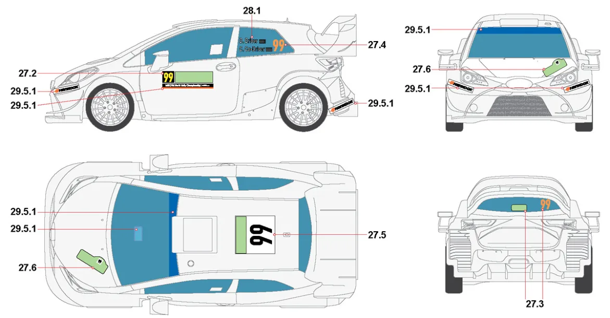
29.広告29.1競技参加者は以下を条件として、どのような種類の広告も車両に貼り付けることが許される：
－ 国内法規およびFIAの諸規則で許可されていること。－ 違反をしないものと思われること。－ 政治的、宗教的性質ものでないこと。－ 第27条2項3の規則を遵守していること。－ ウインドウを通してのクルーの視界に影響しないこと。－ 国際競技規則第10条6項2の規定に合致していること。29.2自動車製造者の名称がラリーのタイトル名称に関連付けられること、またあるいはオーガナイザーの義務付ける広告スペースに表示されることはできない。29.3義務付けられるオーガナイザーの広告内容は、エントリー受付締め切り前に、当該ラリーの競技特別規則書に、あるいは公式ブルテンに明確に記載されなければならない。
29.4オーガナイザーの任意広告29.4.1オーガナイザーは競技参加者に任意の広告を掲載するよう求める場合がある。この要請を競技参加者が断る場合、エントリーフィーは２倍を超えない範囲で増額され、いかなる場合にも追加の料金は最大で3,000ユーロまでに制限される。29.4.2このような広告を競技参加者が断る場合、自動車、タイヤ、燃料あるいは潤滑油の銘柄に言及する任意広告について競技参加者に追加料金は課されない。29.4.3競技特別規則書に明記されるオーガナイザーの任意広告を受け入れる競技参加者は、そのためのスペースをとり置かなければならない。29.4.4 任意の広告は付則(Appendix)VIに詳記されている通りに義務付けられない。29.5選手権の識別標および広告29.5.1以下のスペースは選手権プロモーターが選手権の識別票および広告を
P.37適用するために取り置かれる、それは次のステッカー一式によるものとする： － １つのスペース（高さ15cm、ウインドスクリーンの全幅）（ウインドスクリーンの上部の競技参加者に取り置かれた既存の高さ15cm部分の下）。ラリー開催国の国内法規に合致することを条件とする。－ 高さ6cm幅67cmの、第27条2項1に記載されるフロントドアパネルの直下部のスペース。－ 車両のダッシュボード上の、高さ最大10cm幅20cmまでのスペースで、選手権プロモーターの車載カメラの撮影域に入るスペース。－ 車両の各角部でホイール近くに、WRCプロモーターとの取り決め通り、幅
33.5cmまでのスペース。29.5.2製造者部門にエントリーした各プライオリティ車両は、WRC2、WRC3、および／あるいはジュニアWRC選手権でプロモーターによって提供される適切なステッカー一式を使用しなければならない。その他すべての競技参加者は、プロモーターからの要求があった場合には、適切なステッカーセットを車両に貼らなければならない。選手権識別票としての一切の広告は第29条1項および第29条2項に合致しなければならない。29.5.3 FIA公認タイヤ会社の製品の使用が求められる競技参加者（4WD車両）は、車両、着衣類、あるいはサービスエリア内に競合するタイヤ会社のブランドを表示することは許可されない。書類検査および車両検査30.書類検査30.1タイムスケジュールラリーに参加するドライバーとコ・ドライバーは発行されている競技特別規則書のタイムテーブルに従って書類検査に参加しなくてはならない。到着の遅延に対する罰金額は競技特別規則書に明記される。30.2必要な書類書類検査の間に以下の元本及び有効な書類がチェックされる： － 競技参加者ライセンス－ ドライバーおよびコ・ドライバーの競技ライセンス－ ドライバーおよびコ・ドライバーの有効な運転免許証－ ドライバーおよびコ・ドライバーのパスポート、あるいは身分証明書－ すべての外国の競技参加者および／あるいはドライバーについて、ASN発行の競技参加許可証－ 全詳細を完成させたエントリーフォーム－ 車両登録書類－ ドライバーおよびコ・ドライバーが正式に署名したドライバー誓約書主催者が審査を望むすべての書類（例：自動車保険内容の証明）は、競技特別規則書に記載されなければならない。
P.3831.ラリーの競技要素のスタート前の車検31.1一般31.1.1競技特別規則書に詳細がない限り、車両はチーム代表者によって車検に提出することができる。31.1.2車検では、競技参加者は、ヘルメットを含めた着衣類および使用予定の頭部保持装置のすべての装備を提出しなければならない。付則L項第III章を遵守しているかが検査される。31.1.3すべての車両はギアボックスおよびディファレンシャルの封印のためにサンプガードを取り外さなければならず、重量計測のために車両と共に保持していなければならない。31.1.4クルーは車両の認証された公認書式すべてを提示しなければならない。31.1.5選手権に登録した製造者は、署名された技術適合証明書（Certificate of Technical Conformity）を提出することができる。31.1.6車検員は、車両の同一性証明を要請することができる。シャシーおよびシリンダーブロックはマーキングされる。31.1.7競技前車検にて封印されたコンポーネントのみがラリーを通じて使用できる。こういったコンポーネントは封印された状態を保たなければならない。31.1.8車検後に車両が技術的および／あるいは安全に関する規則に合致していないことが判った場合、競技審査委員会はFIAテクニカルデリゲートの提案を受けて、それが修正される期限を設定するか、スタートを不許可とすることができる。31.2タイムテーブルコンポーネントの封印および製造者によってエントリーされた車両重量の検査を含めた車検のタイムテーブルは、競技特別規則書あるいはブルテンで発行されること。32.ラリー競技中の検査32.1追加の検査車両に加え、ドライバーの着衣類を含めた安全項目の様々な検査が、適格性および有資格性に関し、ラリー中いつでも、FIAテクニカルデリゲートの単独裁量および指示により、シェイクダウンも含め、競技審査委員会にそれが周知されたうえで実施できる。32.2競技参加者の責務32.2.1競技参加者はラリー競技を通じて、自身の車両の技術的適合性について責任を負う。32.2.2識別用のマーク（第31条1項6および第16条および第17条参照）が貼り付けられる場合、それがラリー競技前車検からラリー競技の終了まで、あるいは封印を切ることが本規則で認められている時まで、無傷の状態であることを確認するのは競技参加者の責務である。マークが紛失している場合、競技審査委員会に報告される。32.2.3検査の間に取り扱われた車両の部品すべてが正確に再登載されている
P.39ことを確認するのも競技参加者の責務である。32.2.4すべての不正、特にオリジナル通りであると提示された識別用マークに手が加えられていた場合、競技審査委員会に報告される。33.最終検査33.1最終パルクフェルメ33.1.1フィニッシュの正規手順が終了した後、車両はパルクフェルメに入れられ、競技審査委員会によって解放されるまでそこに留まらなければならない。33.1.2暫定公式順位認定が競技特別規則書に明記された時間に発表される。それは最終の車検が進行中であったとしても、最終の車両が最終コントロールにチェックインした後、実際にできる限り早く行われる。33.1.3抗議の締め切りが過ぎたならば、競技審査委員会は最終の車検が進行中であったとしても、パルクフェルメを開放できる。33.2車両の選択車両の分解を伴うラリー競技後の車両検査が、競技審査委員会の裁量で、あるいは抗議または競技長および／あるいはFIAテクニカルデリゲートの競技審査委員会への勧告により実施される場合がある。ドライバーの行為34.行動34.1一般規則34.1.1クルーは常にスポーツに関わる態度で行動しなければならない。34.1.2車両はラリーの競技路に戻すあるいはラリールートを空けるため、あるいは本規則で許可されている場合にのみ、牽引、輸送、あるいは押すことができる。34.1.3エキジビションドライブは、ラリーの競技特別規則書にて許可されている場合のみ実施できる。34.1.4クルーは常に、スペシャルステージの進行方向にのみ運転しなければならない（ターンで向きを変える場合のみは除く）。34.1.5一般道路セクションおよびステージのスタートでは、競技車両は４つの自由に回転するホイールとタイヤでのみ運転できる。本条項に従っていない、いかなる車両は即座に停止し、可能であればダメージを修復し、適用されるすべての規則を遵守するか、もしくリタイアをすること。その後、WRC第54条（該当する場合）に基づいて再スタートすることができる。この規則に違反した場合は、競技審査委員会に報告される。34.1.6ドライバーの視界を著しく妨げるほど酷くダメージを負ったフロントガラスでの、競技中の運転はすべて禁止されている。当該クルーは競技審査委員会の指示に従って競技を禁止される場合がある。修理後、WRC第54条により、該当する場合は、クルーは再スタートすることができる。フロントガラスを所定の位置に取り付けずにスペシャルステージを走行すること
P.40は一切認められておらず、両クルーがEN1938仕様に従う保護ゴーグルあるいはフルフェイスヘルメットのバイザーを閉めて着用する場合にのみ許される。上記いずれにおいても、警察はそれぞれの国の道路交通法規のもと、車両を停止し進行を防ぐことができる。34.2レッキおよび／あるいはシェイクダウン中の過度の高速34.2.1レッキはプラクティスではないことが強調される。レッキおよびシェイクダウンの両方の時間枠中、ラリー開催国のすべての道路交通法規が厳密に遵守されなければならず、その他の公道利用者の安全と権利が重んじられなければならない。34.2.2レッキおよび／あるいはシェイクダウン中のロードセクション速度違反は、次の通りの競技長による罰金が科される：制限速度を超えたkm/hごとに： 25ユーロ競技長による規則のそのような適用については、当該競技参加者に対し競技長により通知される。34.2.3同じラリーで２度目の違反があった場合、罰金は２倍になる。34.2.4この罰金の総額は、警察によって科される一切の罰金によって変更されることはない。34.3ラリー中の過度の高速／道路交通法34.3.1ラリーを通じて、クルーの両名ともに国内の交通規則を遵守しなければならない。34.3.2ラリーに参加しているクルーが交通違反を犯した場合、違反を発見した警察官あるいはオフィシャルは、通常の公道利用者に対するのと同じ方法で、違反者にその旨を通知しなければならない。34.3.3警察あるいはオフィシャルが違反したドライバーを停止させない決定をした場合、それにも関わらず、以下を条件として、適用できる規則に定められている一切のペナルティの適用を求めることができる： － 違反の通告が、暫定最終順位認定の掲示前に、公式の経路を通じ書面にてなされている－ 違反の宣言が、違反ドライバーを特定するのに十分な詳細を述べており疑いの余地がなく、違反の場所と時刻が正確である－ 違反の事実に様々な解釈が展開できない。34.3.4ラリーの競技要素中の違反に対するペナルティ： a) 最初の違反：
－ 速度違反：制限速度を超えたkmごとに罰金25ユーロが競技長により科さ
れる－ 速度違反以外の違反：競技審査委員会によりペナルティが適用されるb) 第２回目の違反：
－ 速度違反：制限速度を超えたkmごとに罰金50ユーロが競技長により科さ
れる－ 速度違反以外の違反：競技審査委員会によりペナルティが科されるc) 第３回目の違反：５分間のタイムペナルティが競技長により科される。d) 第４回目の違反：競技審査委員会のみにより失格処分が適用される。競技長による規則のそのような適用については、当該競技参加者に対し競技長により通知される。
P.41レッキ（レコノサンス：RECONNAISSANCE）35.レッキ35.1レッキ車両 レッキに使用されるすべての車両の共通要件： － 車両は単一色に塗装されていなければならず、広告やステッカーなどがないこと。－ ボディ下部の保護体が許可される（グループN規定に従う）。－ ２つの追加の公道公認済み前照灯が許可される。－ クルーは"軽量"インターコムシステムを使用することができる（ヘルメットなし）。－ 車載ナビゲーション装置を取り付けることができる。以下の仕様に適合する車両を使用できる： 35.1.1標準車両－ 全く改造されていない、一般公衆に販売されている通りの標準車両。エンジンは自然吸気、ターボチャージャー付ガソリンあるいはターボディーゼルエンジンで最大気筒容積2500cc。－ ＳＵＶタイプ車両。35.1.2量産車両－ エンジンは量産エンジンであること（グループN規定に従う）。－ ギアボックスは量産ギアボックスであること（グループN規定に従う）。－ エキゾーストは、ラリー開催国の許可される法規公差範囲内の最大騒音レベルの、量産エキゾーストであること。－ サスペンションはグループN規定に従うこと。－ 付則J項第253条8項1～8項3の規定に合致する鋼鉄製の安全ロールバーの取り付けが認められる。－ 車両の内装色に類似した色のバケットシートが認められる。－ 付則J項グループN規定の範囲内で、リムは自由。35.2レッキ車両のタイヤレッキ車両に使用されるタイヤは： － 公道公認済みのアスファルト用量産タイヤであること。－ 競技特別規則書に他の定めがない限り、グラベル用タイヤは自由。35.3レッキの制約現在あるいは直近の２年間にプライオリティドライバーであり、WRCラリーにエントリーした、あるいはエントリーしようとしており、そのラリーのスペシャルステージで使用されるあるいは使用の可能性のある道すべてを運転することを望むドライバーあるいはそのコ・ドライバーは、FIAおよびオーガナイザーの書面による許可を得てからのみ、それを行うことができる。その書面の許可書はその後FIAに送られなければならない。本条項規則に違反するドライバーは、競技審査委員会に報告される。
P.4235.4レッキ走行35.4.1タイムテーブルレッキは、オーガナイザーが作成したタイムテーブルにしたがって実施されなければならない。メディア活動を可能にするため、水曜日午後5時より前にレッキを完了させなければならない。午後5時から8時までの間は、FIAとチームのメディア活動時間として取り置かれる。レッキへの参加は義務ではない。35.4.2レッキのタイムテーブルの遵守アイテナリーの発表後、エントリーしているクルーに関係のある者すべてがラリーのスペシャルステージのルートを通るあるいは通過することは（徒歩は除外）、競技長およびFIAロード競技部門の明確な許可を得てのみ可能である。この規則はスペシャルステージが終了するまで適用され、公共交通用には開放されているがラリーではもはや使用されなくなる。WRC競技規則第35条3項は、それでもなお尊重されなくてはならない。スーパースペシャルステージのレッキは、ラリーの競技要素に含まれている場合、レッキタイムテーブルの一部とはみなされない。35.4.3通過の回数各スペシャルステージを各クルーが通過する回数は２回に制限される（２回走行されるスペシャルステージは１回のスペシャルステージとみなされる）。クルーは、ラリーの特別規則書に別の定めがある場合を除き、スペシャルステージにおいてラリーの進行方向に対して逆走、またはバックしてはならない。レッキ中は、通過回数を記録するために各スペシャルステージのスタートとストップのポイントにコントロールマーシャルが配備される。これ以外のチェックもスペシャルステージ内で実施される場合がある。35.4.4レッキ中の速度オーガナイザーは、スペシャルステージ内の速度制限を決定できる。このような制限は、競技特別規則書に明記されなければならず、レッキ中、すべてのクルーに使用を義務付けられている競技特別規則書で定められたシステムを使って常に検査できる。そのシステムの使用には使用料がかかる。レッキ中にシステムに干渉した場合、当該競技参加者は競技審査委員会に報告される。35.4.5シェイクダウンレッキのスケジュールにシェイクダウンを組み入れることは義務付けられない。35.4.6クルースペシャルステージの各通過中は、最大２名のみが車両の搭乗を許可される35.4.7レッキ中のサービスレッキのタイムテーブルの中で、レッキ車両のサービスの提供は、必要なすべてのサービス用器材を搭載した最大3.5トンの車両を使用し、クルーにつき最大２名の技術員(technicians)によってのみ行われる。この目的のためにオーガナイザーよりカーパスが発行される。この車両は、彼らのレッキ車両を回復されるためだけにのみ、スペシャルステージを走行することができる。35.5レッキのみの参加適切な国際ライセンスを所有するドライバーすべては、ラリーのレッキのみ参加する申請を行うことができる。レッキの規定はその全体について遵守されなければならず、オーガナイザーは申請を許可しなければならず、料金が伴う場合には、それについて競技特別規則書に記載されること。製造者チームは、数名のドライバーをP1ドライバーのスケジュールに含めることをオーガナイザーに依頼する
P.43ことができる。シェイクダウン36.シェイクダウン36.1シェイクダウンの開催36.1.1シェイクダウンステージは、ラリー競技中のステージであるかのように開催され、タイムコントロールが前に設置され、適切な安全方策すべてを含むこと。ステージはラリーの代表的であること。36.1.2シェイクダウンステージはスーパースペシャルステージ、あるいはラリーのアイテナリーのステージの一部を利用して開催できる。36.2シェイクダウンの要件36.2.1シェイクダウンステージは、メディアおよびプロモーション両方の目的で、および競技参加者がその車両を試すために組織することができる。36.2.2すべてのP1、およびWRCプロモーターと協議してFIAが要望したその他のドライバーは、その時の選手権の順位順、またFIAとプロモーターと協議して競技長から指定されたインターバルでシェイクダウンの１回目の通過を完了すること。１回目通過のスタート順（シェイクダウンのTC）は特に指定がない限り、シェイクダウンステージのスタート時刻を09:01（現地時刻）を目標とし、プログラムに従って発表される。発行されたチェックイン時刻（TCおよびシェイクダウンスタート）からの一切の逸脱は、ペナルティを科すことができる競技審査委員会へ報告される。TCとシェイクダウンスタートの間の予定された5分にテクニカルゾーンは含まれている。タイムカードはタイムコントロールで発行される。これらの決められた通過の最後に、P1ドライバーおよび上記の必要要件に影響されるその他のドライバーはそれぞれの時間枠に従ってシェイクダウンを続行することができる。36.2.3 P1ドライバーは最低でもシェイクダウンステージのすべてを2回完走すること。WRCに登録されている各メーカーはプロモーション目的で、エントリーしたP1ドライバーのうち1名がシェイクダウン3回目にその車両にWRCプロモーターが決定した同乗者1名を乗せられるようにしなければならない。P2、P3およびP4ドライバーはシェイクダウンステージのすべてを最低でも1回、最大2回完走すること。非プライオリティがシェイクダウンへの参加を許可された場合、走行は最大2回までとする。36.2.4すべての非プライオリティドライバーの参加は任意とする。36.2.5理想的な時間枠は：P1ドライバー、および第36条2項2のもと要望によって影響されたその他のドライバーは2時間（1回目の通過を含む）。すべてのプライオリティドライバーにさらに2時間、そして任意のファイナルをすべての非プライオリティドライバーについて2時間。36.3反則スタート反則スタートすべて、特に信号が与えられる前にスタートしたものについては、
P.4410分の暫定タイムが当該車両に割り当てられる。36.4免責事項ラリーにエントリーしていない同乗者がシェイクダウン中に搭乗する場合、オーガナイザーもしくはWRCプロモーターにより提供される免責事項誓約書に署名していなければならない。その同乗者は、ラリーの競技特別規則書および付則L項に適合する安全装備をすべて身に着けなければならない。36.5シェイクダウン中の故障シェイクダウン中に車両が故障した競技参加者は、競技長の許可を得てそのチームが回収できるが、第39条に概要が記載されている通り、それでも、セレモニアルスタートへの出席が求められる。36.6技術的要件シェイクダウンの前に、車両は車検に合格していなければならない。本規則第16条から17条に定められているエンジン、コンプリートトランスミッションおよびメカニカル部品の封印が適用される車両は、それが実施されなければならない。36.7シェイクダウン中のサービスラリーの競技特別規則書に別の定めがない限り、サービスはメインサービスパークでのみ実施することができる。第56条3の人員についての制限は適用されない。37.フリー走行／予選地域ラリーにのみ適用される。38.プロモーション活動
38.1ラリー競技前記者会見各選手権ラリーにて、最大６名のWRCドライバー／コ・ドライバー／チーム員が、また少なくとも４名のサポート選手権ドライバーが、記者会見に出席するため、FIAメディアデリゲートによって選出される。記者会見は、通常シェイクダウン後の「ミート・ザ・クルー」の３０分後、あるいは競技特別規則書に詳細の記載される通りの、オーガナイザーとFIAメディアデリゲートが合意した時間でメディアセンターにて行われる。不参加は競技審査委員会に報告される。38.2ラリー競技後記者会見上位３名のクルー、優勝競技参加者代表者、およびサポート選手権勝者クルー（含複数）は、各選手権ラリーのフィニッシュ後にメディアセンターで開催される記者会見に出席しなければならない。FIAメディアデリゲートによる解散がされない限り、クルーは記者会見の開始から１時間まではメディア対応義務が求められる。遅刻した者、退席が早かった者および不参加は競技審査委員会に報告される。38.3「ミート・ザ・クルー」（‘MEET THE CREWS’）シェイクダウン終了後と、オーバーナイトリグループ前の各セクションの終了後、
P.45上位３名となったドライバーは、メディアおよび観客向けの「ミート・ザ・クルー」セッションに参加しなければならない。このセッションはサービスパークにて（通常は「WRCステージ」）P1ドライバーのシェイクダウン時間枠の３０分後に行われ、当該チームにはFIAメディアデリゲートより、ラリー中に時間と場所が知らされる。その他の選出されたドライバーおよびチーム員は、FIAメディアデリゲートより要請された場合は、これらのセッションに出席できるようにしなければならない。38.4サイン会（AUTOGRAPH SIGNING SESSION）すべてのプライオリティドライバーおよびそのコ・ドライバーは、チームエリア前で、サービスベイに到着後最低10分間のサイン会に出席できるようにしなければならない。38.5オーガナイザーのプロモーション活動オーガナイザーはプロモーターと協力し、レッキあるいはラリー中に、クルーおよびチーム員参加の妥当なプロモーション活動を組織することができる。そのような要請に適した時間は、スケジュール的な余裕がなければならず、それに関わる人員はラリー開始の少なくとも15日前までに通知を受けなければならない。38.6すべてのプライオリティドライバーとそのコ・ドライバーは、自身のサービスエリア到着時にWRCプロモーターが指名したカメラクルーのインタビューの目的のため対応可能でなければならない。38.7競技特別規則書に明記される場合、指名されたドライバーおよびそのコ・ドライバーは日中サービスの間１０分間のプロモーション活動に参加できなければならない。スタートおよび再出走39.セレモニアルスタートラリーのプロモーションおよびメディア向け関心を高めるために、セレモニアルスタートが行われる。セレモニアルスタートのスタート間隔と順番は、オーガナイザーの裁量に任される。すべてのセレモニーの予定および場所は、競技特別規則書に記載されなければならない。競技車両に搭乗しているクルーがセレモニアルスタートに参加できない場合、競技審査委員会が通知を受け、必要な車検を受け合格することを条件として、その車両に割り当てられたスタート時刻に、残りのラリーをスタートすることができる。当該クルーは、それでもなお、ドライビングスーツを着用し、予定時刻にセレモニアルスタートには出席しなければならない。40.スタートエリア40.1ラリースタートラリーの競技要素スタートの前に、オーガナイザーはスタートエリアにすべての
P.46競技車両を集合させることができ、そこには競技特別規則書に詳細のあるスタート時刻の最大４時間前に車両が運転されてこなければならない。スタートエリアへの遅延到着についての罰金のみが、競技特別規則書に明記されなければならない。40.2セクションスタートセクションのスタートに３０分を超えて到着した一切のクルーはそのセクションのスタートが認められない。41.スタート順と間隔41.1ドライバーの再配置競技長は、安全上の理由で、競技審査委員会が認識した上で、ドライバーを再配置あるいは車両間のタイム間隔を変更することができる。41.2ラリー中のスタート順
| P1 | P2 | P3 およびP4 | 非プライオリティ | |||||||||||
| （ | 木曜日 SSS | ） | オーガナイザーの 裁量による | |||||||||||
| 適用のある場合 | ||||||||||||||
| 金曜日 | 現行の選手権認定 1) 順 | 1) 現行の選手権認定順 およびドライバーのパ フォーマンスに基づ き、オーガナイザーの 裁量による。 | ドライバーのパフォー マンスに基づき、オー ガナイザーの裁量によ る、合併グループで。 | オーガナイザーの裁量 による合併グループ で。 | ||||||||||
| 土曜日と日曜日 | P1ドライバーが認 2) & 3) 定順位逆順で | 2) 認定順位順 | 2) 認定順位順 （合併グ ループで） |
1)選手権認定順位とは、その年のそれぞれの選手権ドライバー部門の暫定認定順位の順序を意味する。選手権の第１戦については、スタート順を前年の最終認定順位の順とする。前年に順位の認定を受けていないドライバーについてはFIAが順序を決定する。WRC競技規則第54条の下で金曜日に再出走するP1ドライバーも、選手権の認定順位でスタートする。2)認定順位の順序は常に前日の最終スペシャルステージの終了時点での暫定総合順位に基づく。ただし、その日の最後にスーパースペシャルステージが開催された場合は除く。この最終スペシャルステージ（スーパースペシャルステージを除く）の終了後に課された一切のペナルティは無視されるが、このスタート順の確立目的でのみとする。3)WRC競技規則第54条の下で土曜日および／あるいは日曜日に再出走となるP1ドライバーおよび／あるいは日曜日に再出走となるP1ドライバーは、その後に続くすべての日において、その他のP1ドライバーの前で合併グループとして、その順位位置の逆順でスタートする。41.2.1 ２日間フォーマットのイベントの場合、FIAラリー部門は、上記の金曜日のスタート順が１日目の競技日の半分にのみ使用され、土曜日のアイテナリーのどの時点でスタート順が上記の順番に切り替えられるかを決定する場合がある。41.3スタート間隔41.3.1スタートリストおよび再出走リストにあるP1ドライバーのスタート間
P.47隔は、最低３分間とする。41.3.2 P2、P3、P4およびその他すべての車両は、１分間の間隔をもってスタートする。ただし、ターマックラリーにおいては、P1ドライバーのスタート間隔は少なくとも２分間とする。41.3.3生中継テレビステージすべて、およびプライオリティドライバーのグループについては、競技長はプロモーターおよびFIAとの合意後に、問題のセクションのスタート間隔をスタートリストで与えられている間隔と比較して、変更することができる。生中継テレビステージの後にリグループがない場合、次のリグループまでにあるスペシャルステージも、これらのスタート間隔のままの場合がある。41.3.4このような生中継テレビステージのためのスタート間隔の変更すべては競技長からのコミュニケーションで通知される。41.3.5 WRCプロモーターは競技特別規則書に記載するために、生中継テレビステージを指定する。コントロール42.コントロール － 一般要件42.1コントロールの標識すべてのコントロール、すなわち、通過およびタイムコントロール、ストップコントロールを含むスペシャルステージのスタートおよびフィニッシュ、リグループエリア、メディアゾーンは、付則(Appendix)Ｉに示される図および距離に合致するFIA承認の規格化された標識によって示され、ロードブックに記載されなければならない。42.2保護バリアコントロールの前後最低5mのエリアは、コントロールの作業実施のため、道路の両側がバリアで保護されていること。42.3コントロールエリアでの停車時間いかなるコントロールエリアの停車時間も、コントロール作業実施に必要な時間に制限される。42.4作業準備42.4.1コントロールは、先頭の競技車両が通過するターゲットタイムの少なくとも30分前には機能するように準備を完了しなければならない。42.4.2競技長が別の決定を行わない限り、最終競技車両の到着予定時刻から最大＋15分の遅延時間にてコントロールは終了する。42.5コントロールおよび方向42.5.1クルーはコントロールに正しい順番でラリールートの進行方向に従ってチェックインしなければならない。42.5.2コントロールエリアへ再進入することは禁止される。
P.4842.6マーシャルの指示42.6.1クルーはいかなるコントロールにおいても、マーシャルの指示に従うことが義務付けられる。これに従わなかった場合は競技審査委員会に報告される。42.6.2すべてのコントロールオフィシャルは識別できなければならない。各コントロールにて、チーフオフィシャルは他との区別が明瞭なタバードを着用していなければならない。42.7メディアゾーン(MEDIA ZONES)バリアで保護されたメディアゾーンは、サービスパークの黄色のタイムコントロールボードの手前、およびタイヤフィッティングゾーンTFZ(Tyre Fitting Zones) （WRC競技規則第57条2項1に基づくものは除く）、およびすべてのリグループパーク（サービスに続くオーバーナイトリグループの場合は除く）、および表彰式手順前のホールディングエリア内に設置できる。このメディアゾーンに立ち入ることは、適切なパスを所持している者に限られること。オーガナイザーは、クルーがメディアゾーンに最低15分立ち寄ることが期待できるようなアイテナリーおよびタイムスケジュールを組まなければならない。メディアゾーンは、ロードブックでことさら明確に記されていなければならない。42.8車載カメラのデータ交換ポイント(ON-BOARD CAMERA DATA EXCHANGE POINTS)車載カメラのデータはチーム員の立会いのもと、メディアゾーン、リグループあるいはパルクフェルメ、およびリモート給油ゾーンの出口の後において、交換することができる。オーガナイザーは、アイテナリー内に、車載カメラ（OBC）のデータ交換ポイントも設置できる。このポイントは競技長によりコミュニケーションにて通知されなければならず、ビデオデータの交換のみに利用されなければならない。43.パッセージコントロール(PASSAGE CONTROLS)これらのコントロールは付則(Appendix)Ⅰに示される標識で識別でき、そこにおいては、マーシャルが単純に、クルーから渡されたタイムカードに直ちにスタンプを押す、および／あるいは署名しなければならない。44.タイムコントロール(TIME CONTROLS) 44.1運営これらのコントロールでは、マーシャルがカードを手渡された時刻をカードに記入する。時刻は分単位まで記録される。44.2チェックイン手順44.2.1チェックイン手順は、車両がタイムコントロールエリアの入口標識ボードを通過した時点で開始される。44.2.2入口標識ボードとコントロールの間では、クルーはいかなる理由であっても停止したり、または異常に低速で運転したりすることは禁止される。44.2.3実際の計時およびタイムカードへの時刻記入は、２名のクルー構成員と車両がコントロールエリアに入り、コントロールテーブルの付近にいる場合のみ
P.49行われる。44.2.4チェックイン時刻はクルーの1名がタイムカードを適切なマーシャルに手渡した瞬間の正確な時刻とする。44.2.5その後、手書きあるいは印刷装置のいずれかにより、適切なマーシャルがカードを受け取った実際の時刻をカードに記入し、それ以外は記入しない。44.2.6目標チェックイン時刻はスペシャルステージのスタート時刻あるいは１つ前のTC時刻に、許容されるターゲットタイムを加算した時刻であり、これらの時刻は分単位で表される。44.2.7目標チェックイン時刻はクルー自身が責任を負い、コントロールテーブル上の公式時計を参照することができる。この目標チェックイン時刻について、マーシャルはクルーにいかなる情報も提供してはならない。44.2.8クルーは、車両が目標チェックイン時刻の同じ分、またはその前の１分間にコントロールエリアに進入した場合でも、早着について何らペナルティを受けない。44.2.9クルーは、適切なマーシャルへのカードの手渡しが目標チェックイン時刻と同じ分で行われた場合、遅延について何らペナルティを受けない。44.2.10 目標チェックイン時刻と実際のチェックイン時刻に差があった場合、以下の通りにペナルティが適用される： a) 遅着の場合：時間差１分ごと、１分未満の端数につき、それぞれ１０秒。b) 早着の場合：時間差１分ごと、１分未満の端数につき、それぞれ１分。44.2.11 当該ラリーの競技特別規則書に明記されている、またはその後のブルテンで公示されていることを条件として、オーガナイザーはクルーがペナルティを受けることなくチェックイン時刻前にチェックインすることを認めることができる。44.2.12 クルーがチェックイン手順を遵守しなかったことが判明した場合、当該コントロールのチーフマーシャルは、直ちにその件を書面による報告書にして競技長に提出しなければならない。44.2.13 競技長の裁量にて、早着についてペナルティを受けたクルーに対し、当初に予定されていた時刻に出発するのに必要なニュートラリゼーションの時間を与えることができる。44.3スペシャルステージ前のタイムコントロールスペシャルステージのスタートコントロール前のタイムコントロールでは、以下の手順に従うこと： 44.3.1ロードセクションの終点のタイムコントロールにて、適切なマーシャルがタイムカードに、クルーのチェックイン時刻とそのステージの暫定スタート時刻の両方を記入する。クルーがステージのスタートの準備をしてスタートラインに着くまでに３分間の間隔がなければならない。44.3.2 ２組以上のクルーが同じ分にチェックインした場合、彼らのそのスペシャルステージの暫定スタート時刻は、直前のタイムコントロールでの相対的な到着時刻順とする。直前のタイムコントロールに到着した時刻が同じ場合は、さらにその前のタイムコントロールに到着した時刻が考慮され、順番が決まるまで同様に繰り返すものとする。44.3.3クルーはタイムコントロールでチェックインした後、競技車両を続くスペシャルステージのスタートコントロールまで自走で進め、本規則に規定される手順に従ってスタートすること。（第48条参照）。
P.5044.3.4暫定スタート時刻と実際のスタート時刻に差がある場合、競技審査委員会が別途決定する場合を除き、スペシャルステージのスタートでマーシャルが記入した時刻が有効とする。44.3.5ステージスタート時刻は、その後、次のタイムコントロールのチェックイン時刻を算出するために使用するスタート時刻となる。44.4タイヤウォーミングゾーン(TYRE WARMING ZONE)（TWZ）44.4.1タイムコントロールとスペシャルステージのスタートとの間にタイヤウォーミングゾーンを設けるかどうかは、オーガナイザーの任意とする。TWZとして使用する場合、その道路はレスキューカー要件を除きスペシャルステージのように設定されなければならない。なお、レスキューカーはスペシャルステージのスタート後方に配置したままとする。44.4.2タイヤウォーミングゾーンを設けるためには、タイムコントロールから次に続くスペシャルステージのスタートまでの距離は、500m以上なければならない。TWZは、ロードブックに記載しなければならない。44.4.3 TWZは、タイムコントロールの後に「TWZ」ボードがある所で始まり、「TWZ End」ボードで終了する。ドライバーは危険が生じた場合は、いつでも車両を停止することができなければならない。TWZ内での意図的な停車や逆走は厳禁とする。「TWZ End」のボードとスペシャルステージのスタート地点の間は、100m以上なければならず、クルーはスタートラインの位置まで歩くような速度で走行しなければならない。44.4.4スペシャルステージのスタート手順は、第44条3.1項に規定されている。クルーがタイヤを温め、スペシャルステージのスタートに備えるため、TWZの長さを考慮して３分の間隔を延長することができる。44.4.5 TWZを運転する前に、クルーは第53条1項に記述される装備品を身につけていなければならない。44.4.6本条項によって改訂されないすべての規則は、変更されることなく引き続き有効である。44.4.7オーガナイザーは、競技特別規則書において諸規定を修正することができるが、上記の規定を変更することはできない。45. 認められる最大遅着時間45.1認められる最大遅着時間いかなる個々のターゲットタイムについても３０分を超える遅着、あるいは積算して２つのオーバーナイトリグループの間のすべてのセクションで３０分を超える遅着があった場合は、当該競技参加者はそのコントロールでリタイアしたものとみなされ、第44条2項.10.a）の通りに遅着について蓄積された合計ペナルティ時間は３０分の遅着ペナルティとされる。クルーはそれにも関わらず、第54条の条項の下で再出走することができる。そのような遅着時間の計算では、実際の時刻が適用され、ペナルティタイム（１分ごとに１０秒）は適用されない。45.2早着早着は、いかなる状況であっても、クルーの認められる最大遅着時間の減算を許すものではないこと。
P.5145.3認められる最大遅着時間の超過の通知第45条1項に定める許される最大遅着時間を越えた通知は、セクションの終了時点でのみなされる。45.4最終車両後の最大遅着安全上の理由により、競技長は、スペシャルステージ直前のタイムコントロールにおいて、通常走行している最後尾車両の通過から１０分を超えて到着したクルーに対し、代替ルートを走行するよう指示することができる。当該クルーには、第52条に従い、そのスペシャルステージに対するノーショナルタイムが付与される。46.リグループコントロール(REGROUPING CONTROLS) 46.1リグループコントロールの手続き46.1.1リグループコントロールに到着時、クルーは自身のスタート時刻についての指示を受ける。その後、クルーはマーシャルの指示に従って車両を進める。46.1.2すべてのクルーは、ＴＣに隣接して設けられた公衆の立ち入り可能なサインゾーンに最大５分間いる準備をしなければならない。46.2リグループからの退出オーバーナイトリグループの後およびパワーステージのスタート前を除き、車両はリグループに到着した順で再スタートすること。ただし、スペシャルステージの中断または停止、その他の理由により１台または数台の車両が遅れ、その結果、異常な順序でリグループに到着した場合、競技長は競技審査委員会の了解を得て、当該車両にスタート順の変更を命ずることができるものとする。スペシャルステージ47.一般47.1計時スペシャルステージの計時は１０分の１秒までとする。「パワーステージ」の計時は１０００分の１秒までとする。47.2 FIAオフィシャルおよびデリゲートFIAオフィシャルおよびデリゲートが業務を遂行する場合、コースクロージングカー（ゼロカー）のスタート時刻の遅くとも３０分前までに、FIAオフィシャルおよびデリゲートがスペシャルステージへの進入を実施するが、FIAセーフティデリゲートは、スペシャルステージへそれより遅く入ることができる。ゼロカーがスペシャルステージのルート上にいる間にそれら車両に追いついた場合、デリゲートの車両は停止し、駐車し、続行する前に追い上げ車両（スイーパーカー）が通過するのを待たなければならない。47.3ヘリコプターによる救出
P.52ヘリコプターによる搬送が予想される場合、以下を勘案しなければならない： 47.3.1天候がヘリコプターの使用を妨げる場合は、チーフメディカルオフィサーとの協議後、搬送に適すると考えられる時間よりも救急車で選択した応需病院への搬送の時間が長い場合には、（競技長とチーフメディカルオフィサーの共同決定において）スペシャルステージは延期または中止できる。47.3.2ヘリコプターが用意される場合でも、搬送中集中治療が必要な負傷者のために、義務付けられる蘇生治療に熟練し、事故負傷者の病院前救護処置の経験豊かな医師を伴った陸路の搬送計画は免除されない。その場合可能であれば、熟練した救急救命士の補佐を受ける。48.スペシャルステージスタート48.1スタート地点スペシャルステージは、スタートラインに車両を停止したうえでのスタンディングスタートで始められる。48.2スタート手順48.2.1電子スタート手順は、スタートラインからクルーが明確に視認できるものとし、カウントダウン時計および／あるいは連続ライトシステムのいずれかで表示できる。スタートライトの順序が付則(Appendix) VIIのものと異なる場合、ラリーの競技特別規則書に記載されていなければならない。48.2.2常設のスタートラインがなければならず（グラベルや雪のラリーであっても）、反則スタート検知し記録するフォトセル装置がスタートラインの50cm先に設置しなければならない。48.2.3実際のスタート指示時刻をタイムカードに記入した後は、そのタイムカードは可能な限り迅速にクルーに返却されなければならない。48.2.4スタートラインに車両が到着したら、正確なスタート位置を定めるためにマーシャルが置いたスティックに車両の前部を配置させること。スタート時刻の1分前を切り、車両が正しい位置に停止してから、マーシャルはそのスティックを外し、クルーは自動カウントダウン時計を参照する。スタート時刻までは車両の位置を変更することは認められず、変更があった場合は競技審査委員会へ報告される。48.3マニュアルスタート手順クルーにタイムカードを返却した後、マニュアルスタート手順を利用する競技会では、スタートマーシャルが大声で、３０秒－１５秒－１０秒とカウントダウンし、最後の５秒は１秒ずつ読み上げる。最後の５秒が経過したら、スタート指示をすること。48.4クルーの責任によるスタート遅延48.4.1クルーの責任によりスタートが遅れた場合、マーシャルはタイムカードに新たな時刻を記入し、遅延１分ごとに、あるいは遅延１分未満の端数についても、ペナルティ１分が科せられる。48.4.2割り当てられた時刻にスペシャルステージをスタートするのを拒否したクルーは、そのスペシャルステージを走行したか否かに関わらず、すべて競技審査委員会に報告される。
P.5348.4.3スタート合図が出されてから２０秒以内にスタートラインからスタートしなかった車両はすべて、リタイアしたものとみなされ、直ちに安全な場所に移動される。この車両はWRC競技規則第54条により翌日の再出走が認められる。48.5スペシャルステージの遅延ステージの実施に２０分以上の遅れが出た場合、次の競技車両が通過する前に、ステージが再開されることを観客に知らせなければならない。あるいはステージを中止しなければならない。48.6反則スタート反則スタート、特にスタート合図前にスタートする違反については、以下のペナルティが科される：第１回目の違反：１０秒第２回目の違反：１分第３回目の違反：３分それ以上の違反：競技審査委員会の裁量に任される。これらのペナルティは、競技審査委員会が必要と判断した場合に、より重いペナルティを科すことを妨げるものではない。タイムの計算には、実際のスタート時刻を用いなければならない。49.スペシャルステージフィニッシュ49.1フィニッシュラインスペシャルステージのフィニッシュタイムは、ストップラインの200m以上手前の、車両が速度を落とせると予想される、フライングフィニッシュで記録される。フライングフィニッシュとストップラインの間のエリアは、カーブ、鋭角なあるいは見間違うようなコーナー、あるいはゲートのような障害物または危険な妨害物があってはならない。黄色の予告標識とストップ標識の間での停止は禁止され、違反は競技審査委員会に報告される。計時記録はフィニッシュラインで、光電管を使用して行い、ストップウォッチでバックアップ計時を行う。計時委員は、赤地にチェッカーフラッグのついた標識で示される、フィニッシュラインと同一延長線上に配置されなければならない。49.2ストップポイントクルーは、赤い"STOP"標識で示されるストップポイントにて、タイムカードにフィニッシュタイム（時間、分、秒、および10分の1秒）の記入を受けなければならない。計時委員が直ちにマーシャルに正確なフィニッシュタイムを伝えられない場合は、マーシャルはクルーのタイムカードにスタンプの押印のみを行い、タイムは次のリグループコントロールにて記入される。50.「パワーステージ」50.1告示：各世界ラリー選手権ラリーでは、ＴＶ放映効果を高める目的で、１つのスペシャルステージが「パワーステージ」として指定される。
P.5450.2特性このステージは次のとおりとなる： － FIAおよびプロモーターが協議の上、その承認を得て選ばれること。－ ラリーを代表的なものであること。－ ラリーの最終ステージであること。－ プロモーターとFIAの合意を得た時間で行われること。－ 少なくとも４０分間のリグループの後に行われること。第63条5項2は特別規則書に別の定めがある場合を除き、このリグループには適用されない。－ 計時は1000分の1秒までなされること。50.3 TV生中継が行われる車両のスタート順およびスタート間隔は、競技長と協議したFIAとWRCプロモーターによって決定される。TV生中継されるパワーステージのクルーのスタート順およびスタート間隔は、パワーステージ前のリグループにて競技長により伝えられる。50.4「パワーステージ｣ポイントの付与－ ポイントは第3条3項2に決められる通りの配点基準で与えられる。－ ポイントを配点する目的で、パワーステージの順位認定は、当該ステージのタイムに、このステージで科されたその他のタイムペナルティ、不正スタートペナルティを含めて計算される。－ ポイントを得るためには、ドライバーはラリーの最終順位にて順位認定されていなければならない。－ ドライバーがパワーステージの順位認定に表示されているが、ラリーの最終公式順位で順位認定されていない場合、競技審査委員会はポイント付与にあたり、次の順位の競技参加者をパワーステージの順位認定で繰り上げるべきかどうかを決定する。－ パワーステージが、パワーステージに参加資格のあるすべてのP1ドライバーがステージを完走する機会を持つ前に決定的に中断されてしまった場合、FIAはそのパワーステージに一切のポイントを与えないことを決定できる。－ 指定された順序でパワーステージを開始しないクルーは、2026年FIA WRC競技規則の第3条3項2の通りパワーステージポイントを獲得する資格はない。そのようなクルーは、他のドライバーからポイントを減点させることもできない。50.5生中継のＴＶ放映の目的で、ステージのSTOPコントロールの後でインタビューおよび表彰式が行われる。オーガナイザーは、それに参加できるよう、ステージのSTOPコントロールの直後の道路セクションにて、いかなる車両およびそのクルーも停止させることができる。これらのクルーは、ステージのSTOPコントロールの担当者の指示に従い、必要に応じて、その担当者は次のロードセクションに許容される時間を変更することができる。
51.スーパースペシャルステージ51.1スーパースペシャルステージの特徴51.1.1 ２台以上の車両が同時にスタートする場合、各スタート地点の走路設計
P.55は類似したものでなければならない。各車両には同様のスタート手順が適用されなければならない。異なるスタート位置からのステージ距離を均衡化するために、車両のスタートラインをずらして配置することができる。51.1.2スーパースペシャルステージの実施は任意である。51.2スーパースペシャルステージの実施スーパースペシャルステージの実施、スタート順およびタイム間隔についての特別規定は、すべてプロモーターの承認を得た上で、オーガナイザーの裁量に任される。しかしながら、この情報はラリーの競技特別規則書に含まれなければならない。51.3安全51.3.1マーシャルによって提示される赤旗あるいは赤色のライトによるシステムは、競技参加者に停止あるいは減速の指示をするために配備されなければならない。第53条5項5も参照。51.3.2安全を確実にするために、ステージを完走できなかった競技参加者の車両は、オーガナイザーによってステージの終了地点、あるいは安全な場所に退避目的で移動される場合がある。52.スペシャルステージの一時停止 － 妨害52.1スペシャルステージがいかなる理由にせよ一時停止あるいは中止された場合は、影響を受けた各クルーには、競技長がもっとも公平と判断するタイムが与えられる。競技長は、これに対応する通告を公示する。しかしながら、ステージの中断について、単独または共同かを問わず原因となったクルーは、この措置による利益を得ることはできない。52.2もしクルー/車両が前走車両によって大幅かつ明らかに遅延した場合、競技長は同じ原則を適用し、公正だと考えるタイムを割り当てることができる。10秒を超える遅延については十分に考慮され、著しい遅延と見なされる場合がある。前走車両によって引き起こされた遅延の証拠は、タイム修正を要求する競技者によって提供されなければならない。53.競技参加者の安全53.1クルーの装備スペシャルステージ上に車両が走行中、ストップコントロールまで、クルーは公認済みのクラッシュヘルメット、付則L項第III章‐ドライバーの装備に合致した、すべての要求される安全着衣および装備を、装備製造者が意図した通りに身に着けていなければならず、安全ベルトは正確に装着されなければならない。クルーが自身のヘルメットが正確に固定されていないことに気づいた場合、ステージ上の安全な場所に停止し、ペナルティを受けることなく締め直すことができる。その他いかなる違反も競技審査委員会によるペナルティを受ける。53.2車両の装備53.2.1 FIA安全トラッキング（追跡）装置
P.56すべての車両には、SOS／OK表示器を備えたFIA安全トラッキング装置が装備されていなければならない。各オーガナイザーは、ラリーの競技特別規則書の付則として、設置および操作の指示書を発行する。SOS／OK表示器は、ハーネスが固定された状態で座ったときに、ドライバーとコ・ドライバーが簡単にアクセスできるものでなければならない。53.2.2 SOS／OKサイン各競技車両は、少なくとも42cm×29.7cm（A3）の寸法の、裏面に緑の"OK"サインを記した赤色の"SOS"サインを搭載していること。53.2.3赤い三角表示板各競技車両は、赤い反射三角表示板を搭載していなければならない。53.3スペシャルステージ上でのインシデント53.3.1緊急の医務対応が必要な事故の場合、以下が適用される： － FIA安全トラッキング装置のSOS表示器が可能な限り早く起動されなければならない。－ 可能であれば、赤い"SOS"サインを後続の車両および支援しようとしているヘリコプターに、直ちに提示すること。－ 可及的速やかに、後続のドライバーに警告するため、車両より少なくとも50m手前の、車両と同じ側の道路上の目立つ場所に三角表示板が置かれなければならない。これは、車両が道を逸脱していた場合にも提示されなければならない。53.3.2 "SOS"サインをそれらに提示したクルー、あるいは事故に遭った車両が見えるが”OK"サイン提示がされていない場合、クルーは、直ちに、例外なく、支援を行うために停車すること。すべての後続車両も停止すること。その現場に来た２番目の車両は、次のラジオポイントに連絡するために進むこと。その後の車両は、緊急車両のためにルートを開けておくこと。この内容に従い停止するすべてのクルーは、第52条に沿ってタイムが割り当てられる。53.3.3緊急な医務介入が必要ではない事故の場合、あるいはその他の理由でスペシャルステージ上または脇に車両が停止した場合は、一時的か恒久的かに関わらず、以下が適用される： － FIA安全トラッキング装置上のOK表示器が１分以内に起動されなければならない。－ 緑色の"OK"サインが後続車両および支援しようとしているヘリコプターに、明確に示されなければならない。クルーが車両から離れる場合、"OK"サインがその他の競技参加者に明確に見えるように提示されなければならない。－ クルーにより、後続のドライバーに警告するため、車両より少なくとも50m手前の、車両と同じ側の道路上の目立つ場所に三角表示板が置かれなければならない。これは、車両が道を逸脱していた場合にも提示されなければならない。53.3.4いかなる理由においても、上記いずれかの状況でOK／SOSボードを提示することが可能ではない場合、車両の外でクルーによって示される明らかで明確に理解できるジェスチャーで代替することができる： － 腕を上げ、親指を立てて示す“OK” － 頭の上で腕を交差して示す“SOS” 53.3.5上記の規則に従うことができるが怠ったクルーはすべて、競技長に報告される。
P.5753.3.6ロードブックには、事故の場合の手続きを示したページが含まれていること。53.3.7スペシャルステージ走行中にラリー競技車両に対して必要な修理を実施しなければならない場合、当該修理は、安全が確保され、かつ他の競技者の安全または通行を損なわない道路区間において実施されなければならない。53.4クルー以外を巻き込むスペシャルステージ上でのインシデントクルー以外が怪我をする事故にクルーが巻き込まれた場合、車両は直ちに停止し、第53条3項1に決められた手順が遵守されなければならない。53.5赤旗53.5.1電子赤旗a) 赤旗ライトがすべての車両に使用される。電子赤旗がラリーコントロールから起動された場合、「FIAエマージェンシーコンソール(FIA Emergency Console)」の赤旗LEDライトが点滅し、車両内で連続アラームが鳴る。クルーは、電子赤旗を確認したことを即座に「ACKNOWLEDGE」（確認）ボタンを押すことで知らせなくてはならず、第53条5項3に定める通りに進まなくてはならない。b) 使用されるFIA承認赤旗LEDシステムは、FIA安全追跡システムサプライヤーによってのみ提供される。c) 赤旗LEDは両クルーともに視認できなければならない。53.5.2ラジオポイントの赤旗赤旗は競技長の指示によってのみクルーに提示される。旗はロードブックにマークされたラジオポイントでのみ、付則(Appendix) Ⅲ第5条2項6に定められた明瞭な色のラジオポイントのシンボルマークを付けたジャケットを着用したマーシャルによって提示することができる。インシデントの現場手前のすべてのラジオポイントでは旗が提示される。赤旗は各ステージラジオポイント（約5km間隔で設置）にて利用できなければならない。スペシャルステージでは赤旗以外の旗はどの地点においても提示できない。53.5.3赤旗の意味提示された赤旗の通過および／あるいは電子赤旗を受けること、いずれが早くとも、ドライバーは直ちに減速し、スペシャルステージの終了までその落とした速度を維持し、マーシャルあるいは緊急出動車両のドライバーの指示に従わなければならない。この規定に違反があった場合には競技審査委員会の裁量にてペナルティが科される。53.5.4赤旗を提示されたクルーには、第52条の通り、ステージの暫定のタイムが与えられる。53.5.5異なる合図システム（点滅ライトなど）がスペシャルステージで使用される場合、競技特別規則書に完全な詳細が記載されなければならない。53.5.6ステージが中断または中止され、クルーが当該スペシャルステージの通過を求める場合、ドライバーにどのように進行するかを知らせるため、スタート地点で赤旗が提示されなければならない。53.5.7レッキ中の赤旗ポイントレッキ中は、各ラジオポイントの位置にラジオポストのシンボルを表示した標識を提示しなければならない。この標識はラリー本番で使用されるものより小さくてもよいが、レッキ中のクルーが当該位置を記録できるよう、明確に視認できるものでなければならない。
P.5853.6シケイン53.6.1安全対策としてシケインが設定される場合がある。競技参加者はスピードを抑制するために設計された一連の人工的なカーブを通過しなければならない。53.6.2すべてのシケインは、セーフティドシエ草案とロードブックに記載しなければならない。付則Iで定義される標識を用いて設置されなければならない。標識とシケイン各構成要素の完全な位置を示す標識とマーキングは、レッキの開始前までに設置されていなければならない。シケインに関する安全規定の詳細については、付則H第5条5項7を参照すること。53.6.3審判員（A Judge of Fact）は、シケインの正しい通過が行われているかを監視する。いずれかの構成要素がその指定位置から完全に移動した場合、移動した構成要素1つにつき5秒のタイムペナルティが当該クルーに科される。当該ペナルティは、競技長により競技参加者へ通告される。54.リタイア後の再出走54.1一般54.1.1ラリー競技特別規則書にて別に定めのある場合を除き、セクションを完走できなかったクルーはオーバーナイトリグループに続く次のセクションのスタートからラリーを再開するものと仮定することができるが、ロードブックの後ろにある書式（最終リタイヤ）を記入し、可能なら再出走リストが公示される前にできる限り早くオーガナイザーにそれを提出すること。ただし、競技長によりそれとは別の方法が確認される場合は除く。54.1.2競技長がリタイアの通知を受けた後、クルーは自身のタイムカードを引き渡さなければならない。リタイアがスペシャルステージ上あるいはストップコントロール内であった場合、そのステージタイムは記録されず、第54条2項が適用されること。54.1.3本規則第45条による許可される最大遅延時間を超えた場合は、当該競技参加者は、次のオーバーナイトリグループの後で再出走することが認められる。当該競技参加者が最大遅延時間を越えたタイムコントロールから、第54条2の通りタイムペナルティが適用される。54.1.4ラリー最終日のセクションをリタイアしたクルーはすべて、順位の認定がなされない。54.2ペナルティ再出走したすべてのクルーに、タイムペナルティが適用される。そのタイムペナルティは次の通り： 54.2.1参加できなかったあらゆるステージあるいはスーパースペシャルステージにつき：10分間。54.2.2このタイムペナルティは、不参加の各ステージにつき、ドライバーのプライオリティグループ（P1、P2、P3、P4）での最速タイムに追加され、当該クルーがリタイアしたスペシャルステージあるいはスーパースペシャルステージを含む。非プライオリティドライバーについては、このタイムペナルティは、非プライオリティドライバーによりグループ内で達成された最速タイムに追加される。クルーがそのグループに単独である場合、競技長が公平と判断される時間を割り当てる。
P.5954.2.3リタイアがオーバーナイトリグループ前の最終のスペシャルステージあるいはスーパースペシャルステージの後であった場合、クルーはそれにも関わらずその最終のスペシャルステージあるいはスーパースペシャルステージについてリタイアしたとみなされる。このような影響を受けるクルーが、その最後のステージでプライオリティドライバーグループの最速タイムを出した場合、その自身のタイムはタイムペナルティの適用のために考慮される。55.再出走前の修理55.1サービスの場所および認められる時間55.1.1再スタートを望む一切のFIAプライオリティドライバーの車両は、ラリーのサービスパークでサービスを受けなければならない。リタイアの後、競技長からパルクフェルメに直接移動させるよう許可が出るまで、車両はリタイアした場所に留まらなければならない。P1／P4ドライバーの車両は彼らのサービスエリアに直接移動され、FIAテクニカルデリゲートが修理をして良いか否かを許可するまで、パルクフェルメ状態にて待機する。リタイアしたFIAプライオリティドライバーの車両へのサービスは、本規則の関連条件すべてを遵守しなければならない。車両はパルクフェルメから最大３時間、P1車両は４時間、サービスのため１度だけ出すことができる（45分のフレキシサービスおよび、２つのタイムコントロールの間に認められる一切の最大遅延時間を含む）。しかしながら、すべての車両は、オーバーナイトリグループの後、次のセクションのスタートの少なくとも４時間前にはパルクフェルメに戻されなければならない。P1車両は、その４時間を２つのセクション時間に分けることができる。セクションごとの時間の量は、チームで相違となる。55.1.2その他のクルーのリタイアした車両へのサービスについては、一切制約はないが、彼らの車両は、オーバーナイトリグループの後、次のセクションのスタートの少なくとも４時間前にはパルクフェルメに提出しなければならない。55.2修理された車両の技術的要件修理された車両が車検員による安全上の検査を合格した場合にのみ、上述の通りに次のセクションの再出走を許される。第31条1項7、第16条1項2及び第16条1項3は修理及び再出走する車両に依然として適用される。サービス56.サービス － 一般条件56.1サービスの実施56.1.1 TC0から、競技車両のサービスはサービスパークにおいてのみ、第60条にて認められる通りに実施でき、その例外は、再出走を試みる非プライオリティドライバーのリタイア車両を修理することである。56.1.2車載の器材のみを使用し、外部からの物質的援助を一切受けず（同じ競技参加者ライセンスの下、ポイントを獲得するために指名された他のP1クルーか
P.60ら提供される物理的支援を除き）、クルーは、特に禁止されている場所を除き、いつでも車両にサービスを実施することができる。56.2チーム員およびサービス制約56.2.1チーム員が居ること、あるいはチームの輸送手段（ヘリコプターを含み）は、以下を除き、その競技車両の1km以内は禁止される： － サービスパーク－ 車両がリグループに居る間－ タイヤフィッティングゾーン－ 公式洗車エリアにて、１台につき１名のチーム員－ ブルテンで許可される場所－ スペシャルステージにて（タイムコントロールの開始を示す黄色の標識から、ストップのコントロールエリア終了地点まで）－ 車両がメディアゾーンに居る間－ ロードブックに示される通りのルートを行く競技車両が、チーム員と同じ道（含複数）を同じ時間に使用することが求められている場合。ただし、それらが同じ場所で同じ時間に止まらないことを条件とする。－ パワーステージの表彰台の場所－ 登録された製造者ごとに、ソーシャルメディアコンテンツを目的として、チーム員2名がWRCプロモーターから正式な認定を受け、WRCプロモーターから渡されるメディアタバードを着用しなくてはならない。56.2.2食料、飲料、衣類および情報（データカード、ロードブックなど）をクルーに渡すあるいはクルーから渡されることは、次において許可される： － メディアゾーン； － サービスパーク（またはチェックインを待っている）、タイヤ取り付けゾーン、リモートサービスゾーン内、もしくはリグループ。クルーはメディアの義務を果たした後、タイヤフィッティングゾーン、リモートサービスゾーンまたはリグループの間（またはチェックインを待っている間）、クルーは自身のサービスベイ（またはそのエリアがサービスパークから近くではない場合、オーガナイザーや競技参加者から提供される施設）へ移動することが許可される。上記はラリーの特別規則書あるいは公式通知で記載されていない限り、パワーステージのリグループ（またはメディアゾーンがあれば）には適用されない。56.2.3車両が再スタート出来ない、あるいはサービス前にパルクフェルメからサービスエリアまで自力で走行できない場合、オフィシャル／マーシャルおよび／あるいはチーム員が車両をその専用サービス場所まで押すこと、あるいはけん引することが認められる。56.2.4サービスゾーン内に位置し、腕章なしの者が操作するコンピュータに、競技用車両をケーブルで接続することは許される。この人員は車両あるいはラリー車両に取り付けられる部品に触れることはできない。56.2.5シェイクダウン中とP1ドライバーの場合のみ、１名のチームメンバーがラップトップに接続し、ステージのストップコントロール後にデータを収集することができる。車両へのその他の作業は許可されない。56.3人員数の制限WRC選手権製造者部門のポイント獲得のために製造者が参戦させた車両：
P.6156.3.1ポイント獲得の目的で2台の車をラリーに参戦させた場合：競技参加者は、車両への作業に8名までの人員と、医務関係とドライバーの器材関係を取り扱う医療アシスタント１名を有することができる。タイヤマーキングゾーン／TFZ／RSZを除き、あるいはパルクフェルメとサービスパークの間を運転している間を除き、これらの人員はFIAから供給されたアームバンドをしていなければならない。56.3.2ポイント獲得の目的で3台の車両をラリーに参戦させた場合：競技参加者は、車両への作業に12名までの人員と、医務関係とドライバーの器材関係を取り扱う医療アシスタント2名を有することができる。タイヤマーキングゾーン／TFZ／RSZを除き、あるいはパルクフェルメとサービスパークの間を運転している間を除き、これらの人員はFIAから供給されたアームバンドをしていなければならない。57.サービスパーク57.1サービスパーク － 一般ラリーを通して１箇所のメインサービスパークが設置されること。しかしながら、オーガナイザーはラリー中の移動を支援するため、FIAにプロモーション上の正当化理由を提出できる。57.2サービスパークのスケジュールサービスパークにおける各車両のスケジュールは、以下に従う： 57.2.1グラベルイベントを除き、オーバーナイトリグループに続く、最初のSSの前の15分間。ラリーの最終日については、競技特別規則書に定めがあれば、オーガナイザーがこのサービスを第60条の通りにTFZに置き換えることができる。－ パルクフェルメ内で、技術検査が実施できる。57.2.2 ２つのステージグループの間の30分間。－ リグループ中に設定可能な3分テクニカルゾーンに先行して。－ テクニカルチェックが完了後、P1ドライバーのすべての車両は、リグループOUTタイムコントロールに立ち寄ることなく、直接サービスベイまで向かう。サービスベイでは、サービス時間が始まる（リグループOUTの予定時刻）まで、車両はパルクフェルメの状態となる。その後、サービス終了後にも再び同様に適用され、当該車両がタイムコントロールへ走行するまで継続される。車両の隔離およびタイムカードの手続きは、フレキシサービスについての記載第59.2条の通り。57.2.3オーバーナイトリグループ前の各セクション終了時に45分間。－ フレキシサービスに先立つパルクフェルメ内で、10分間の技術検査が実施できる。57.2.4フィニッシュ前の10分間のオプションサービス－ 10分のテクニカルゾーンが先行して。57.3サービスパーク認識表示サービスパークはラリーのアイテナリーの中に示され、入口と出口で、タイムコントロールが実施される（付則(Appendix)Ｉにある25mの距離は5mに減らされる）。57.4サービスパーク内での速度
P.62サービスパーク内での車両速度は、30km/hを超えられない。この速度制限を遵守しなかった場合は、競技長により次のペナルティが科される： －速度制限を上回るkm/h毎に25ユーロ。競技長による規則のそのような適用については、当該競技参加者に対し競技長により通知される。57.5外側からの支援サービスパークの中では、オフィシャル／マーシャルおよび／あるいはチーム員が車両の牽引、輸送、および押すことが認められる。第56条3に定める通りのチーム員の制限は適用されない。57.6サービスパークのレイアウト57.6.1オーガナイザーはサービスパークの中に、各競技チームに「サービスパークゾーン」を割り当てる（長さ、幅、および配置が決められる）。チーム車両はすべて、割り当てられたゾーンに駐車しなければならない。これらの車両は「Service（サービス）」あるいは「Auxiliary（関係者）」プレートを搭載していなければならない。57.6.2割り当てられたエリアに完全に入っていないすべての車両は、サービスパークへの歩道路がついた隣接のパーキングエリアに駐車しなければならない。これらの車両には「Auxiliary（関係者）」プレートが割り当てられる。57.6.3オーガナイザーは、プロモーションおよびサービスパークでの観客の見物の機会を最大にするために、プロモーターと協力して作業することが勧められる。可能である場合は、公衆がクルーやチームに近づくことができるよう、裏側から競技参加者が指定サービスエリアに入ることができるようにすること。57.6.4製造者とWRCチームは、自身のサービスタイム中にサービスベイエリアに駐車している際、あるいはサービスを待っている際に自身のラリー車両の視界を故意に妨げることは禁止されている。いかなる違反も、FIAによる免除がなければ認められない。57.6.5 WRC2に登録するすべての競技参加者は、別の定めが第57条6項6にて許可されていない限り、サービスパークの同一エリアにいなければならない。57.6.6製造者は、追加車両あるいは彼らのサービスエリアにある車両にサービスを行うため、競技オーガナイザーおよびプロモーターに要請書を送ることができる。57.7サービス：サポート選手権のための追加の要件57.7.1 割り当てスペース１つの競技参加者に割り当てられる最小総スペースは、WRC付則(Appendix) VI第57条6項に明記される通りである。57.7.2 使用可能なサービス車両台数登録ドライバー１名につき１台のみのサービス車両あるいは１ユニットのみが、その競技参加者に割り当てられたサービススペースに許可される。追加の車両も許可される場合があるが、ラリーオーガナイザーの合意を条件とする。58.サービスパークでの、タンク内除去および／あるいは補充サービスの一部として必要な場合（つまり、燃料タンクの交換、燃料ポンプの交
P.63換、燃料フィルターの交換、その他燃料回路の一切の部分の交換）、タンク内を空にすることおよび／あるいは補充が、以下を条件として、サービスパーク内で許可される： － 作業はオーガナイザーが認識している状態で実施される。－ 競技参加者は、消火器を持った操作担当者をそばに待機させる。－ 燃料回路が開放された状態および／あるいはタンク内抜き取り作業中および
／あるいは補充作業中に、車両には一切のその他作業が実施されない。－ 車両の周囲には適切な安全が確立されている。－ 次の給油ゾーンに到達するために十分な燃料量のみを追加する。59.フレキシサービス59.1一般45分間のフレキシサービスは、共通の入退出タイムコントロールをもつサービスパークに、パルクフェルメから競技車両を出し、移動することを許可する。これについて異なる運用をする場合は、FIAに許可を得てラリー競技特別規則書に公示されなければならない。10分間の技術検査が、オーバーナイトリグループの前に行われるフレキシサービスの前のパルクフェルメに含まれなければならない。オーバーナイトリグループ前のフレキシサービスは： －すべてのP1ドライバーの、フレキシサービス時間の調整ウインドウは、テクニカルゾーンチェックイン時点（パルクフェルメ・インのタイムコントロール）から最大2時間10分に制限される。－その他の車両のフレキシサービス時間の調整ウインドウは、オーガナイザーの裁量に任されるが、ラリーのアイテナリー上に示されなければならない。（ＷＲＣ付則Ⅱ第4条／第4条5項参照）59.2フレキシサービスの実施とタイムスケジュール（P1およびP4ドライバー）59.2.1技術検査が完了し車検員から解放された後、クルーはチェックインをせず、サービスインのタイムコントロールを通過してサービスまで運転し、自身の指定されたサービスベイに停車すること。車両はロープ／テープで隔離され、第63条5項2で認められる場合を除き、車両への一切の作業は行ってはならない。59.2.2実際のサービスのスタート時刻と終了時刻がラリーオフィシャルによりタイムカードに記入される。45分のサービス時間の後、P1の競技者は再び車両の周りにロープをセットし、後で車両をパルクフェルメに運ぶことができる。そのため、希望に応じてすべての車両を連ねてパルクフェルメに運ぶことができる。競技参加者も同様にそのタイムカードへのすべての記入について責任を負う。59.2.3競技車両は、すべてのタイムカード提出に関する正規手続きを守り、関連のペナルティを承知した上で、競技参加者の許可を受けた代表が夜間パルクフェルメから１度のみサービスパークに運転することができる。59.2.4競技車両は、ペナルティを受けることなくフレキシサービス後のタイムコントロールへ早くチェックインすることができる。59.3フレキシサービスの実施とタイムスケジュール（P2、P3および非プライオリティドライバー）59.3.1 パルクフェルメ内の10分間のテクニカルゾーンの後、クルーはその次に、
P.64サービスパークへ入るか、車両をパルクフェルメに残す。59.3.2競技車両は、すべてのタイムカード提出に関する正規手続きを守り、関連のペナルティを承知した上で、競技参加者の許可を受けた代表がパルクフェルメから１度のみサービスパークに運転することができ、またその逆が認められる。59.3.3競技車両は、ペナルティを受けることなくフレキシサービス後のタイムコントロールへ早くチェックインすることができる。60.タイヤフィッティングゾーンおよびリモートサービスゾーン60.1タイヤフィッティングゾーン（TYRE FITTING ZONE: TFZ）各タイヤ取り付けゾーンにて： － ゾーンの出入り口のタイムコントロールが定義されなければならない。－ TFZのターゲットタイムは15分とすること。－ クルーとクルーにつき２名のチーム員のみが、競技車両に車載された装備および追加でラップトップ１台だけを使用して、定義されたゾーンの範囲内で車両への作業を行うことができる。チーム員により追加のジャッキ、２つのリフティングランプ（スロープ）および４台のアクスルスタンド（ウマ）を持ち込むことができる。－ ただし、使用する追加のタイヤは、サービスカーでゾーンに輸送し、チーム員がラリー車両に装着するように準備することができる。－ TFZへのタイヤの輸送詳細については、適用できる場合は、各ラリーの特別規則書に明記される。－ 各車両が停止しなければならない、ホイール／タイヤマーキングおよびバーコード読み取りゾーンは、各タイヤ取り付けゾーンの出口に設営される。－ TFZがリグループの次にある場合、リグループ出口のタイムコントロール前に、3分間のテクニカルゾーンが設けられなければならない。60.2リモートサービスゾーン（REMOTE SERVICE ZONE: RSZ）1つの（1）リモートサービスゾーンは、各ラリーにつき最大1か所のみ設置が認められるものとし、いかなる場合においても最終競技日には設定してはならない。その他の選択肢については、WRC競技規則第1.1.2条に従い、検討および承認のために提出することができる。各リモートサービスゾーンにて： － その入口および出口にタイムコントロールを定義しなければならない。－ リモートサービスゾーンのターゲットタイムは20分間とする。－ 定義されたゾーン内での作業は、クルーごとにクルー１名と３名のチームメンバーのみが競技車両に搭載されている機材、部品、工具、およびチームメンバーが持ち込むことができる以下のアイテムのみを使用して行うことができる。－ タイヤ－ ラップトップコンピューター－ 追加のジャッキ１つ－ リフティングランプ（スロープ）２つ－ ミラー（左右）－ アクスルスタンド（ウマ）４つ－ ショックアブソーバー
P.65－ サスペンションスプリング－ ステアリングアーム－ サスペンションアーム/ハブキャリパー/ハブキャリパーとウィッシュボ
ーンの接続部品/リアハブキャリパーとトーリンクの接続部品/ハブキャリパーとマクファーソンストラットアセンブリの接続部品－ ステアリングブラケット（ハブキャリパーへ接続されたもの）－ トランスバーサル（横方向）ドライブシャフト－ センサー－ スクリュー、ナットおよびボルト－ 消耗品（純水、潤滑剤および冷却液、タイヤ圧調整用エアキャニスター）－ ホイルナットスパナ、トルクレンチおよびハンドツール－ バッテリー駆動の工具の使用は、必要な照明を含めて許可される－ 充填装置が使用できる車両システムに純水を加えること－ ブレーキのエア抜きおよび車両清掃機器／材料の使用－ 適用する場合、上記のタイヤおよびアイテムのリモートサービスゾーンの輸送に関する詳細は、各ラリーの特別規則書に定められる。－ リモートサービスゾーンの前にリグループが行われる場合、リグル―プのTCから出る前に3分間のテクニカルゾーンを設けなければならない。－ グランドシートを使用しなければならない。－ ラリー車両／製造者車両に搭載されたスペアパーツ：第17条9項に準拠してい
る必要があり、リモートサービスゾーンでの改造は許可されていない。
燃料 － 給油61.給油および手順61.1場所61.1.1燃料タンクの交換について詳細に記されているもの（第58条）を除き、競技特別規則書に別の定めがない限り、競技参加者は指定給油ゾーン（RZ）あるいはロードブックに記載のガソリンスタンド（非プライオリティドライバー使用のみ）でのみ給油できる。給油ゾーンは以下の場所に設けることができる： － サービスパークの出口－ ラリー競技上のリモート場所61.1.2一切の給油ゾーンはラリーのアイテナリー上およびロードブックに示されること。2箇所のオーバーナイトリグループの間の3箇所の異なるRZ（１つはサービスパーク内）を予定することができる。61.1.3給油ゾーンの出入口は、ガソリンスタンドは除き、青色の缶あるいはポンプのシンボルマークで表示されること。61.1.4消火設備の準備および／あるいは適切な安全方策が、すべての給油ゾーンでオーガナイザーにより手配されることが求められる。61.1.5ラリーの競技ルート上にガソリンスタンドがない場合、オーガナイザーは付則J項に従い、中央供給システムにより、非プライオリティドライバーに燃料供給１回の配給を手配することができる。このような給油ポイントも給油ゾーンと同様のすべての安全条件を遵守しなければならない。
P.6661.2手順61.2.1 RZ内では、競技車両への燃料補給に直接かかかわる活動のみが許可される。61.2.2すべてのRZにて、5km/hの速度制限が適用される。61.2.3給油ゾーン（RZ）に立ち入るために、給油作業に携わるすべての人員は火災に対する適切な防護を提供する衣服を着用しなければならず、少なくとも次のものを含んでいなければならない：長ズボン、長袖の上着、閉じた靴、グローブ、およびバラクラバ。61.2.4燃料サプライヤーあるいはオーガナイザー、給油ゾーンの運営に責任を負ういずれかが、上面が吸収剤で、下面が不浸透性の環境対策マットによって地面を保護する責務を負う。61.2.5燃料補給の責務は、競技参加者にのみ義務としてかかる。61.2.6エンジンは給油作業を通じて停止していなければならない。61.2.7携帯電話および無線通信の使用は、RZにいる間は禁止される。61.2.8給油中、クルーは車両の外にいることが求められる。61.2.9 RZから車両を押し出すことは、クルーおよび／あるいはオフィシャルによってペナルティを受けることなく実施できる。62.燃料使用62.1燃料のタイプ62.1.1すべてのP1、P2、P3、およびP4ドライバーは、FIA指名のサプライヤーによって提供されるFIA燃料を使用しなければならない。62.1.2ラリーの競技特別規則書に別の詳細な定めがない限り、非プライオリティドライバーは、市販用に利用可能なポンプ燃料を利用できる。この燃料はガソリンスタンドのポンプあるいはロードブックにあるオーガナイザーの配給ポイントから分配され、競技参加者の車両のタンクに直接分配されなければならない。62.2 FIA燃料の発注62.2.1ヨーロッパ内で開催のラリースタート日の4週間前（ヨーロッパ外のイベントは10週間前）に遅れることなく、競技参加者はラリーの競技特別規則書に記載の単一サプライヤー住所に、燃料発注をしなければならない。62.2.2ラリープログラムを通じ、FIA燃料の配布に関する時間および場所の情報はラリーガイド２に掲載される。62.2.3競技参加者は、燃料の供給および支払いに関するすべての事を、サプライヤーあるいはその代理と直接取り決め清算する責任を負う。62.3技術的要件62.3.1 FIAはFIA燃料を国際モータースポーツ競技規則（付則J項）に合致するその他の燃料に、理由を付すことなく、変更する権限を、常に留保する。62.3.2競技参加者はすべて．FIA指定の給油カップリングを装備することが求められる。62.3.3 FIAは、不適切な燃料を使用した結果について、一切責任を持たない。62.3.4 FIAは、いかなる競技参加者の燃料をも、いつでも検査する権限を留保する。いかなる時も、車両には燃料見本抽出のために３リットルの燃料積載がなけ
P.67ればならない。62.3.5プライオリティドライバーおよびRGTドライバーの車両には、特にFIA指定の燃料見本カップリングが装備されなければならない（テクニカルリストＮ ｏ．５参照）62.3.6指定の燃料サプライヤーは選手権登録製造者に、新しくひとまとまりの燃料量が導入された時はいつも通知を行う。競技に燃料が使用される前に、それが規定に合致していることを検査するのは登録製造者の責務である。62.3.7車両はFIA指定の給油カップリングのみを装備し、第62条1項2の燃料を使用する車両は、アダプターを車両内で持ち運ばなければならず、それをラリー競技前車両検査で提示しなければならない。パルクフェルメ(PARC FERME) 63.パルクフェルメ(PARC FERME)規定63.1適用以下の時に車両にはパルクフェルメ規定がかけられる： 63.1.1 ２つのセクションの間のリグループパークに入った時点から、そこを出るまで。63.1.2コントロールエリアに入るおよび／あるいはチェックインを行った時点から、そこを出るまで。63.1.3ラリーの競技要素終了地点に到達した時点から、競技審査委員会がパルクフェルメ解除を許可するまで。63.1.4パワーステージホールディングエリアに入った時点から、パワーステージ表彰式の終了と、残りのロードセクションのスタートまで。63.2パルクフェルメに立ち入りを認められる人員63.2.1車両をパルクフェルメに停止させると直ちに、ドライバーはエンジンを止め、クルーはパルクフェルメを出なければならない。特定の役務を行うラリーのオフィシャルを除き、一切の者はパルクフェルメの立ち入りが禁止される。63.2.2クルーは、自分たちのスタートタイムの10分前からパルクフェルメに入ることができる。63.3パルクフェルメ内で車両を押すことパルクフェルメ内で車両を押すことは、役務中のオフィシャルおよび／あるいはクルーのみが許可される。63.4車両カバー車両カバーは使用できない。63.5パルクフェルメ内での修理63.5.1車検員が、車両の安全性に影響があるほどに重大な欠陥が生じている状態であると判断する場合、FIAテクニカルデリゲートの許可を得て、車検員の立会いの下で、チーム員１名が、付則J項に従い、FIAテクニカルリストに掲載され車載されているFIA公認安全項目（すなわち、安全ベルト、消火器など）を修理ある
P.68いは交換することが認められる。63.5.2競技長に事前に許可を得て、許可されたマーシャルあるいは車検員の監督の下で、クルーと最大３名のチーム員は、ウインドウ（含複数）の交換を行うことができる。63.5.3上記の修理完了にかかった時間が、当初予定されていたスタート時間の遅れをもたらした場合、クルーは修理の完了以降に新しいスタート時間を与えられ、その遅れについて分あるいは分以下あたり、1分のペナルティが科されるが、第45条1項に定める認められる最大遅延時間を超えることはできない。63.6燃料カットオフシステムの作動義務付けられている自動燃料カットオフシステムを作動させることを唯一の目的として、Rally1車両の後部トランクを開けること、または後部サイドウインドウを取り外すことが許されている。63.7ラリー終了後のパルクフェルメ追跡システムの装置および車載カメラは、FIAテクニカルデリゲートの合意を得た上で、マーシャルの制御下でのみ、取り外すことができる。競技結果およびラリー競技後の事務的要件64.ラリーの競技結果(RALLY RESULTS) 64.1競技結果の確立競技結果は、すべてのスペシャルステージのタイム、すべてのロードセクションで課されたタイムペナルティ、さらにすべてのその他のタイムで表示されたペナルティを合算して確立される。64.2競技結果の公示ラリー中、公表される順位認定は以下の通り： 64.2.1暫定最終順位(Provisional Classification)（付則2/標準書類第9条3項1参照）：ラリーの終了時にオーガナイザーが発表する順位で、最終車検を条件とする。64.2.2 最終順位(Final Classification)（付則2/標準書類第9条3項2参照）：競技審査委員会により承認された順位。64.2.3スタートリストおよび／あるいは暫定最終順位の発表時刻が遅れた場合、公式通知掲示板上でコミュニケーションにより新しい時刻が案内されなければならない。64.3選手権ラリーでの同着同着の場合、スーパースペシャルステージではない最初のスペシャルステージで最速タイムを出した競技参加者が勝者と宣言される。これによっても勝者が決まらない場合は、第２番目、第３番目、第４番目・・・のスペシャルステージが考慮される。この原則はラリー中いつでも適用できる。競技の一部のみを対象とする暫定および最終順位については、同着を解決するために、その競技の特定部分の最初（または2、3など）のスペシャルステージが考慮される。
P.6964.4公平かつ偏りのない放映ラリー競技オーガナイザーは、いかなるラリー競技の放映も、公平で偏りがなく、ラリー競技の競技結果を間違って伝えることがないことを確実にしなければならない。65.抗議(PROTESTS)および控訴(APPEALS) 65.1抗議あるいは控訴の申し立てすべての抗議および／あるいは控訴は、国際競技規則の第１３条および第１５条の規則に従って、また適用される場合にはFIA裁判および懲罰規定に従って申し立てをしなければならない。65.2抗議デポジット抗議のデポジットは1000ユーロである。(またはその日のレートのUSドル相当)で、現金またはクレジットカードで支払う必要がある。クレジットカードで支払われた場合、払い戻しはFIA事務局を通じて行われる。65.3追加のデポジット抗議が、車両の明確に決められた部品の分解と再組み立てを必要とするものである場合、追加のデポジット（内金）をFIA国際モータースポーツ競技規則第13条4項3に従って競技審査委員会が定めることができる。65.4費用配分65.4.1抗議が根拠のないものであるとされた場合、車両の作業および輸送により発生した費用は抗議者の負担とされ、是認された場合は抗議を受けた側の競技参加者が支払う。部分的に成立していると判断される場合には、追加のデポジットは競技審査委員会の決定に基づき分割して返却することができる。65.4.2抗議が根拠のないものであるとされた場合、そしてその抗議に費用が追加のデポジット以上に発生している場合（車検、輸送など）、その差額は抗議者が支払う。また逆に、支出費用が下回った場合、その差額は返却される。65.5控訴(APPEALS)国際控訴デポジットは6,000ユーロである。66.ラリー表彰式66.1ポディウム（表彰台）セレモニーラリーの競技要素は、最後のタイムコントロールインにて終了する。そこからは、選手権の表彰式（付則(Appendix) IV)に従わなければならない。賞典を受けることになっているいかなるクルーおよび／あるいはチーム代表者が、ポディウムセレモニーに不参加の場合、競技審査委員会に報告される。66.2表彰式すべての競技参加者への賞典の授与は、ランプ上で行われるが、総合順位で上位
P.70３位は「オリンピック形式」の表彰式が利用される。オーガナイザーが望む場合、その同日の夜に社交／スポンサー／市民の集会を催すことができる。クルーの参加が予定される場合は、競技特別規則書に明記されていなければならない。67. FIA年間表彰式67.1 FIAタイトル一覧以下のタイトルが、各選手権シーズンについてFIAより授与される： － FIA世界ラリーチャンピオン（*）－ FIA世界ラリー製造者チャンピオン－ FIA世界ラリーチームチャンピオン－ FIA WRC2チャンピオン（*）－ FIA WRC2チャレンジャーチャンピオン（*）－ FIA WRC2チームチャンピオン－ FIA WRC2マスターカップ（*）－ FIA WRC3チャンピオン（*）－ FIAジュニアWRCチャンピオン（*）(*)ドライバーおよび／あるいはコ・ドライバーに適用される67.2出席の要請以下の者はFIA年間表彰式への出席がFIAにより要請される場合がある： － ドライバー選手権を優勝したドライバーおよびコ・ドライバー－ ドライバー選手権２位のドライバーおよびコ・ドライバー－ ドライバー選手権３位のドライバーおよびコ・ドライバー－ WRC2を優勝したドライバーおよびコ・ドライバー－ WRC3を優勝したドライバーおよびコ・ドライバー－ ジュニアWRC選手権を優勝したドライバーおよびコ・ドライバー－ 製造者選手権を優勝した製造者の上級代表者－ WRC2チーム選手権を優勝したチームの上級代表者67.3欠席不可抗力の場合を除き、欠席の場合はFIAにより最大50,000ユーロの罰金が科される。テスト68.テスト68.1 WRC選手権製造者部門に登録した製造者に許可されるテスト会場選手権に登録した製造者には、以下のテスト（第2条25項に定義される通り）が認められる： 68.1.1その年の１月１日より前に、製造者に提案され、FIAに通知される一つの常設のテスト会場。常設のテスト会場の定義は、道路距離は最大12km（直径10km以内）の範囲内、電子マップ形式でFIAに提出される必要がある。
P.7168.1.2ヨーロッパ諸国内。68.1.3その年の1月1日より前に、製造者に提案され、FIAに通知される、特に競技会出発前の車両のシステムチェックを目的とした常設の場所。常設のシステムチェック会場の定義は、最大道路距離2km（直径5km以内）の範囲とし、電子マップ形式でFIAに提出される必要がある。68.2 Rally1車両でエントリーするP1ドライバーに許されるテスト会場2026年付則J項第262条に合致するRally1車両でエントリーするドライバーには、トルコを除くヨーロッパ諸国でのみテストが認められる。68.3禁止されるテストWRCに登録した製造者には、以下のテスト（第2条25項に定義される通り）が禁止される： 68.3.1世界ラリー選手権のラリー競技が開催される国にて、レッキのスタートから、ラリー終了まで。68.3.2現在のいかなる選手権ラリーにおいて、スペシャルステージとして使用される道路上。68.4 WRCに登録した製造者のテストの期間68.4.1テストに関する規制に従うため、製造者はFIAラリー部門より入手できる適切な書式を、テストの初日の少なくとも5日前に、記入完了することが求められる。68.4.2製造者の場合は、最大21日とする。WRC TEAMの場合、最大7日間に加え、セカンドに指名されたすべてのドライバーごとにさらに1日追加で、そのドライバーごとに最大7日間およびチームごとに最大14日間追加される。この項は、第68条1項1に記載されるテストについては適用されない。68.4.3 1日だけのテストでも、２名以上のドライバーおよび／あるいは1台を超えるWRCカーが同じテストロードを使用してテストすることができるが、これらのドライバーが同時にテストを行わないことを条件とする。68.5その他のRally1車両ドライバーのテスト規制68.5.1 Rally1車両でWRC登録チームのポイントを獲得するためにエントリーしているドライバーは、以下のテスト要件を満たさなければならない： － 第68条1項1の通り常設試験場を指定する－ 第68条4項1の通り適切な書式を完成させる－ 第68条4条2の通り制限された日数68.5.2ポイント獲得なしの製造者あるいはプライベートエントリーによってエントリーされていないRally1車両のドライバーも第68条4条1を遵守するよう求められる。いかなるテストセッションも、エントリーしたドライバー1名につき最大1日でそのドライバーは年間で最大7日に制限される。68.6プレス、メディアまたはPR機能本第68条に違反する可能性があるかもしれないと思われる報道機関、メディア、PR機能を組織しているチームは、まずFIAとFIAメディアデリゲートに報告をしなければならない。
P.72付則(Appendix) － 索引付則 Iコントロールサイン ......................................................................................................... 74付則 II標準書類 ........................................................................................................................... 76
| 書類 | 入手 | |||||
| 1 | 競技特別規則書 | ウェブサイト+（印刷物任意） | ||||
| 2 | ブルテン | ウェブサイト | ||||
| 3 | ラリーガイド（1 および/あるい は2） | ウェブサイト+（印刷物任意） | ||||
| 4 | アイテナリー | ウェブサイト+印刷物（競技特別規則書に付 属） | ||||
| 5 | ロードブック | 印刷物 | ||||
| 6 | タイムカード | 印刷物 | ||||
| 7 | 標準エントリーフォーム | オンライン | ||||
| 8 | エントリーリスト | ウェブサイト | ||||
| 9 | ラリーのスタート順リストおよ び競技結果 | （ウェブサイト任意） | ||||
| 10 | メディア安全ブック（任意） | ウェブサイト+印刷物 |
10 メディア安全ブック（任意）ウェブサイト+印刷物次の追加書類が求められるが、フォーマットは自由： － 安全計画－ 地図－ プログラム－ 競技会組織ハンドブック－ 内部書類－ ヘリコプター情報（適用のある場合）付則III ：安全付則IV ：表彰式付則V ：タイヤ付則VI ：エントリーフィー、管理書類パッケージおよびパーマネントFIAパス付則VII ：一連のスタートライト表示付則VIII ：ジュニアWRC付則IX ：組織要件明細付則XI ：WRC権利付則XII ：環境マネジメント付則XIII ：車載カメラ付則XIV ：eセーフティ手順
P.73付則(Appendix) I – コントロールサイン
1.コントロールゾーン
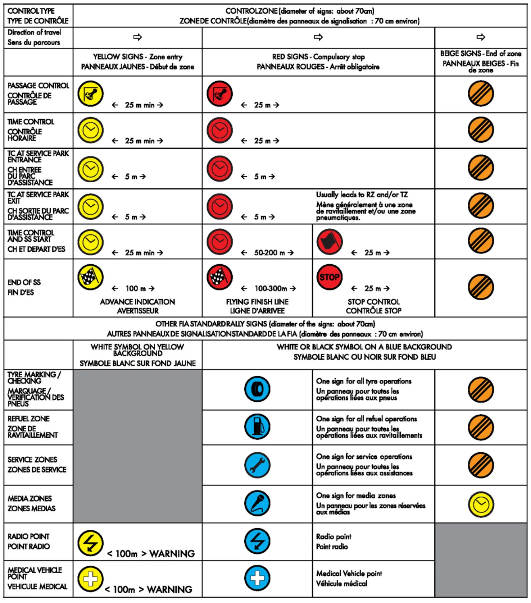
P.742. FIA標準の標識
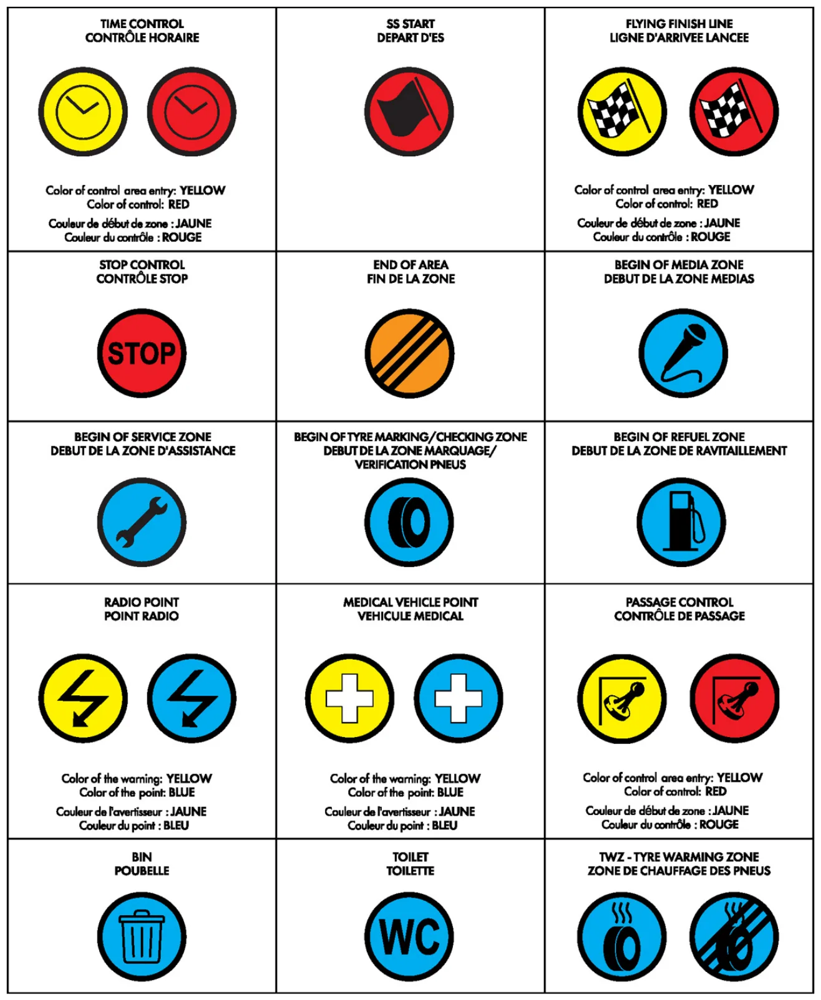
P.75付則(Appendix) II - 標準書類1. 競技特別規則書各ラリー競技会は、競技特別規則書を作成しなければならない（国際競技規則第2.1.3.a条）。競技特別規則書の電子版は、ラリースタートの少なくとも3ヶ月前に、FIAに送達しなければならない。規則草案の受領後3週間以内に、FIAはすべての修正すべき箇所をオーガナイザーに通知し、公開の許可をする査証（ビザ）を発行する。競技特別規則書は、ラリースタートの少なくとも2ヶ月前に、公式のラリーウエブサイトに掲載されなければならない。
競技特別規則書の内容索引1.序文1.1規則序文は以下同様のものとする：「このラリーはFIA国際モータースポーツ競技規則およびその付則、2026年FIA世界ラリー選手権競技規則、FIA規則に合致している国内競技規則および本競技特別規則書に従って実施される。本競技特別規則書の修正、訂正および／あるいは変更は、（オーガナイザーあるいは競技審査委員会により発行される）番号と日付の入ったブルテンによってのみ発表される。追加の情報は、[発表日]に発行されるラリーガイド２に公示され、2026年FIA世界ラリー選手権競技規則は[FIAウェブサイト].....に公開される。」1.2競技走路面1.3 SS総距離およびアイテナリーの総距離2.組織2.1ラリーが対象となっているFIAタイトル2.2査証番号 － FIAおよびASN 2.3オーガナイザーの名称、住所、連絡先詳細（常設事務所）2.4オーガニゼーションコミッティ2.5競技審査委員会2.6 FIAデリゲート2.7上級オフィシャル2.8 HQの場所および連絡詳細（TEL & FAX) 2.9公式通知掲示板の位置（含複数）3.時系列表示（日付および時間）のプログラム、必要に応じて場所を明示－ ロードブック、地図およびラリーガイド2の発行（電子版のみ）－ サービスパークでの追加サービスの発注締切日－ シェイクダウン登録の締切日（要求される場合）
P.76－ ラリーHQ開始／終了－ 公式通知掲示板‐場所－ 器材および書類の引き取り－ 書類検査－ レッキ用のトラッキング装置の引き取り－ レッキのスタート－ メディアセンター開始およびメディア許可－ ラリー安全トラッキング装置－ 車検 - コンポーネントの封印およびマーキング－ チームマネージャーおよび／あるいはドライバーのブリーフィング（該当する場合）－ ヘリコプターパイロットのブリーフィング（該当する場合）－ シェイクダウンおよびタイムスケジュール－ ラリー競技前記者会見－ スタート順およびシェイクダウンのTC到着時間の発行（該当する場合）－ セレモニアルスタート（実施される場合）およびセクション1のスタート順リ
スト発表－ セレモニアルスタート（実施される場合）－ ラリースタートの場所と時間－ 次のセクションのスタート順リスト発表－ 表彰式／賞典授与－ ラリー競技後FIA記者会見－ 最終車検－ 暫定最終順位認定の発表時刻4.エントリー4.1エントリー締切日4.2エントリー手順4.3受け入れられる競技参加者数およびクラス4.4エントリーフィー／プライベート競技参加者のためのエントリー支援パッケージ4.5支払い明細（適用される税金についての一切の明細を含む）4.6返金5.保険6.広告および識別表示7.タイヤ7.1ラリーの間に使用指定されるタイヤタイヤの使用について網羅するために、以下の規則条文が推奨される： 2026年WRC競技規則第13条、14条および15条に合致することに加え、使用が認められるタイヤの数量およびタイプが以下の通り確定される。7.2レッキで使用するタイヤ－（必要な場合）7.3国内法規あるいは特別な要件（ある場合）8.燃料8.1発注手順
P.778.2燃料発注締切日8.3非プライオリティドライバーへの分配9.レッキ9.1登録手順9.2特定のおよび／あるいは国内制約事項‐スペシャルステージの速度制限10.書類検査10.1 提出すべき書類－ 競技参加者ライセンス－ ドライバーおよびコ・ドライバー 競技ライセンス－ ドライバーおよびコ・ドライバー 有効な運転免許証－ ドライバーおよびコ・ドライバー パスポートあるいは身分証明書－ すべての外国の競技参加者および／またはドライバーはASN発行の許可証－ 全詳細を完成させたエントリーフォーム－ 車両保険証－ 車両登録書類－ その他、オーガナイザーから要求されたすべての書類10.2 タイムテーブル11.車検、封印およびマーキング11.1 車検開催場所およびタイムテーブル11.2 マッドフラップ（付則J項第252条7項7）11.3 ウインドウ／ネット（付則J項第253条11項）11.4 ドライバーの安全装備11.5 騒音レベル11.6 特別な国の要件11.7 安全トラッキング装置の搭載12.その他の手順（オーガナイザーの判断により完成となる）12.1 セレモニアルスタート手順と順番12.2 フィニッシュ手順（規則と異なる場合のみ）12.3 認められる早いチェックイン12.4 スーパースペシャルステージ手順および走行順序（適用のある場合）12.5 一切の特別な手順／オーガナイザーのプロモーション活動を含めた活動12.6 ラリー中使用される公式タイム12.7 リタイア後の再スタート13.オフィシャルの識別14.賞典15.最終チェックおよび抗議15.1 最終チェック‐チームから出席が求められる者、および場所15.2 抗議料金15.3 控訴預託料金
P.78付則(Appendix) 1アイテナリー
付則(Appendix) 2レッキスケジュール
付則(Appendix) 3競技参加者リレーションオフィサー（CRO）の氏名および写真とその行動予定表
付則(Appendix) 4デカールおよび、補足広告の位置
付則(Appendix) 5オーバーオール、ヘルメットおよびその他一切の安全要件に関するFIA付則L項抜粋
付則(Appendix) 6 FIA安全トラッキング装置 － 搭載および操作指示
付則(Appendix) 7、8など オーガナイザーの裁量による項目
P.792. ブルテンブルテンについては、本規則第2条2項に定義されている。ブルテンは以下のいずれかによって発行することができる：
－ FIAの承認を得た上で書類検査までに、オーガナイザーにより。例外的に、査証発行の時点で承認される通り、アイテナリーあるいはレッキプログラムの修正については、オーガナイザーによって発行できる。それでもそのような修正はFIAに助言を受けなければならない。あるいは－ 競技中では競技審査委員会により。しかしながら、アイテナリーの修正詳細を掲載するブルテンは、競技長によって発行できる。それでもそのような修正は競技審査委員会に助言を受けなければならない。ブルテンには、番号と日付がなければならない。（日付と掲載した時間）公式通知掲示板に公開されること。可能な場合は、ブルテンの公示を競技参加者に電子的に通知することが推奨される。競技参加者（あるいはクルー）は、ラリー競技中で実質的に不可能でない限り、署名によってブルテンの受領の確認しなければならない。
3. ラリーガイドラリーガイド１
ラリースタートの少なくとも４ヶ月前に各ラリーの公式ウェブサイトに公示される。このガイドの概念は、参加の可能性ある競技参加者が、ラリーに参加するための、または旅行移動予約およびホテル予約をするための十分な情報を提供しようとするものである。RG1の公示通知（Eメールによる）は以下に送付されること：・WRC製造者・前年の競技参加者（任意）・FIA・WRCプロモーター・FIAデリゲート・サポートシリーズ代表者（適用のある場合）・タイヤ製造者・燃料サプライヤー・FIA計時＆追跡装置サプライヤー・その他要望のある者ラリーガイド２このガイドの概念は、メディア、オフィシャルあるいは競技参加者いずれもが、１つの電子あるいは印字書類で書類事務作業を済ませられるようにしようとするものである。ラリーガイド１からの、一切の新しいおよび／あるいは補足の情報は明確に識別できること。電子書類として公表され、エントリー締め切り後直ちに、配布される（ラリースタート
P.80の少なくとも４週間前）。配布先はRG1に加え：・すべての競技参加者・FIA恒久認証のすべてのメディア。RG1 － ラリーの４か月前SR － ラリーの２か月前RG2 － ラリーの１か月前
| 内容 | ||||||||||||||
| 条項 | 見出しと小見出し | RG1 | SR | RG2 | ||||||||||
| 1 | 序文 / 歓迎の挨拶 競技会役員幹部、大会会長などによる挨拶。 「この書類は規定として効力を発するものではなく、情報とし てのみ提供される」 | X X | - - | X X | ||||||||||
| 2 | 連絡先 a) 常設連絡先 郵送・訪問先住所、TEL Eメール、インターネットアドレス, 主要オフィシャル b) ラリー競技会本部の連絡先 住所、TEL ラリー事務局受付時間 c) メディア連絡先 | X X X X - - - X | X X X X X X X - | - - - - - - - - | ||||||||||
| 条項 | 見出しと小見出し | RG1 | SR* | RG2 | ||||||||||
| 3 | プログラムおよび重要な締め切り期限 a) ラリー競技会週前のスケジュール b) ラリー競技会週中のスケジュール | X X | X X | X X | ||||||||||
| 4 | エントリー詳細 ラリー競技会が対象となっているタイトル エントリーフィーのリスト FIA非登録チーム用エントリー支援パッケージ | X X ‐ | X X X | - - X | ||||||||||
| 5 | サービスパークおよびタイヤ取り付けゾーン（設置のある場合 は） サービスパークなどについての情報 サービスパーク内の施設 サービスパークの内容 － 本付則の末尾のリストを参照 環境的要件 | X X | - - - | X X X X | ||||||||||
| 6 | 双方向無線 適用手順 担当者／担当当局の連絡先 | X X | - - | - X | ||||||||||
| 7 | 燃料／タイヤ 要件／入手に関する情報 | - | X | - | ||||||||||
| 8 | 車両およびスペアパーツの輸入 国内法規／通関／代理店 | X | - | - | ||||||||||
| 9 | ヘリコプター 登録手続き／レンタル会社情報 | X | - | X | ||||||||||
| 10 | ホスピタリティ手配 ホスピタリティ手配担当者/会社の連絡先 | X | - | X | ||||||||||
| 11 | ホテル／宿泊先予約 ホテルリスト 予約の連絡先 | X X | - - | X X |
| 12 | レッキ（レコナイザンス：RECONNAISSANCE） GPSトラッキング（配布および収集場所） | - | X | - |
| 13 | 車検、封印およびマーキング 日程、場所および時間枠（ブルテン掲載の個々の時間） 車両を車検に持っていく前に必要な準備 FIA安全トラッキング装置の引き取り/返却 最終車検 | - - - - | X X X X | - - - - | ||||||||||
| 14 | シェイクダウン 一般的情報と時間（RG2の場所、ステージの長さ、サービスパ ークまでの距離など） | - | X | X | ||||||||||
| 15 | スタート手順 プログラムおよび指示事項 | - | X | - | ||||||||||
| 16 | フィニッシュ手順 プログラムおよび指示事項 | - | X | - | ||||||||||
| 17 | PR活動 ラリーショーなど | - | - | X | ||||||||||
| 18 | メディア ラリー競技会前の連絡 登録認証手順/基準および期限 登録認証デスク － 場所および開室時間 メディアルーム － 場所および開室時間 記者会見 － 時刻と場所 チームのメディア連絡 予想されるメディア放映（TVおよびラジオ、時間、チャンネル および周波数） | X X - - - - | - - X X X - - | X X X X X X X | ||||||||||
| 条項 | 見出しと小見出し | RG1 | SR* | RG2 | ||||||||||
| 19 | 医務および安全サービス 緊急電話番号 以下の電話番号： － その地域の病院 － 警察 － 牽引会社 － 薬局 | - - - - - - | - - - - - - | X X X X X X | ||||||||||
| 20 | 有用なサービスリスト 天気 タイムゾーン 警備会社 | - - - | - - - | X X X |
| 付則 | |||||||||||
| 注：付則のフォーマットはオーガナイザーの裁量に任される。 | |||||||||||
| 見出し | RG1 | SR | RG2 | ||||||||
| アイテナリー すべてのセクション 前年のアイテナリーとの比較 レッキスケジュール | X - X | X X X | |||||||||
| 地図（A4版） 全体図 スペシャルステージ地図およびレッキ地図 シェイクダウン地図（実施される場合） | - - - | X 〇 X |
| 関連の市/町（競技会本部、サービスパーク、病院などを示す） | - | X | |
| ロードブック、または地域地図、市街地図、旅程を説明する図解 空港からHQまで 競技会本部とサービスパークの間 サービスパークからシェイクダウンまで シェイクダウンからサービスパークまで HQと車検の間 サービスパークと車検の間 サービスパークとリモート／追加給油ゾーンの間（実施される場合） サービスパークとタイヤフィッティングゾーンの間（実施される場合） 競技会本部とメディアセンターの間（適用のある場合） | - - - - - - - - - | X X X X X X X X X | |
| 図面およびレイアウト 車検および騒音検査エリア 安全ボックス導入 TFZ（適用のある場合） ラリー競技会本部 スタートエリア フィニッシュエリア サービスパーク図面 | - - - - - - | X X X X X X |
*競技特別規則書は付則II-1 にすべての詳細が記載される。オーガナイザーは以下のために書式の利用を考慮する：
－ホテル／宿泊予約－サービスパーク施設－メディア登録認証－レッキ登録－追加の資材発注－双方向無線書式（適用のある場合）－通関書式（適用のある場合）サービスパーク図面のチェックリスト：
－ タイムコントロールIN／タイムコントロールOUT（番号付）－ パルクフェルメ（適用のある場合、第54条の下でのリスタートのPFを含む）－ テクニカルゾーン－ タイヤマーキングゾーン－ 給油エリア（リモートでない場合）－ 環境上の要件－ サービス車両のサービスパークIN／OUT（サービスおよび競技参加者）－ 緊急医療役務、消防医療センターなどの位置－ 関係者駐車場－ プレスおよびVIP駐車場－ 観客用駐車場 － ラリーオフィス／インフォメーションセンター
－ 公衆トイレ－ 給水－ ゴミ捨て場
－ ヘリコプターパッド
P.834. アイテナリー4.1 アイテナリーのレイアウト例
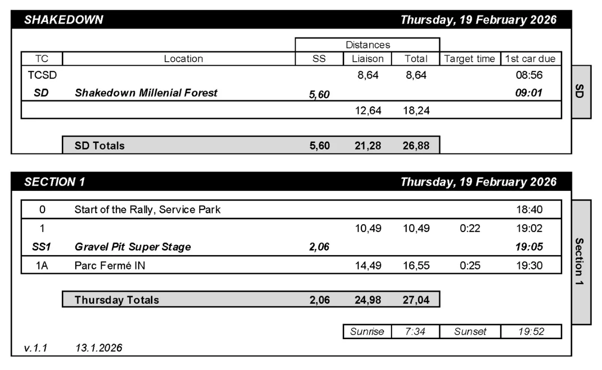
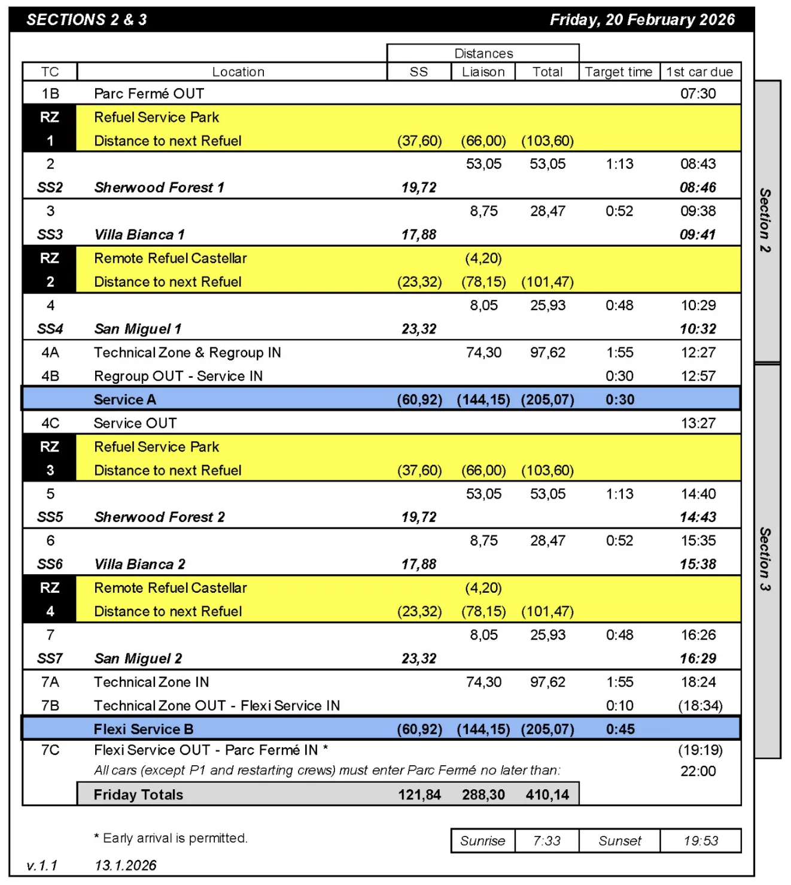
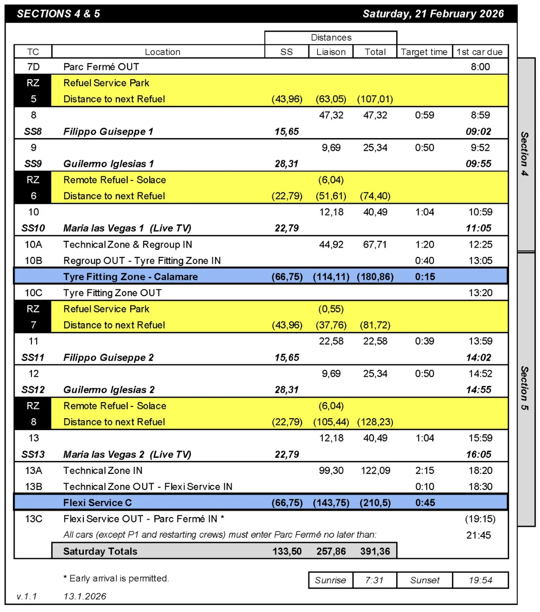
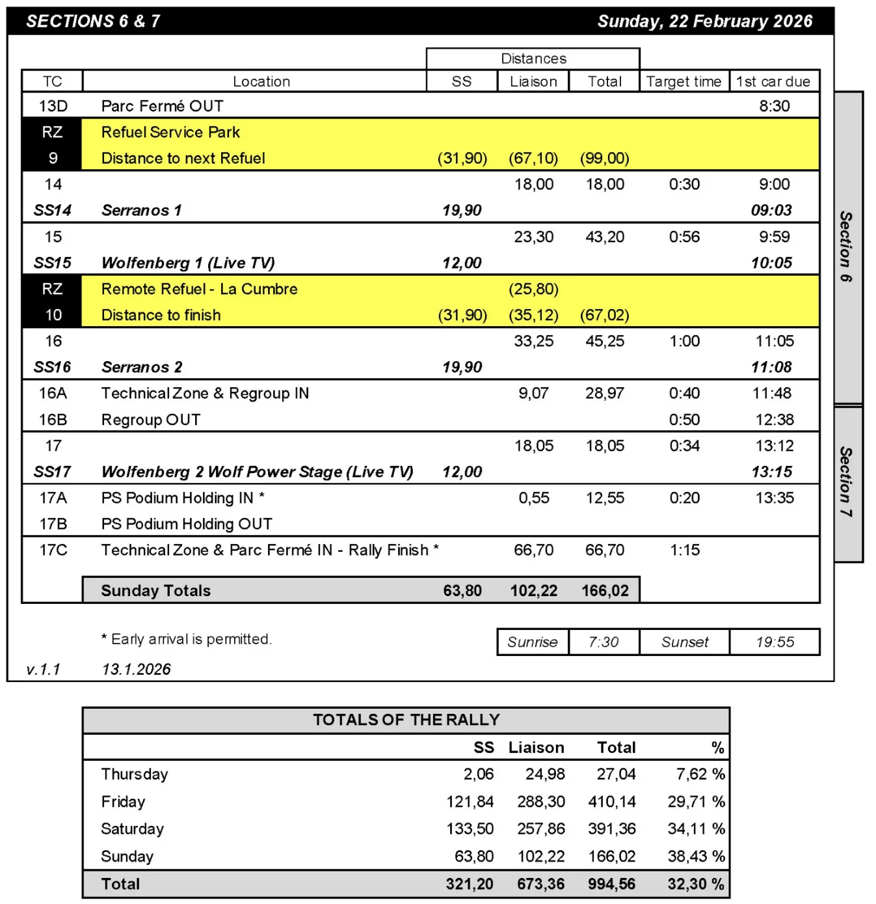
P.874.2 レイアウトに関する注意事項－ TC0は、常にラリーの競技要素のスタートを示す。独立したセレモニアルスタートは、TC0とはみなされない。－ サービスパーク、タイヤフィッティングゾーン、およびリモートサービスゾーン到着を示すボックスは、濃い黒枠とし、色つき印刷される場合は、明るい青で中を網掛けする。－ サービスパーク到着はすべて、A、B、C、などの文字を掲載する。－ リグループあるいはその他のTC活動を示すボックスは、薄黒い枠とし、中は網掛けしない。－ 給油地点を示すボックスは、薄黒い枠とし、黄色で中を網掛けする。－ オーバーナイトリグループ前のセクション距離およびラリー終了の総距離数を示すボックスは薄黒い枠とし、明るいグレーで中を網掛けする。－ 右側の余白にセクション番号を書き留める。4.3 時間に関する注意事項－ ロードセクションのターゲットタイムは平日のラリーの時間で、実際の運転時間を測定し、制限速度に従った上、あれば給油時間（5分）、タイヤマーキング（3分）、ステージ前のドライバーの準備時間（5分）を加えて計算すること。－ ステージ間のターゲットタイムは第10条1項4に従わなくてはならない。－ TCとスペシャルステージスタート間の‘デッドタイム’は通常3分、LIVE TVステージについては、パワーステージを除き、6分とすることが推奨される。なお、パワーステージについては3分とする。－ リグループの推奨最小時間は20分間とする。－ スペシャルステージからメディアゾーンへのターゲットタイムを計算する際は、第42条7項の要件に注意すること。－ LIVE TVステージは、hh時05分に開始、あるいはWRCプロモーターとの合意があればhh時35分に開始される。－ パワーステージは、hh時15分に開始される。－ 「すべての車両（P1とリスタートのクルーを除く）がパルクフェルメに入場する最遅時間」を算出する方法は、最終競技車両のサービスイン予定到着時刻＋最大遅延30分＋サービス時間45分＋安全策15分とする。4.4 給油に関する注意事項－ 1 日あたりの給油ゾーンの数については、第61 条1 項2 を参照。－ 一時的なリタイア後、ラリーに「再スタート」する競技参加者について、オーバーナイトリグループの後にFIA 燃料を入手可能にするため考慮すること。4.5 必須の休息時間
当該日の最初のタイムコントロールから、同日の終了時におけるテクニカルゾーンINのタイムコントロール（フレキシサービスが存在しない場合は、TCパルクフェルメIN）までの時間は、ラリー競技時間とみなされる。
当該日の終了時におけるテクニカルゾーンINのタイムコントロール（フレキシサービスが存在しない場合は、TCパルクフェルメIN）から、翌日の最初のタイムコントロールまでの時間は、休息時間とみなされる。
総休息時間は、初日の競技時間を除いたラリー競技時間の合計以上でなければならない。
P.88各競技日の終了後の休息時間は、いかなる場合も10時間以上でなければならず、かつ、少なくとも1日は、上記の定義に従い、最低12時間の休息時間が連続して設けられなければならない。5. ロードブック内容とデザイン－ ロードブックは、ラリーのスタートの少なくとも４週間前に電子的に入手できるようにされなければならない。－ ロードブックのバージョン番号および日付は、各ページのフッターに表示されなければならない。バージョン履歴は、各ロードブックの冒頭に記載されなければならない。印刷前に公開済みPDF版を更新する必要がある場合には、バージョン番号および日付を変更し、バージョン履歴には実施されたすべての変更内容を記載しなければならない。競技参加者には、ロードブックの新しいバージョンについて通知されなければならない。ロードブックが印刷された後は、変更はブルテンによってのみ行うことができる。－ 見出しは英語および／あるいはその国の言語（任意）とする。－ 全体のラリーについて１冊あるいは各セクションに異なるロードブックでも構わず、これが推奨される。異なるロードブックが使用される場合は、識別が明瞭な方法でできるようであること。－ ラリー全体のアイテナリーが各ロードブックに示されていなければならない。－ すべての使用されるシンボルマークを解説するページが、ロードブックの最初に掲載されなければならない。－ 同じラリールートが使用される場合（すなわち、２回の同一のループ）、オーガナイザーはルート指示解説１セットを印刷することで経済的に共通利用させるよう奨励される。この場合、各ページの見出しは、異なるTC、ステージおよびセクション番号を含むものでなければならない。第２ページには「Xページに戻る」と明確な参照が掲載されなければならい。－ 各到着についてサービスパークレイアウト図面を繰り返し掲載する必要はない。しかしながら、平面図はTC位置の変更があるところでは重要になる。各ロードブックには少なくとも１つのSP図面が含まれること。－ タイヤ取り付けゾーン、およびリモート給油ポイントのレイアウト図面が含まれること（実施のある場合）－ シェイクダウン、「スタートへ戻る」ループ（ある場合）、およびサービスパークからの／への公道セクションのルート指示を含める。－ 該当する各日のロードブックの最後に、各日の代替ルートを１つのセクションとして含めなければならない。－ トリップメーターとGPS距離との相互参照に関する指示が含まれなければならない。－ 各セクションで認められるタイムは、時間と分で表される。－ ロードブックに関するその他の要件：
・ リタイア書式・ 問い合わせ書式・ 事故時の手順（WRC第53条3項および53条4項参照）－ ロードブックはA5版とし、左側を金属あるいはその他の適切な強度のあるもので綴じ、360°の見開きができること。
P.89－ 印刷は両面で、紙の厚さは90gsm以上とする。－ 印刷は白紙になされること。スペシャルステージおよび公道セクションの区別をするための色についての要件はなく、”Direction"（方向）の欄の網掛けによって識別できるようになっている。代替ルートは異なる色の紙を使用できる。－ 個々のステージ地図は以下を含むこと：
・ 縮尺・ 地図の上の方角が北・ レッキのルート・ 代替ルート・ スタート／フィニッシュ、およびすべての緊急出動車両ポイントの位置－ 各公道セクションあるいはスペシャルステージのスタートに、ページを改めることが求められる。スペシャルステージの後のストップポイントから新しいページとする必要はなく、これは同じ公道セクションの続きとされる。－ スペシャルステージの前に公道セクションがあるところでは、スペシャルステージのスタートを示す図解で、ボックス１として公道セクションの終了が示されなければならない。－ ２つのジャンクションの間の部分的距離が200メートル未満である場合、ボックスの間の水平線は必要ない。ただし、TCとSSスタートの間は除く。－ 「Direction（方向）」および「Information（情報）」の欄の間の太い垂直線は、路面がグラベルである場合は黒で塗られ、ターマックあるいは密閉された路面では、空欄（白）のままとする。－ スペシャルステージの場所を容易にするため、ステージの番号が、ページの横に付けられる。ページ印刷が両面ある場合、ロードブックを横から見て見えるように、この番号は外側の端に付けられる、すなわちページの反対側の綴じられた端。この番号はスペシャルステージに関するページにのみ付けられること。－ すべての緊急車両および救急車配備ポイントは、適切なシンボルマークで表示されていなければならない。－ 各スペシャルステージおよび、リグループのスタートとフィニッシュおよびサービスパークのGPS位置が示されなければならない。これは、度、分および小数にて表記される。すなわち：139°36.379’。－ １ページの指示事項は６つ以下であること。－ コントロール位置の写真あるいは図解を含めることができる。－ 関連性のある場合には、道路の番号が含まれること。－ 方向合図の線の太さを異ならせ、進行方向ではなく、小さな（細い）／広い道を示すのに利用する。
その他の有用な情報・ ランナバウトのような、長いジャンクション図面にトリップメーターポイントが義務付けられる。・ 公道セクション上に、もうひとつのSSからあるいはSSへのジャンクションが明らかにされること。・ 病院のリスト／メディカルセンター・ ラリー競技会本部および緊急出動サービスの電話番号・ ルート上のロードブックSSボックス番号・ オーガナイザーのトイレおよびゴミ箱のラリールート上の位置（ロードブックボック
P.90ス）・ 競技参加者のタイム記録ページ・ 各ページの下部に次のジャンクションへの部分距離の忠告を入れる（ジャンクションが間断なく続く場合）。
6.標準のFIAタイムカード6.1 一般－ 少なくとも各セクションに別のタイムカードが発行されなければならない。－ 一つのロードセクションの距離を走破する目標時間がタイムカードに記載されなければならない。－ 時間と分は常に00.00－23.59のように示され、経過した分のみが計算される。－ ラリーすべてのタイムカードは、参加確認で発行され、各セクションの終了時に収集されること。使用されたタイムカードは次に、チームが競技結果をチェックする際に利用可能となる。理想としては、45分サービスの終了時に別の新しいカードを使用する必要がある。（「Flexi-Service B」の場合など）－ オーガナイザーはFIAに対し、書面によるシステムの変わりに電子タイムカードの使用を提案することができる。そのようなシステムの使用は、使用される前にFIAの承認を受けなければならない。6.2 紙面構成－ 次の例を参照－ 中央の欄は、オフィシャルが記入するところで、右側の欄は、競技参加者が記入する。－ 以前の車両番号は任意である。それは安全検査のために複数のラリー競技会で使用される。このボックスが使用される場合は、「暫定スタートタイム」のボックスの下に置かれる。－ サイズは9.9cm×21cm（A4 版のシートにタイムカードが３枚印刷できるように）あるいは11cm×18.5cm － ボックスのサイズは1cm － カードは少なくとも300gsmカードであるが270μmのポリスターペーパーであること（悪天候に備え）。ポリスターペーパーは防水であるが、簡単に折りたたむことができないことに注意。代替としては、カバー付きタイムカードを作成することである。すなわち、22cm×18.5cmの折りたたみ式カードで、記入部分を保護するカバーが付いているもの。－ TCが多い場合、裏面の印刷をするか、並べたデザイン（内側に折りたたむ）ものを使用できる。－ 印刷の使用色は自由。たとえば、オーガナイザーはスポンサーの色を使用したり、あるいは各セクションで色を変えたり、単純にグレーと黒でもよい。
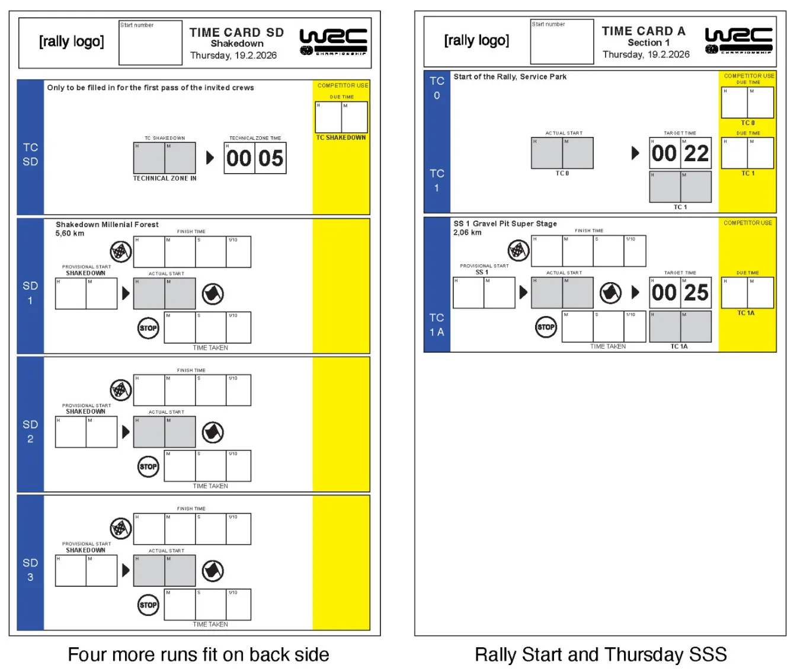
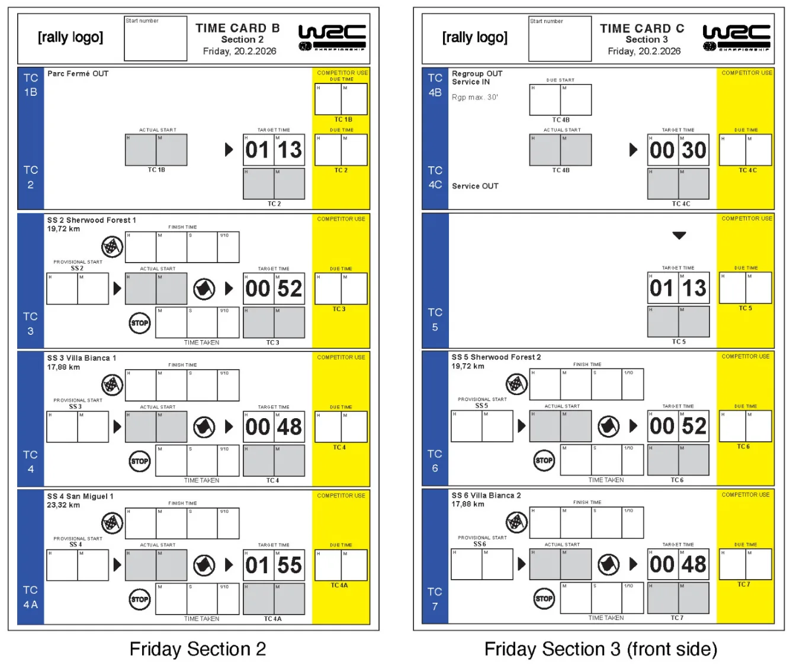
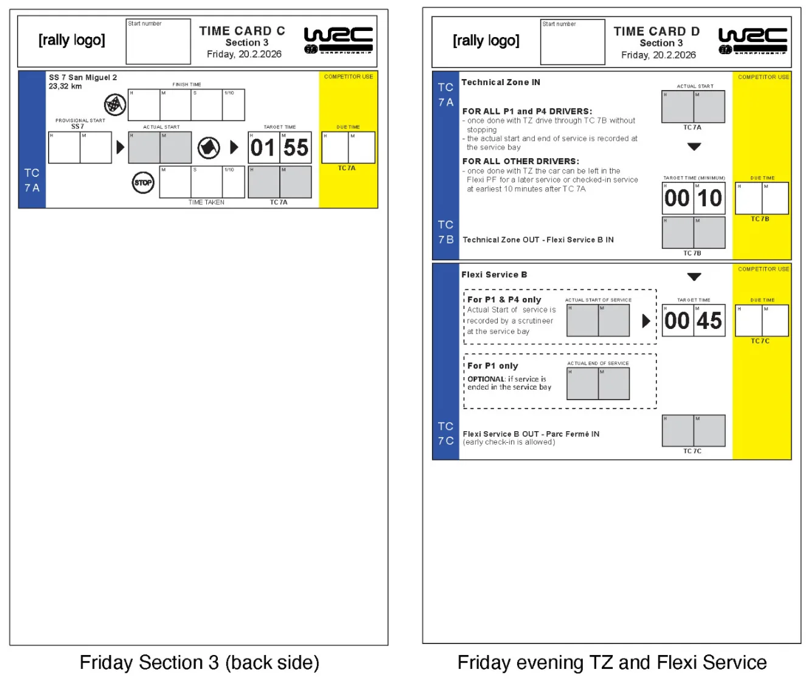
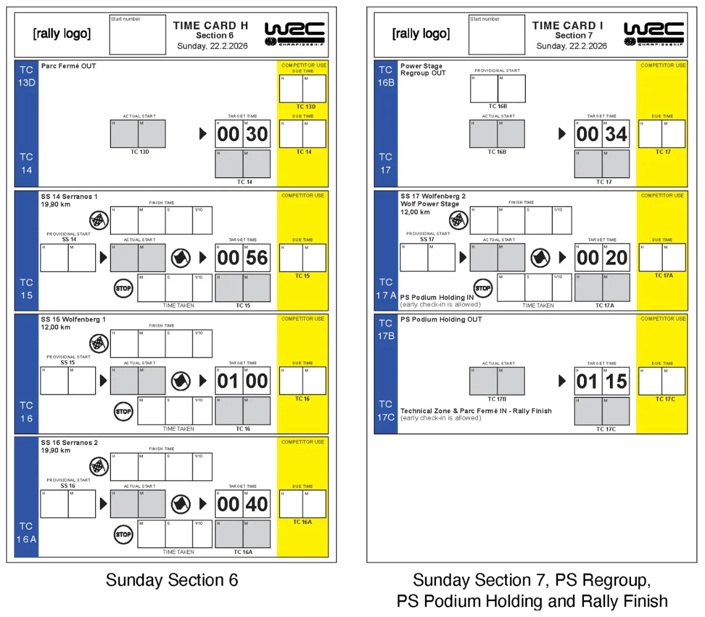
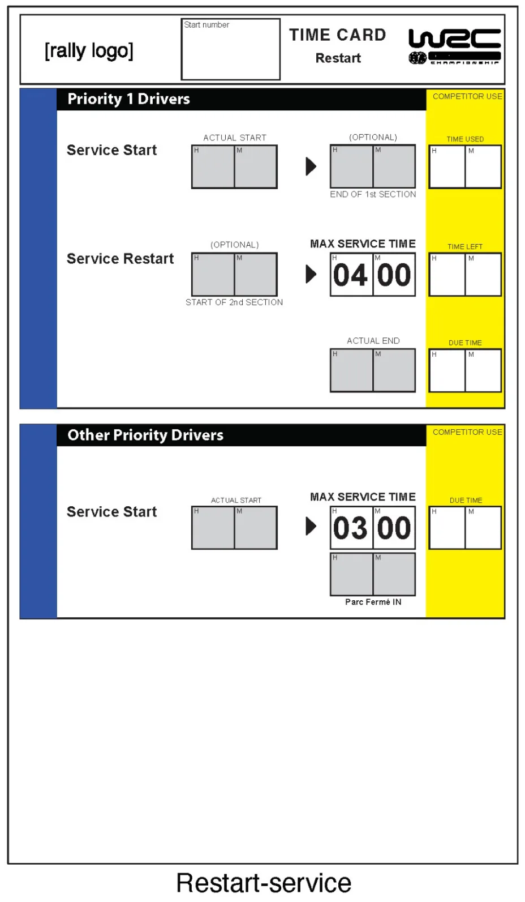
P.967. 標準エントリーフォーム１．WRC、WRC2およびWRC3選手権に登録した競技参加者
得点の獲得を希望する製造者、WRC2、WRC2チーム、WRC3およびWRCマスターズカップの競技参加者は、選手権のFIA電子標準ラリーエントリーフォームを使用してエントリーを行わなければならない。フォームは以下のURLにて彼らのFIAアカウントで入手可能：
https://registration.fia.com/rally ２．WRC、WRC2およびWRC3選手権に登録していない競技参加者
WRCラリーに参加を希望する未登録競技参加者は、次のURLにて入手できるFIA電子エントリーフォームに記入して登録を行わなければならない：
| ラリー名称 | 日程 | URL |
|---|---|---|
| ラリー・モンテカルロ | 1月22日-25日 | https://registrations.fia.com/wrcmon |
| スウェーデン・ラリー | 2月12日-15日 | https://registrations.fia.com/wrcswe |
| ラリー・ケニア | 3月12日-15日 | https://registrations.fia.com/wrcsken |
| ラリー・クロアチア | 4月9日-12日 | https://registrations.fia.com/wrcro |
| ラリー・スペイン | 4月23日-26日 | https://registrations.fia.com/wrcsp |
| ラリー・ポルトガル | 5月7日-10日 | https://registrations.fia.com/wrcpor |
| ラリー・ジャパン | 5月28日-31日 | https://registrations.fia.com/wrcjpn |
| ラリー・ギリシャ | 6月25日-28日 | https://registrations.fia.com/wrcgre |
| ラリー・エストニア | 7月16日-19日 | https://registrations.fia.com/wrcest |
| ラリー・フィンランド | 7月30日-8月2日 | https://registrations.fia.com/wrcfin |
| ラリー・パラグアイ | 8月27日-30日 | https://registrations.fia.com/wrcpar |
| ラリー・チリ | 9月10日-13日 | https://registrations.fia.com/wrcchi |
| ラリー・イタリア | 10月1日-4日 | https://registrations.fia.com/wrcita |
| ラリー・サウジアラビア | 11月12日-15日 | https://registrations.fia.com/wrcksa |
ラリー・サウジアラビア11月12日-15日https://registrations.fia.com/wrcksa
エントリー締め切り日およびエントリー条件については、当該ラリー競技特別規則書を参照のこと。
P.978.エントリーリスト8.1.暫定エントリーリストWRC第23条2項に規定されるエントリーの締め切り次第、オーガナイザーは、オーガナイザーのウェブサイトに公表する前に、プライオリティグループによる数字順の暫定エントリーリストをFIAへ検証のため送付する。FIAはそれについて意見があればそれを付けて返信する。FIAによる承認が得られた後、エントリーリストが公表できる。暫定エントリーリストには以下が含まれる：・ 割り当てられる競技番号・ 競技参加者のフルネーム（国籍は入らない）・ ドライバー／コ・ドライバーの氏名とそれらの国籍・ エントリーする車両の銘柄とモデル・ エントリーする車両のクラスとグループ・ ドライバーのFIAプライオリティ状況と必要に応じ、適格性。非プライオリティドライバーの順番は、オーガナイザーに任される。8.2.スタートリストWRC第41条2項、第41条3項およびジュニアWRC付則(Appendix) VIII（適用のある場合）に規定される通り。
9. スタートリストおよびラリーの競技結果
スタートリストおよび競技結果は、競技特別規則書あるいはブルテンに記載されている時刻よりも早く掲載できるが、リストに記載されている時刻は、常に競技特別規則書あるいはブルテンに記載されている時刻でなければならない。「時刻の設定された」リストの発表が遅れた場合、競技長は新しい掲載予定時刻を示す連絡を公示する（WRC第64条2項も参照）。
9.1 セレモニースタート＆セクション１ セレモニースタートのスタートリスト 書類検査と車検の後で作成される。 競技審査委員会による承認の後で競技長が署名し、競技特別規則書に決められている時刻に発表される。 すべての競技参加者に、スタート時刻（あるいは少なくとも車両と車両の間隔）を与える。あるいはセクション１（SSS）のスタートリストあるいはセクション２（SSSなし）のスタートリスト 書類検査と車検の後で作成される、あるいはスタート位置を決める予選後（該当する場合） 競技審査委員会の会議に承認の後で競技長が署名し、競技特別規則書中の時刻に発表される。 すべての競技参加者に、スタート時刻を与える。ペアの時間ができる。 「WRC第31条1項8の下で車両No.---は再車検を通過することが必要」という注釈。
P.989.2 オーバーナイトリグループ前のラリーのセクションオーバーナイトリグループ後のセクションのスタートリスト 競技長が提案し、WRC第41条1項に従い、ある場合は再配置を実施。 競技長が署名し、競技特別規則書に決められている時刻に発表される。 再出走の可能性がラリーの特別規則書によって許可されている場合、ラリーから撤退したことが宣言されていないリタイアしたクルーが含まれる（WRC第54条1項1）。 「WRC第55条2項の下ですべてのリタイアした車両の再出走は再車検を通過することが必要」という注釈。9.3 ラリーの最終セクション9.3.1 暫定順位認定（Provisional Classifications）a）暫定順位認定（Provisional Classifications） 最終のオーバーナイトリグループ後のセクションを完走したすべての競技参加者が含まれる（WRC第51条1項4） 競技審査委員会に承認の後で競技長が署名し、競技特別規則書に決められている時刻に発表される（WRC第33条1項2）。 「ただし、最終車検の結果に従う」（完全な順位認定のため） 「ただし、次の車両については、慣例の燃料分析の結果に従う：No.---」（ラリー競技会で燃料の分析結果が入手できない場合） 「ただし、車両No---については、競技審査委員会の決定に従う」 「ただし、車両No---については、完全なエンジン査察の結果に従う」b）パワーステージの暫定順位認定（トップ5台のみ）c）日曜日終了時の暫定総合順位認定（WRC第3条3項2 トップ5台のみ）9.3.2 最終順位認定（Final Classifications）a) 最終順位認定（Final Classifications）－ 競技審査委員会によって承認され署名され、抗議受付時刻終了後、最終車検が完了してから、暫定最終順位認定の公示に続く競技審査委員会の決定があればそれを添えて発表される－ 「ただし、次の車両については、慣例の燃料分析の結果に従う：No.---」（ラリー競技会で燃料の分析結果が入手できない場合）－ 「ただし、次の車両についてはFIAの実施する追加検査を受けることが必要：No.---」－ 「ただし、次の車両については競技参加者により提出された控訴結果に従う：No.---」－ 「ただし、次の車両については、完全なエンジン査察の結果に従う：No.---」b）パワーステージの最終順位認定（トップ5台のみ）c）日曜日終了時の最終総合順位認定（WRC第3条3項2 トップ5台のみ）10. メディアセーフティブックラリーガイド２にはメディアセクションが大きく取り上げられ、従来の「メディアガイド」の置き換わるものとなっている。特に映像メディアに向けてセーフティガイドを作成する必要がある。このセーフティブックの最小推奨内容は、以下に一覧される。メディアセーフティブックは、ラリーのスタート２週間前にFIAの認証を受けたメディアに配布されること。
P.99このセーフティブックを最も準備を整えて作成するために、オーガナイザーは： 1) ラリーの競技ルートが決まり次第、プレスオフィサーとセーフティオフィサーを伴って、スペシャルステージを査察するために、経験豊かなプロのモータースポーツフォトグラファーおよび／あるいはカメラマンを招聘する。2)フォトグラファーおよびTVクルーが使用するための、各ステージにいくつか設置されるセーフティエリア（「フォトエリア」）を確認する。可能であれば、ステージ終了地点に加えて、これらのエリアにできるだけ近く専用のタバードメディア駐車場がなければならない。スペースの制約および／あるいは安全上の問題で、アクセスができない場合、メディアセーフティブックで明確に連絡されなければならない。3)これらの「フォトエリア」は、出来上がりを描写する写真を添えて書面に記載されること。また、各位置を示す図解で以下を詳述すること： SS番号および距離 タバードメディア用SS道路閉鎖時間 最初の車両のSSスタート時刻 ロードブック参照およびGPS参照 フォトエリアの特別ゾーン 観客エリア タバードメディア駐車場 アクセスロード SSスタート／フィニッシュからフォトエリアのSS道路上の距離 安全テーピング4)すべての提案された図解は、セーフティデリゲートによって承認されること。5)承認された図解は、メディアセーフティブックの1つのセクションを構成する。6)このセーフティブックは以下も含む： タバード所持者がどこのエリアへアクセスできるのか、またどのような行動を実行できるのかについての記載。最低でも、このセクションは英語と、開催地の言語で作成されること。 例：
－ タバード所持者は、観客テープ／マーカー境界線の直前を歩くこと、ステージの１地点から他地点へおよび／あるいはラリー車両の通過間隔の間にステージを横切ることが、常にマーシャルの安全指示に従って、認められること。さらに、タバードメディアは、同じステージの走行と走行の間に、ラリールートの方向へ、スペシャルステージを出ることが認められる。これは、そのことがメディアセーフティブックに確認できる場合にのみ認められ、またラリー車両の初回通過後に道路開放がステージコマンダーにより告知された後でのみ実行できる。－ タバード所持者のみが利用できる特定のフォトエリアは、相応にテープが張られ、アクセス制限標識で示される。メディアマーシャルは、メディアの必要、義務および権利について特にブリーフィングを受け、フォトエリアにおいて識別される。－ マーシャルと警官が立っている場所は安全な場所とみなされる：タバードメ
ディアはこれらのセーフティオフィシャルと一緒に立つことが許される。 予備道路、交差道路、閉鎖地点、撮影エリア、タバードメディア駐車場を示す、すべてのステージの全体地図。
P.100 1：50000縮尺で示されたラリー開催地の全体地図。 すべての許可されているパス、タバード（恒久的なもの、およびラリーごとに指定のもの）およびメディアとタバードメディアカーパスの完全な見本。 メディア設備の付表に記載されている、メディア（メディアセーフティおよび識別）の識別および取り扱い。 競技会の間で開催されるその他すべての活動の詳細（つまり、ナショナルおよび／
あるいはヒストリックラリーなど）。 すべてのセーフティカーおよびロードクロージングカーについての全体計画。オーガナイザーは、地域的状況およびタバードメディアの参加予想人数により、各フォトエリアに求められる準備レベルが異なることを配慮すること。
FIAメディアデリゲートはメディア安全ブックの制作を支援するために主催者が自由に使用することができ、すべてのタバード所持者、ステージコマンダー、セーフティおよび保安要員にメディアセーフティブックは配布されること。
P.101付則(Appendix) III – セーフティ国際モータースポーツ競技規則付則H項の第5条には、道路および救急サービスの監督に関する推奨事項が定められている。これらの推奨事項はラリー主催者の指針となり、尊重されるべきである。
さらに、すべてのイベント主催者は、FIAラリーセーフティガイドラインの最新版に従うことが強く推奨される。各主催者は、一般市民とクルーの安全性を向上させるために、追加的な要素を導入することが認められている。
プライベートテストの開催やASNセーフティデリゲートの役割に関するガイドラインも用意されている。
これらの文書の最新版は、https://www.fia.com/rally-safety で入手できる。
P.102付則(Appendix) IV – 表彰式１． 要件1.1フィニッシュランプおよび表彰式は、FIAメディアデリゲートおよびWRCプロモーターの承認を得てオーガナイザーが決定した時刻に開催される。1.2オーガナイザーは、クルーが正確な順序でランプを通過することを確実にするよう、フィニッシュ地点の留め置き場所を設営すること。適切なパスを所持するメディアおよび要員は、このエリアに立ち入りを許可されなければならない。1.3オーガナイザーはセレモニーの手順に責任を負うオフィシャル（式典長）の指名をしなければならず、事前にリハーサルを行わなければならない。当該オフィシャルの氏名と予定されるリハーサルの時刻が、ラリーの2週間前にFIAメディアデリゲートおよびWRCプロモーターに通知されなければならない。1.4フィニッシュ地点のランプには、下を通るアーチ道があり、WRCプロモーターのイベントオペレーションマニュアルに従い、ラリー競技の名称およびロゴそして商標がはっきりと提示されていなければならない。ランプの前には、「FIAメディア設備およびオペレーションガイド」に決められる通りの配置および設営の撮影者用タワーを設置すること。アーチ道へと導く通路またそこからの出口通路には、公衆の接近を防ぐための金属製柵で仕切られなければならない。1.5ランプアーチは、車両のノーズ部が退路側へ下るように正しい位置に置かれたとき、車両のドア開閉やクルーが出る妨げとならないこと。1.6ポディウムの後方あるいは側方は、旗竿が配され、撮影者用台側から見て左から右へとはためくように、ＡＳＮ旗（任意）、主催国の国旗、ＦＩＡ旗（これらの旗は連続的に掲揚する）、優勝製造者、および総合順位の上位３位のドライバーの国旗が掲揚されること。その他の競技参加者の追加国旗も、オーガナイザーの裁量にて掲揚できる（連続的に掲揚する）。1.7オーガナイザーは、総合順位３位、２位、１位のクルーのみが使用するために、「オリンピック形式」の台座を提供し、撮影者用タワーから撮影者／ＴＶクルーが写真を撮ることができるように配置させなければならない。表彰式中に台座を移動させることが必要な場合は、配置位置を事前に床に印付けしなければならない。ポディウムの広告あるいは装飾はWRCプロモーターの承認が必要となる。1.8 １名につき１賞典（カップあるいはトロフィー）のみを、各クルーに１つまた優勝製造者の代表者に１つを授与できる。すべてのカップとトロフィーのデザインは、FIAメディアデリゲートとWRCプロモーターの承認を受ける必要がある。オーガナイザーは、賞を渡す者が表彰台側面から近づいて、その後速やかに立ち去ることを確実にする責務がある。1.9賞典授与者は最大で６名が認められる。それ以外は式典手順に責任を負うオフィシャルのみが、ランプとポディウムエリアに立ち入りが認められる。賞典を授与する者には、ドレスコードについてのガイドラインを含め、それぞれに明確な手順書が発行されなければならない。1.10 総合順位で３台の優勝車両、および優勝のWRC2、WRC2チャレンジャー、WRCマスターズカップ、WRC3およびジュニアWRC車両のために隣接した駐車場（あるいは最終パルクフェルメ）があり、悪天候の場合にクルーが待機する屋根のある場所があること。1.11 オーガナイザーは、最低１１名のドライバー／コ・ドライバー（上位３位のWRCドライバーと彼らの広報、優勝したWRC2、WRC2チャレンジャー、WRCマスターズ
P.103カップ、WRC3およびジュニアWRC車両）および製造者代表者１名、およびFIAメディアデリゲートが、フィニッシュエリアからイベント終了後のFIA記者会見のためのプレスルームに移動する輸送手段を提供しなければならない。1.12 表彰式典に関連するチームおよび最終車検に車両を提出するよう求められたチームは、車両をパルクフェルメ、あるいは最終車検場へ移動させるために、１名の代表者を出さなければならない。1.13 競技参加者にフィニッシュ手順を周知することはオーガナイザーの責務である。1.14 ランプ片側で、ランプとポディウムエリアの領域外に、勝利チーム（含複数）がフィニッシュに立ち会うことができるように、チーム専用エリアがなければならない。1.15 表彰式次第の影響を受けるすべてのドライバーは、パワー・ステージ・ホールディング・エリアで車両から降りるときから、授賞式の全期間（国歌が演奏されている間を除く）、および記者会見の間は、WRCプロモーターより提供されたキャップを着用しなければならず、オーバーオールを閉じたままでいなければならない。この規則に従わない場合は、審査委員会に報告される。2. 手順 –(式典に責任を負う役員の管理下におかれること) 概要－手順表彰式手順の進行は、公式責任者によって管理される。（詳細は附則IV第1.3条を参照）理想的な順序は以下に示す通りであるが、パワーステージおよび最終サービスの後、式典をできるかぎり早く実施するために、この手順に修正を行うことができる。修正についてはFIAメディアデリゲートとWRCプロモーターの承認を得なくてはならない。－ WRC2の優勝クルー－ 最終順位の逆順でP1クルー－ 総合優勝表彰－ その他のプライオリティカテゴリー（WRC2チャレンジャー、WRCマスターズカップ、WRC3、およびジュニアWRC車両）－ 国内の最高位クルー2.1オーガナイザーには、フィニッシュ前セレモニーエンタテインメントを手配し、公衆への実況解説システム準備およびラリーを撮影した映像のＴＶ用大型スクリーンを用意することが推奨される。2.2一度にランプ上に居ることができるVIPは最大２名まででなければならない。2.3フィニッシュ地点の留め置き場所（柵がはられ、管理される。適切なパスを所持したメディアおよび要員のみが認められる）より、スケジュールは次の通り： 2.4 WRC2勝者が運転してランプ上に上がる。車両のノーズ部がランプ出口に下る状態で停止する。クルーは車両から降り、ドライバーがインタビューを受ける。賞、および開栓準備された２本のシャンパンのボトルを受け取り、撮影者およびTVクルー向けにシャンパンファイトを行う。その後クルーは、事前にＦＩＡメディアデリゲートの合意があれば、追加の写真撮影のためチーム員もそれに合流する。その後、勝利したクルーはメディアセンターへ行くことができるようにしなければならず、チーム員が車両をパルクフェルメ、もしくは最終車検場の保管エリアへ運転する。2.5 ４位までのすべてのP1クルーは、順位と逆順でランプ上に上がり、ドアを開け登壇し、すべての賞を受け取った後に、パルクフェルメもしくは最終車検場にそのまま運転する。2.6総合3位となったクルーが運転してランプ上に上がる。車両のノーズ部がランプ出口
P.104に下る状態で停止する。クルーは車両のいずれかの側から降り立ち、ドアを開けたままにし、ドライバーがインタビューを受ける。次に、ランプから降りてチーム員に交代しパルクフェルメへ運転してもらう。クルーはメディアセンターへ行くことができるようにしなければならない。2.7総合順位２位は、上述３位と同様の手順を行う。2.8優勝クルーは車両ランプ上まで運転していき、車両のノーズ部がランプ出口に下る状態で停止する。クルーは車両を降りドアを閉め、オフィシャルによりインタビューを受ける。クルーは次にボンネットに登る。開栓の準備がされたシャンパンのボトルを２本受け取り、撮影者およびTVクルー向けにシャンパンファイトを行う。事前にFIAメディアデリゲートの合意があれば、追加の写真撮影のためチーム員もそれに合流する。チーム員はランプを退場。車両は式典終了までランプに留まる。2.9すでに位置に移動されていなければ、ポディウムは地上のランプ／優勝車両前の位置に移動される。2.10 優勝クルーは次に待機所より呼ばれ、適切な台座位置の後方に立つ。その後、司会はそれぞれをポディウムの階段を上るように招く必要がある。2.11優勝製造者の代表者はセレモニーへ参加し、ポディウム階段の競技者の右側に立つよう招かれる。2.12 優勝ドライバー（パスポート国籍）および優勝製造者（車両公認国）の国歌が奏される。優勝ドライバーの国歌が奏されている間に、上位３位のドライバーの国旗が標準のオリンピック式典どおりに掲揚される。国歌が奏されている間、クルーは帽子をかぶっていてはならない。またはサングラスは外さなければならない。その直後に、優勝製造者の国籍とドライバーの国籍が異なる場合は、その製造者の国歌が奏され、その際にその国の旗が掲揚される。ドライバーと製造者が同じ国籍の場合、国歌は１度のみ奏され、すべての国旗が同時に掲揚されること。2.13 政治高官および／あるいはスポンサー（最大６名）が３位、２位、優勝および優勝製造者のクルーごとの賞典授与を促される。2.14 ３組のクルーはシャンパンファイトのため開栓の準備がされた６本のシャンパンのボトルを贈られる。2.15 優勝車両はチーム員が運転し、パルクフェルメに移動する。残りのプライオリティの勝者クルーは次の手順で表彰される。2.16 WRC2チャレンジャー、WRCマスターズカップ、WRC3、およびジュニアWRC優勝車両は車両ランプ上まで運転していき、車両のノーズ部がランプ出口に下る状態で停止する。クルーは車両を降り、ボンネットに登り、ドライバーはインタビューを受ける。賞と開栓の準備がされたシャンパンのボトルを２本受け取り、撮影者およびTVクルー向けにシャンパンファイトを行う。事前にFIAメディアデリゲートとWRCプロモーターの合意があれば、チーム員もそれに合流する。その後クルーは出発し、パルクフェルメもしくは最終車検場まで運転する。ドライバーはメディアセンターへ行けるようにしておかなければならない。2.17 総合３位までと、WRC2、WRC2チャレンジャー、WRCマスターズカップ、WRC3、およびジュニアWRCの優勝車両と優勝製造者代表者およびFIAメディアデリゲートは、イベント後の記者会見のためにプレスルームへ移動される。この移動は、観客が接近できないようにすること。2.18 その他の優勝車両は、オーガナイザーの護衛のもと、技術員によって最終車検場またはパークフェルメへ移動される。
P.105付則(Appendix) V - タイヤの公認以下は次のラリーに適用される： － ＦＩＡ世界ラリー選手権－ ＦＩＡ地域ラリー選手権－ ＦＩＡ国際シリーズ（ラリー）公認されたターマックタイヤ一覧－ 公認されたタイヤ一覧はＦＩＡウェブサイト「Regulations」から入手可能。ラリースタートの少なくとも２週間前に、タイヤサプライヤーはFIA公認を得るために、そのラリー競技会で使用される予定のトレッドパターン（含複数）の図面（含複数）をFIAに提出する。A. ターマックタイヤ規定1. 世界ラリー選手権参加の4WD車両－世界ラリー選手権参加の4WD車両のタイヤは、FIA世界ラリー選手権規定第13条2項に合致しなければならない（WRC車両についてはリストNo.1、その他すべての4WD車両についてはリストNo.2）
2. その他の車両：公認（トレッドパターンおよびサイズ）： 2.1 すべてのタイヤは、モータースポーツ競技で使用するために、すべての適用される法的要件を満たしていなければならない。2.2 トレッドパターンはモールド（成形）でなければならない。2.3 コントロールエリア：
| リム/タイヤ組立幅 | 長さ×幅 | 表面 | 17%率 | 21.5％率 | 27.5％率 | ||||||||||
| (mm×mm) | (mm2) | (mm2) | (mm2) | (mm2) | |||||||||||
| 8.5-9インチ | 170×140 | 23800 | 4046 | 4998 | 6545 | ||||||||||
| 8-8.5インチ | 161×140 | 22540 | 3832 | 4733 | 6199 | ||||||||||
| 7.5-8インチ | 148×140 | 20720 | 3522 | 4351 | 5698 | ||||||||||
| 7-7.5インチ | 142×140 | 19880 | 3380 | 4175 | 5467 | ||||||||||
| 6.5-7インチ | 133×140 | 18620 | 3165 | 3910 | 5121 | ||||||||||
| 6.5インチ未満 | 124×140 | 17360 | 2951 | 3646 | 4774 |
2.4 コントロールエリアでは、セクション内で（図解）のブロック間を最大60°の角度で、グルーブによって深さ最小5.5mm幅2mm削られる表面は、全表面積の少なくとも17%を占めていなければならない。
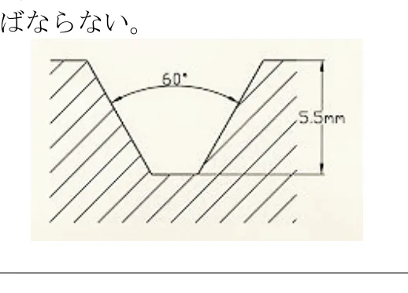
P.1062.5 コントロールエリアでは、セクション内で（図解）のブロック間を最大60°の角度で、グルーブによって深さ最小5.5mm幅2mm削られる表面は、全表面積の少なくとも17%を占めていなければならない。2.6 コントロールエリアでは、半径の線を通るグルーブの幅の合計は少なくとも16mmでなくてはならない。2.7 ブリッジブロックと表面の溝は、2mm未満である場合はトレッドパターンの一部と見なされる。2.8 少なくとも２本の円周線/円周線の最小合計幅＝12mm 2.9 ラリー中は常に、車両に取り付けられたタイヤのトレッドの深さは、トレッドパターンの少なくとも４分の３に渡り1.6mmを下回ってはならない。製造者はこの磨耗が目に見えるように、見える制御マークを提供しなければならない。2.10 各タイヤは、FIAバーコードサプライヤーにより供給された、特定の恒久的成形バーコード番号を有していなければならない。Ｂ. ウェットターマックタイヤ規定（18インチリムのみ）－コントロールエリアでは、セクション内（図解）でのブロック間を最大60°の角度で幅2mmで、グルーブによって深さ最小5.5mm削られる表面は、全表面積の少なくとも27.5%を占めていなくてはならない。－コントロールエリアでは、半径の線を通るグルーブの幅の合計は少なくとも16mmでなくてはならない。－コントロールエリアでは、円周線を通るグルーブの幅の合計は少なくとも4mmでなくてはならない。－少なくとも２本の円周線/円周線の最小合計幅＝12mm －ラリー中は常に、車両に取り付けられたタイヤのトレッドの深さは、トレッドパターンの少なくとも４分の３に渡り1.6mmを下回ってはならない。－各タイヤは、承認されたFIAバーコードサプライヤーにより供給された、特定の恒久的成形バーコード番号およびRFIDタグを有していなければならない。Ｃ. スノータイヤ規定 －スノータイヤはタイヤ公認の必要はないWRCリストNo.1およびNo.2を除く）溝付け率は25％を超えなければならない（第2条3項段落Ａ参照）。
７インチ×１５インチリム
７インチ×１５インチリムに取り付けられるアイスタイヤのスタッド寸法は以下の通り：
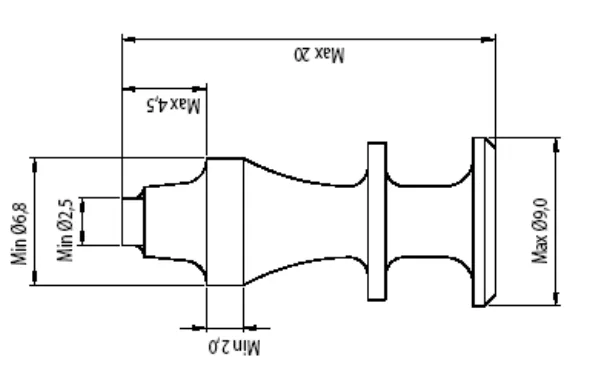
競技会中にスタッドタイヤを使用することができる。それらは次の規定に従っていなけ
P.107ればならない： －スタッドは、中実、円筒形、フラットカットとする－スタッドの断面は、あらゆる点で完全な円でなければならない－スタッドはあらゆる点で管状にすることはできない－スタッドの本体は均質でなければならず、いかなる場合でも管や穴を形成することはできない。－フランジの最大直径は9ミリメートルとする－スタッドの中央にある金属コアの最小直径は2.5ミリメートルとする。 それは、円筒形で、均質でフラットカットでなければならない－スタッドの長さは20ミリメートルに制限される－スタッドの重量は4グラムに制限される－スタッドは外側からタイヤに取り付けなければならない－スタッドの数はホイールの円周の任意のデシメートルあたり20を超えてはならない
測定は、タイヤの非加圧部分にパターンを付けて行う。パターンの長さは30cmであり、パターン内には60本を超えるスタッドがあってはならない。スタッドの数が30cmのセクションで60を超える場合、次の30cmのセクションでさらにチェックが行われ、両方のセクションのスタッドの総数は最大120でなければならない。
８インチ×１８インチのリム
８インチ×１８インチのリムに取り付けられたスノータイヤのスタッド寸法は、次の点に従わなければならない： －トレッドの外側を通って導入された円筒形のシングルポイントスタッドのみが認められる。それらは決してトレッドを通らないこと。
それらは、次の事項を厳しく守らなければならない：
－最大ベース直径：6.5mm、公差を含む。 重量：2グラム； －新品のタイヤの表面を越えるスタッド突出部：最大2mm； －ポイントを含む総スタッド高さ：15mm。公差最大0.5mm； －カバーされる表面密度； －スタッドの数は、47mmの中心バンドを除いてホイールの円周の任意のデシメートル
あたり10を超えてはならず、その中心バンドは自由にしなければならない。－手動または機械的に取り外し可能なスタッドは禁止される。Ｄ. グラベルタイヤ規定 －グラベルタイヤはタイヤ公認の必要はない（ＷＲＣリストNo.1およびNo.2を除く）溝付け率は25％を超えなければならない（第2条3項段落Ａ参照）。
P.108付則(Appendix) VI - 標準のエントリーフィー、管理書類パッケージ
および パーマネントFIAパス
| 世界ラリー選手権 | WRC | WRC2 | ||||||
| 項目 | WRC2(A) | WRC2(B) | 追加RC1 車両 | WRC3 | ||||
| 製造者 | チーム | チーム | ||||||
| 車両の数 | 3 cars | 2 cars | 1 car | 2 cars | 1 car | 1 car | 1 car | 1 car |
| ｽﾃｰﾀｽ | P1 | P1 | P1 またはP2 | P2 | P2 | P2 | P1 またはNP | P3 |
| 登録料金 (ﾕｰﾛ) | 441,352 | 441,352 | 30,350 | 135,385 - 製造者タイトル 13,543 - 非製造者タイトル 0 - WRC 製造者部門登録の場合 4,045 - ドライバーあるいは自国での １競技会目は0 | 2,028 | |||
| ﾗﾘｰｴﾝﾄﾘｰﾌｨｰ (ﾕｰﾛ) | 59,800 | 49,700 | 10,000 | 20,000 | 11,300 | 5,300 | 10,000 | 5,300 |
| 任意の広告 掲載の求め | 無し | 無し | 無し | 無し | 無し | 無し | 有り 追加料金の支払いがな い限り （最大3,000 ﾕｰﾛ） | 有り 追加料金の支払いがな い限り （最大3,000 ﾕｰﾛ） |
| ADR ﾕﾆｯﾄ含む | 6 | 4 | - | - | - | - | - | - |
| 車両プレート | ||||||||
| VIPor ｹﾞｽﾄﾌﾟﾚｰﾄ | 14 | 10 | 2 | 4 | 2 | 0 | ||
| サービス | 8 | 6 | 2 | 4 | 2 | 1 | 1 | 1 |
| Auxiliary(関係者) | 15 | 13 | 3 | 6 | 3 | 1 | 2 | 2 |
| ﾙｰﾄﾉｰﾄｸﾙｰ | 3 | 2 | 1 | 1 （最大1,500 ﾕｰﾛ ラリーエントリー 費用には含まれて いない） | 1 （最大1,500 ﾕｰﾛ ラリーエントリー 費用には含まれて いない） | 1 （最大1,500 ﾕｰﾛ ラリーエントリー 費用には含まれて いない） | 1 | |
| サービス | ||||||||
| ｻｰﾋﾞｽﾊﾟｰｸ のｴﾘｱ | 1300m sq (65 m x 20 m) | 900m sq (45 m x 20 m) | 120m sq (12m×10m or 6m×20ｍ) | 240m sq | 180m sq | 80m sq | 120m sq (12m×10m or 6m×20ｍ) | 80m sq |
| ﾁｰﾑｴﾘｱ内の ﾄｲﾚ | 2 | 2 | 1 | 2 | 1 | 0 | 1 | 0 |
| 給水とごみの 回収 | ||||||||
| ﾍﾘｺﾌﾟﾀｰ ﾌﾟﾚｰﾄ | 1 | 1 | ||||||
| 印刷物および | ||||||||
| パス | ||||||||
| ﾙｰﾄﾌﾞｯｸｾｯﾄ | 10 | 8 | 3 | 6 | 3 | 3 | 2 | 3 |
| ﾙｰﾄﾏｯﾌﾟ | 10 | 8 | 5 | 8 | 5 | 5 | 3 | 5 |
| ﾌﾟﾛｸﾞﾗﾑ | 16 | 12 | 4 | 8 | 4 | 4 | 3 | 5 |
| 安全計画(CD) | 1 | 1 | - | - | - | - | ||
| ﾄﾞﾗｲﾊﾞｰﾊﾟｽ | エントリー車両毎にﾄﾞﾗｲﾊﾞｰﾊﾟｽ2 | |||||||
| ﾁｰﾑﾊﾟｽ | 60 | 50 | 14 | 20 | 10 | 10 | 8 | 6 |
| ｹﾞｽﾄﾊﾟｽ | 75 | 60 | 12 | 15 | 8 | 2 | 5 | 2 |
| パーマネントFIA | ||||||||
| パス | ||||||||
| プライオリティ | 11 | 10 | 2 | 4 | 2 (選手権登録 費用を払って いるドライバー にのみ) | 2 (選手権登録 費用を払って いるドライバー にのみ) | - | 1 (選手権登録費用 を払っているドライ バーにのみ) |
サービスパークまたはその他の競技会会場に技術的または販促目的でタイヤサプライヤーが存在する場合は、プロモーターと商業契約を結ぶ対象となる。表内のすべての料金は現地VATを除いた表示である。
P.109FIAパーマネントパスのリクエストシーズンを通じて有効なFIAパーマネントパスの申請は、以下の電子メールアドレス宛に提出することができる。－ 2026年シーズンに登録されたマニュファクチャラー、チームおよびドライバー： wrcaccreditation@fia.com － FIAサプライヤー： wrcaccreditation@fia.com － WRC主催者： wrcaccreditation@fia.com － メディア（ジャーナリスト／フォトグラファー）： WRCMedia@fia.com － 放送関係者／テレビ： accreditation@wrc.com付則(Appendix) VII - 一連のスタートライト表示カウントダウン： スタート３０秒前－ レッドゾーンとレッドライトスタート１０秒前－ １回の（短い）ビープ音+レッドゾーンとレッドライトスタート５秒前－ 毎秒１回の（短い）ビープ音+イエローゾーンとイエローライト点滅「GO」シグナル：グリーンライト+スタートビープ合図「GO」シグナルの後：２０秒フリースタート+グリーンゾーンとグリーンライト
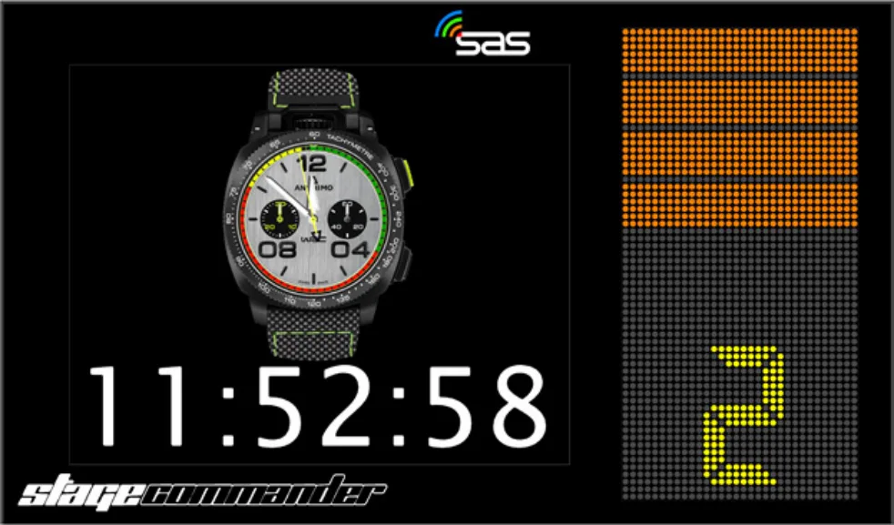
カウントダウン： スタート５秒前：毎秒赤いブロックの表示「GO」シグナル：グリーンライト「GO」シグナルの後：２０秒グリーンライト継続表示
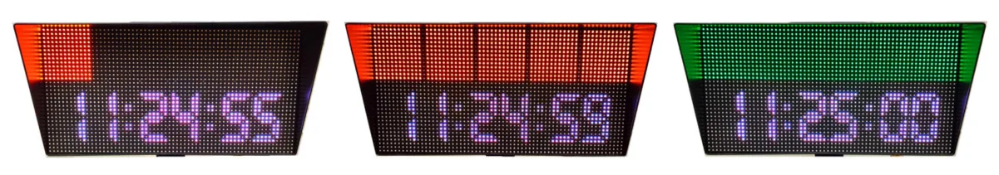
P.110付則(Appendix) VIII – 2026年ジュニアWRC選手権１．公示FIAジュニアWRCは、本付則第4条の通りの対象ラリーにドライバーとコ・ドライバーが第5条に定める参加資格のある車両にて参加する2026年WRC競技規則第1条に規定される、FIA選手権である。FIAジュニアWRCはM-Sport Ltd.がプロモーターとなる。２．参加2.1一般2.1.1 ジュニアWRCでポイントを獲得するためには、ドライバーは、参加を希望する最初の競技会のスタートの３０日前に、FIAウェブサイト：www.fia.comより利用できる申請書式を使用し、ジュニアWRCに登録を行わなければならない。エントリー登録は常にFIAの承認を必要とし、またジュニアWRCプロモーターと締結するドライバー協定にドライバーが署名しそれに従うことを条件とする。ジュニアWRC選手権への登録は、ドライバーの氏名でのみ行うことができる。個々の競技会へのエントリーは、次の名前で行うことができる： － ドライバーの氏名、あるいは－ チームまたはスポンサー名、あるいは－ ASN指定チームの名称。常に最新かつ有効な競技参加者ライセンスを提示することが条件となる。2.1.2 ジュニアWRC選手権の対象となるラリーは５競技会である。2.2ドライバー2.2.1 ジュニアWRCに参加し、ポイントを獲得する資格を得るには、ドライバーは： a) 1997年1月1日以降に生まれた者でなければならない； b) 2026年最初のWRC3ジュニアラリーの前に、FIA世界ラリー選手権で製造者ポイントを獲得するために指名されたプライオリティ１（P1)ドライバーとして参戦した経歴があってはならない； 2.2.2 ジュニアWRC選手権に登録し、参加するドライバーのみが、ラリーのスペシャルステージを運転できる。2.2.3 2026年ジュニアWRC選手権の総合優勝ドライバーの獲得賞典は後日確認される。2.3コ・ドライバー2.3.1 コ・ドライバー勝者は、2026年ジュニアWRC選手権コ・ドライバー部門チャンピオンが授与される。2.3.2 ドライバーはシーズンの途中でコ・ドライバーを変更することができるが、WRC競技規則に合致することが条件とされる。コ・ドライバーが獲得したポイントは、コ・ドライバーのものとして残る。2.3.3 コ・ドライバーは、ジュニアWRCシーズンの間で、２名以上のドライバーと組むことができる。
P.111３．ポイント3.1一般3.1.1 ジュニアWRCチャンピオンのタイトルは、最高ポイントを獲得したドライバーおよびコ・ドライバーに与えられる。3.1.2 ポイントは、ジュニアWRCの登録をしたドライバーとコ・ドライバーに、ジュニアWRC競技会の総合順位を基にそれぞれに別々の順位が作られ、それに従って与えられる。2026年ジュニアWRC選手権で獲得したポイントは、ドライバーおよびコ・ドライバーそれぞれの氏名にて獲得する。3.1.3 登録したドライバーあるいはコ・ドライバーのそれぞれから、最良の４つの競技結果のみがジュニアWRC選手権の最終順位認定に算入される。3.1.4 競技者が競技全体で失格となった場合、第3条1項3に定められている、その特定の選手権またはカップタイトルの最終的な合計獲得ポイントを決定するラリーの１つとして常にカウントされる。3.1.5 ジュニアWRCより撤退した、あるいは失格または一時資格停止となったドライバーあるいはコ・ドライバーのポイントは、ジュニアWRC認定順位に留まる。3.2ラリーのポイント3.2.1 ジュニアWRCドライバーおよびコ・ドライバーには、各ラリーで獲得したポイントが、ジュニアWRC総合順位に基づき、以下の基準で与えられる。１位２５ポイント２位１７ポイント３位１５ポイント４位１２ポイント５位１０ポイント６位 ８ポイント７位 ６ポイント８位 ４ポイント９位 ２ポイント１０位 １ポイント3.2.2 ジュニアWRCの最終ラウンドでは、ジュニアWRC内で2026年の前年のジュニアWRCラウンドの少なくとも3戦に参加して出走したという条件でのみ、順位認定された各ドライバー（あるいはコ・ドライバー）のポイントは以下のようになる： １位５０ポイント２位３６ポイント３位３０ポイント４位２４ポイント５位２０ポイント６位１６ポイント７位１２ポイント８位 ８ポイント９位 ４ポイント１０位 ２ポイントジュニアWRC内で2026年の前年のジュニアWRC選手権ラウンドの少なくとも3戦に参加せず出走していないドライバー（およびコ・ドライバー）は、通常のFIA
P.112ポイント配分に従ってポイントを受ける。つまり、2倍にはならなない。3.2.3 ジュニアWRCの順位認定は、ラリーの最終総合順位を基に作られる。結果は、FIA WRC競技規則第64条に合致して公表される。3.3ステージポイント3.3.1 ジュニアWRCアイテナリーの各ステージでは、登録されたジュニアWRCクルーの中で最速のステージタイムを達成したジュニアWRCドライバーとコ・ドライバーに、それぞれ1つのステージポイントが与えられる。2人（またはそれ以上）のクルーが同等の最速時間を達成した場合、これと同じ最速時間を達成したすべてのクルーに1つのステージポイントが与えられる。3.3.2 WRC競技規則第54条2項の適用で暫定のまたはRally2のタイムを割り当てられたジュニアWRCのクルーには、ステージポイントは授与されない。この場合、ステージポイントは、ステージを正常かつ正しく完走し最速のステージタイムを記録したジュニアWRCクルーに割り当てられる。2名（またはそれ以上）のクルーが同着であって、当該クルーの１名（またはそれ以上の）が暫定タイムを割当てられていた場合、ステージポイントは授与されない。3.3.3 ジュニアWRCクルーの50％以上が特定のステージで暫定タイムを割当てられていた場合、ステージポイントは授与されない。3.3.4 ジュニアWRCアイテナリーの最終日を含め、任意の時点で完全にリタイアしたクルーは順位の認定はされないが、それまでに成立したステージポイントは保持することができる。しかしながら、一時的にリタイアし、WRC競技規則第54条の下で続行したクルーは、競技会の完了により順位認定がなされ、それまでの一切の獲得したステージポイントを保持できる。3.3.5 ステージで反則スタートをしたクルー、特にスタート信号が与えられる前にスタートしたクルー、またはステージを正しく完了しなかったクルーは、そのステージでステージポイントを獲得しない。3.3.6 ステージポイントは、5回のジュニアWRCラウンドのすべてから得点し、保持することができる。3.4同点の解決ジュニアWRC選手権で発生した一切の同点は、2026年FIA WRC競技規則第8条に従って解決される。FIA WRC競技規則の第8条が2026年ジュニアWRCのいずれかの部分で同着を解決できない場合は、その同点はジュニアWRC最終戦の最終ステージで最速タイムを達成したドライバーおよび/またはコ・ドライバーに有利に決定される。同点に関与するクルーが最終戦の最終ステージで同タイムである場合、あるいはそのステージのクルーのいずれかに暫定タイムが適用された場合、最後から2番目のステージでの最速タイム、次に最後から2番目のステージの前のステージ（というように）、同点が解決されるまでこのように使用される。４．カレンダー4.1 2026年のジュニアWRCラリー対象ラリーは、次の通り：ラウンドラリー日程1スウェーデン2月12日-15日2クロアチア4月9日-12日3ポルトガル5月7日-10日
| ラウンド | ラリー | 日程 | ||||||
| 1 | スウェーデン | 2月12日-15日 | ||||||
| 2 | クロアチア | 4月9日-12日 | ||||||
| 3 | ポルトガル | 5月7日-10日 |
P.1134フィンランド7月30日-8月2日5チリ9月10日-13日ジュニアWRCラリーが中止となった場合、代替の競技会が指定される場合がある。５．参加可能な車両5.1唯一の参加資格を有する車は、M-Sport LtdのFIAジュニアWRCの各ラリーに独占的に準備され提供されたフォードフィエスタRally3ラリーカー、公認番号A5782であり、FIA（付則J項）の技術規則のすべての規定、FIAの安全要件、ならびにWRC競技規則の付則(Appendix) VIIIの特定の規則および条項に従う車両である。5.2ラリー車両は、いつでも、これらの規則およびM-Sport Ltdが発行し、M-Sport Ltdの代表者によって署名された仕様書に合致していなければならない。その仕様書は各対象ラリーの車両検査にてFIAテクニカルデリゲートに渡されなければならない。5.3車両への一切の変更、部品の取り外しあるいは追加、供給された車両の修正あるいは改造は（明らかに許可されている場合を除き）厳禁とされる。5.4 FIA WRC競技規則第32条2項1にもかかわらず、ジュニアWRC車両サプライヤーは、封印シールが破壊されたり改ざんされていない限り、サプライヤーが封印し供給した部品およびユニットの適合性について責任を負う。６．使用できるタイヤ6.1使用できるタイヤは2026年FIA WRC競技規則に合致したハンコックタイヤである。6.2タイヤのタイプ（含複数）と最大本数は、各競技特別規則書、あるいは競技会前のブルテンにて発表される。6.3各ジュニアWRC車両は、スペシャルステージを含む一切のセクション前のサービスエリアを出る時、タイヤのついたスペアホイールを１本か２本搭載していることが義務付けられる。WRC競技規則第13条9項もジュニアWRCに適用される。6.4すべてのジュニアWRC競技参加者は、タイヤサプライヤーはラリーの各競技会前（事前車両検査）にFIAテクニカルデリゲートへバーコードの完全なリストを送付しなければならない。７．レッキ7.1レッキ車両レッキ走行のため、ジュニアWRCのクルーは、以下を使用することができる： － WRC競技規則第35条1項1にのみだけ合致する「標準車両」。－ WRC競技規則第35条1項2に合致する２輪駆動の「量産車両」。８．スタート順と間隔8.1ラリーのスタート順8.1.1 ジュニアWRCクルーは、パフォーマンスの順番で、P3との合併グループと
| 4 | フィンランド | 7月30日-8月2日 |
| 5 | チリ | 9月10日-13日 |
P.114なって、ラリーの最初のセクションをスタートする。8.1.2 ジュニアWRC選手権の第１戦では、ジュニアWRC競技スーパーバイザーおよびFIAが、オーガナイザーに対しジュニアWRCスタート順を勧告する。8.2第２日のスタート順8.2.1 第２日、および適用のある場合にはそれに続く日のスタート順は、前日の最終スペシャルステージのフィニッシュ時点での総合認定順位に基づき、常に第41条2項に従う。９．燃料すべてのジュニアWRCドライバーは、指定されたサプライヤーによって提供されるFIA燃料を使用しなければならない。WRC競技規則第61条に規定される手順が守られなければならない。１０．メカニカルコンポーネントのマーキングおよび封印スペア・トランスミッション（第16条3項参照）は、その装備時に特定の車両番号を割り当てられる場合がある。 事前にFIAテクニカルデリゲートに通知しなければならない。一度特定の車両の番号を割り当てられたトランスミッションは、別の車両で使用することはできない。ジュニアWRCの各車両について、車両に装備されたエンジンブロックおよびギアボックスが、大会前車検で最新の専用のシール形式に従い封印される。各競技参加者は大会前車検の間に、最大で１つのスペアギアボックスと１つのスペアターボの封印を受けることができる。FIAは、その他の部品も封印またはマーキングすることを要求することができる。１１．車検11.1 FIAテクニカルデリゲートあるいはそのアシスタントは、ラリーの前、最中、および後で車両の詳細な査察を実施する権限を有する。車両の封印あるいは個々の部品の改ざん、または取り外しは禁止される。11.2ジュニアWRCプロモーターは、大会前車検でラリー車両とそれに関連するスペアを提示するが、登録された競技参加者は、安全装備（ヘルメット、オーバーオール、FHR、アンダーウェア、ソックス、バラクラバ、グローブなど）を車検にて適切な時間に提示するために、自身の手配を行うよう求められる。
P.115付則(Appendix) IX – 組織要件明細1. 候補ラリ－ WRCプロモーターが、提案されたイベントオーガナイザーとの間でイベントプロモーション契約を締結した旨の通知を受領した後、ASNが当該競技をFIA WRCカレンダーに含めることを希望する場合、ASNは候補ラリー査察を要請するため、FIAロード競技部門に連絡しなければならない。
ASNは、当該ラリーを候補ラリーとしてFIA国際カレンダープラットフォームに登録し、適用される料金を支払わなければならない。
FIAロード競技部門およびセーフティ部門は、当該候補ラリーと緊密に連携し、WRCのセーフティ、競技およびメディカルに関する要件への適合に向けた準備が確実に行われるよう支援するものとする。
候補ラリーには以下の要件が適用される。－ 候補ラリーは、WRCカレンダーへの組み込み目標とする年と同一年に開催することはできず、また、計画されているWRCラリーの開催予定日の少なくとも9か月前までに開催されなければならない。－ 可能な限り、候補ラリーは、将来のWRCラリーの発展を促進するため、国内選手権またはFIA地域ラリー選手権における既存の競技を基盤として実施されるべきである。いかなる場合においても、候補イベントの形式および構成はFIAの承認を得なければならない。評価のため、候補者ラリーでは、少なくとも1日につき1つのスペシャルステージがWRC基準に従って設定され、候補者ラリーで運営を担当する競技長、チーフセーフティオフィサー、チーフメディカルオフィサーは、当該ラリーがWRCカレンダーへの掲載が承認された場合、そのWRCラリーにおいても同様に任命されなければならない。上記主要オフィシャルについて、WRCカレンダーへの掲載前に変更がある場合は、FIAによる確認の対象となる。
候補ラリーの前および開催期間中に、FIAは以下の事項について確認を行う（以下は網羅的な一覧ではない）： － 競技、セーフティおよびメディカルに関する各種文書並びにそれらの実施状況。－ スペシャルステージ（アイテナリーに記載されたものに加え、将来のWRCラリーでの使用を提案されている追加のスペシャルステージを含む）について、競技性、セーフティおよびメディカル面、運営および管理等。－ WRCラリー期間中に使用される各種施設：サービスパーク、ラリー本部（HQ）、メディアセンター、パルクフェルメ、車両検査施設、セレモニアルスタート、リグループ、給油ゾーン、タイヤフィッティングゾーン、ならびにFIAが関連性ありと判断するその他の施設。－ メディカルおよびレスキュー用車両および装備、メディカルセンター、ならびに最寄りの高度外傷治療対応医療機関。
P.116候補ラリー終了後、競技面、セーフティ面およびメディカル面に関する報告書が作成される。これらの報告書は、ASNおよびラリーオーガナイザーに対し、WRC基準に関する指針を示すとともに、当該イベントが翌年のWRCカレンダーに組み入れられる適格性を評価することを目的とする。各報告書にはアクションリストを含めるものとし、そこには翌年のWRCラリー開催に向けてラリーオーガナイザーが厳格に実施しなければならない項目を明記しなければならない。
FIAは、WRCプロモーターによって提案されるカレンダー登録対象として、候補イベントが適格であるか否かを判断する唯一かつ最終の権限を有するものとする。
P.117付則(Appendix) XI – WRC権利本競技規則により統括されるFIAラリー選手権の対象となる一切のラリーに参加するすべての競技参加者は、すべての著作権、データベース権および、ありとあらゆる関連の権利、隣接権、視聴覚（AV）権、ドメイン名権、「FIA」、「世界ラリー」、「世界ラリー選手権」、「WRC」およびFIA世界ラリー選手権」（および、その翻訳または変形配列）を含めた商品名および商標を含むがそれに限られることのない、対応のFIAラリー選手権に関連する全権、すべてのタイトルおよび権益が、それらに与えられる一切の関連する営業権が、独占的にFIAの所有にあることを認め、それに合意する。FIA（および／あるいはその任命者）により書面の同意を得た目的外で、競技参加者がそのような権利の使用をすることは認められない。本競技規則により統括されるFIAラリー選手権の対象となる一切のラリーに参加するすべての競技参加者は、FIA（あるいはその任命者）が、対応のFIA選手権のラリーに参加する競技参加者の記録あるいは複製（競技参加者チーム、車両、ユニフォーム、ドライバーおよびチーム員の映像、ロゴ、外装、彩色、名称、言語商標およびそれに類似するもの、さらに競技参加者の外装に提示されるチームスポンサーの名称およびロゴを含む）をいかなる形態でも、同意を得ることなく、正式許可または料金支払いの必要なく、対応するFIAラリー選手権のプロモーションの利益となるありとあらゆる目的で（マーケティング、宣伝広告活動、さらにその他一切の形態の商業的メッセージ発信を含む）制作および使用することを認め、それに合意する。そのような使用は、FIA（あるいはその任命者）の単独裁量権により、放送局、メディアパートナー、選手権スポンサーまたは使用権所得者に拡大適用される。そのような使用には、視聴覚（AV）記録、写真、すべての形態の取材編集、情報ガイド、プロモーションアイテム、双方向性ゲームおよび対応のFIAラリー選手権の競技参加者を、その他２者の参加者と共に表した一切のアイテムを含むが、それらに限られない。FIA（あるいはその任命者）は、そのような使用が常に公平で偏りがなく、正確な競技参加者の姿を表すものであり、競技参加者の製品やサービスの宣伝の意味を含めたり示唆したりするものでないことを保証する。FIA（あるいはその任命者）は、競技参加者が発行する場合のある関連のブランディング・ガイドラインに従う合理的努力をする。
P.118付則(Appendix) XII - 環境マネジメント1環境マネジメント1.1すべてのWRCおよびWRC候補イベントのオーガナイザー（競技会の管理および実施を担当する組織）およびWRC製造者は、そのシーズンにFIA環境認証プログラム（FIA Environmental Accreditation Programme）を実施し、遵守しなければならない。彼らは、最高レベル認証である三つ星レベルを達成し、維持する必要がある。WRC選手権に初めて参加するWRCイベントの主催者は、初年度中に二つ星レベルを申請することができるが、翌年には三つ星レベルを達成しなければならない。1.2 WRCおよび候補イベントのオーガナイザーおよびWRC製造者は、WRC第20条5項1に定められたスケジュールに従って認定プロセスを管理する責任がある。1.3 FIA環境認証プログラム（FIA Environmental Accreditation Programme）における、各自業務に関するセクションの総数を特定するのは、各オーガナイザーおよび製造者の判断となる。1.4認定ガイドラインはhttps://www.fia.com/environmental-accreditation-programmeで入手可能。WRCオーガナイザーおよびWRC製造者は、下記の登録用紙に記入すること： http://bit.ly/wrcform
P.119付則(Appendix) XIII - 車載カメラ1.はじめに以下の手順は、2026年付則J項第262条に従うRC1車両のすべての競技参加者に適用される。これは、WRC競技規則第18条1項に基づきプロモーターが指定した車載カメラおよび/またはその他の記録装置のみに関連する。これらの競技参加者は、次のコンポーネントの搭載を容易にできるようにしなければならない： 1）車載レコーダーとトランスミッター（「ORAT」）2）カメラレンズ3）カメラ配線器とケーブル4）カメラ取付金具5）送信アンテナそのようなコンポーネントの寸法、重量、固定機構は、プロモーターが任命した公式のテレビ会社を通じて通知され、時折更新されることがある。競技参加者は、競技会中にコンポーネントが取り付けられたり取り外されたりすることによって発生する可能性のある車両の重量の変化を補償する責任がある。これは、以下の第5項で言及されるコンポーネントの変更にも適用される。2. ORAT 装置の要件2.1搭載競技参加者は、公式のテレビ会社と書面で別の場所が合意されていない限り、ORATユニットを設置するための以下のスペースを車両内に確保すること： －コントロールパネルと記録メディアスロットへのアクセスだけでなく、ケーブルの簡単な接続を可能にするために、シャシー/ドアシルの最内側の端から80mm以上後退させる。および－シャシー/ドアシルとORATユニットの間に障害物がないこと。2.2アクセシビリティ競技参加者は、ORATを設置するために提供するスペースに、ORAT操作員が以下をすることを妨げる妨害物がないことを確認しなければならない： －チームによって設置された機器またはケーブルの取り外しや中断なしに、10分以内にORATユニットの変更、交換および/またはテストを行う。 および－ ORATユニットを10分以内にコックピットから完全に取り外すこと。2.3パワー競技参加者は、ORATに以下を供給すること： －車の「マスター」電力がアクティブである（エンジンが稼働しているかどうかにかかわらず）ときは常に、最小12.0ボルト、7.0アンペア（ORATへの接続点で測定される）を供給する直接の切り替えられないDC電源。 および－車が「ステージ」または「ブースト」モードにあるときは常に、最小12.0ボルト、1.0アンペア（ORATへの接続点で測定される、トリガーに必要なもの）を供給する１つのスイッチで切り替えられるDC 12V電源。
P.1203.カメラのレンズ、配線器とケーブル3.1取り付け競技参加者は、車両内に、コネクターと1つ以上のカメラレンズを備えたカメラ配線器を以下の位置に設置するためのスペースを確保しなければならない： －コ・ドライバー側の「A」ピラー上の2つの位置。－運転席側の「A」ピラーの1つの位置。－従来のPOV（視点）カメラの位置を考慮して、運転席とコ・ドライバー運転席の背後のセンターロールバーの1つの位置。－ドライバーとコ・ドライバーシートの間の1つの位置。この場合、カメラレンズはエネルギー吸収素材のブロックに組み込まれていなければならない。（FIAテクニカルリストNo.58参照）金属支持具は認められない。－エンジン室内の1つの位置で、カメラをフロントボディのパネルまたはライトの中または上に取り付けることができる場所。3.2装備の供給競技参加者は、公式のテレビ会社と特別に合意しない限り、公式のテレビ会社から提供されたケーブルを使用しなければならず、その後供給された通りの正確な技術仕様（要求に応じて）でのみ使用しなければならない。4.カメラ取付システム公式のテレビ会社と特別に合意しない限り、公式のテレビ会社から供給されたカメラおよびその他の取付システムのみが使用でき、その後、供給された通りの正確な技術仕様（必要に応じて）でのみ使用される。5.車両の公認部品の変更個々の競技参加者と協力し、FIAテクニカルデリゲートの事前の同意を得て、公式のテレビ会社は、（追加の）カメラレンズ、ケーブルおよび取付具の設置を容易にするために、機械的ではない公認部品に特定の変更を加えることができる。 そのような変更には、（取外し可能な）本体パネル、灯火用開口部、ダクト、ブランキングプレート、ダッシュボード、ブラケットおよび同様のコンポーネントに対する変更が含まれ得る。 そのような変更は、空気力学的にまたは他の方法で、車両の性能に有意な有益な効果を持つことはできない。6. FIA高速度カメラ – Rally1車両でエントリーの製造者向けのみFIA指定サプライヤーからの高速度カメラ１台を取り付けることが必須とされ、取付は以下の基準を満すものとする： 方向：後方へ向けられる。ピッチ：車両の基準面に平行、あるいは、それが不可能である場合、ヘルメットと上半身を明瞭にとらえることを確実にするなるべく近く。ロール：垂直（車両の基準面について）
P.121ヨー：車両の前後方向中心線に一致する注：取り付け容易になるのであれば、カメラを垂直に逆さにすることができる（180度ロール方向回転）。位置：カメラはダッシュボードの範囲内でまとめられなければならず、レンズが妨げられず、ダッシュボードが事故の場合にカメラに当たらないことを確実とする。X: シート横ショルダーサポート前端の大体カメラの後部面約［800-1000］mm前方Y: 車両の前後方向中心線に沿ってZ: ヘルメットと上半身を明瞭にとらえることができるように。ガイダンス：レンズの中心がおおよそ、シート横トップ端部（着席者の最高点）とシート横ショルダーサポート（着席者の最下点）の底部端の中間に設定。注：レンズの中心は、カメラ底部の上方14mm。固定：メーカー指示に従い、カメラは堅固な支持具でボルト留めされる。配線：カメラのロガーへの配線コネクターおよび給電は、通常の走行およびアクシデントの間、損害の危険性を抑えるように配線されなければならない。
付則(Appendix) XIV - 高電圧操作の安全性
適用される場合、競技者、ドライバー、ASN、プロモーター、主催者、ボランティア、オフィシャルは、国際モータースポーツ競技規則付則H項の第10条を遵守しなければならず、FIAからの要求に応じて、FIAが必要とみなすコンプライアンスの証明を提出しなければならない。